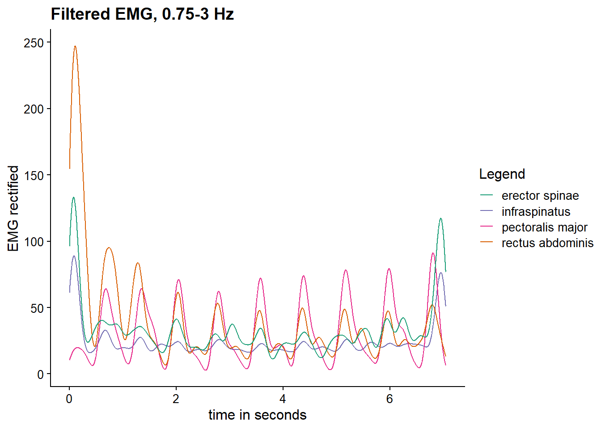
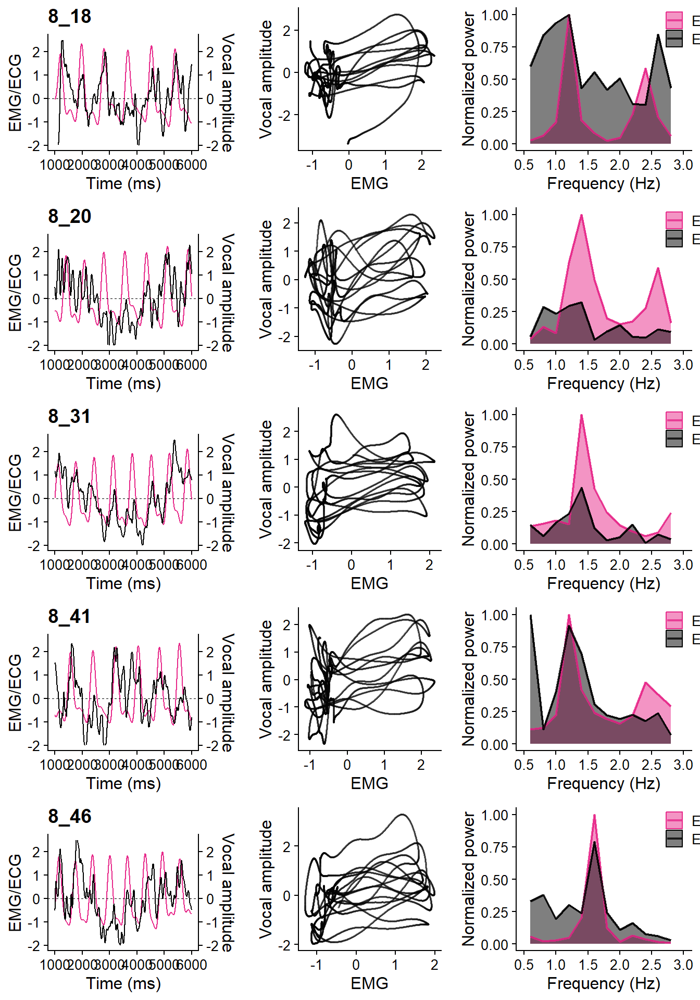
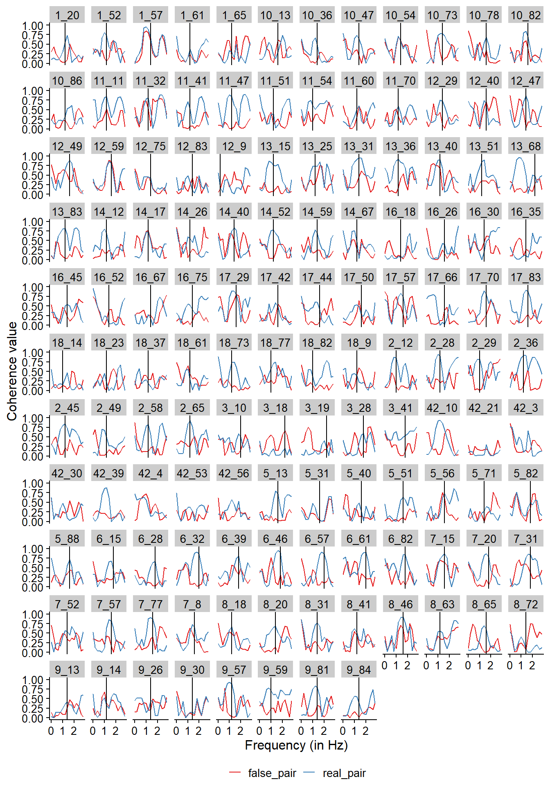
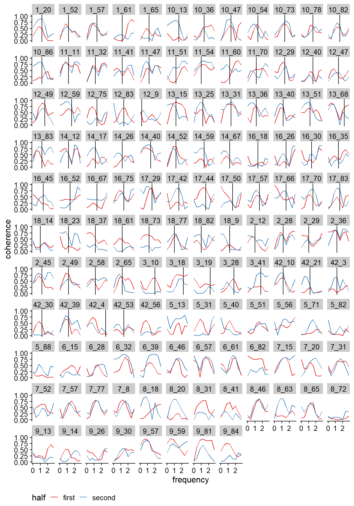
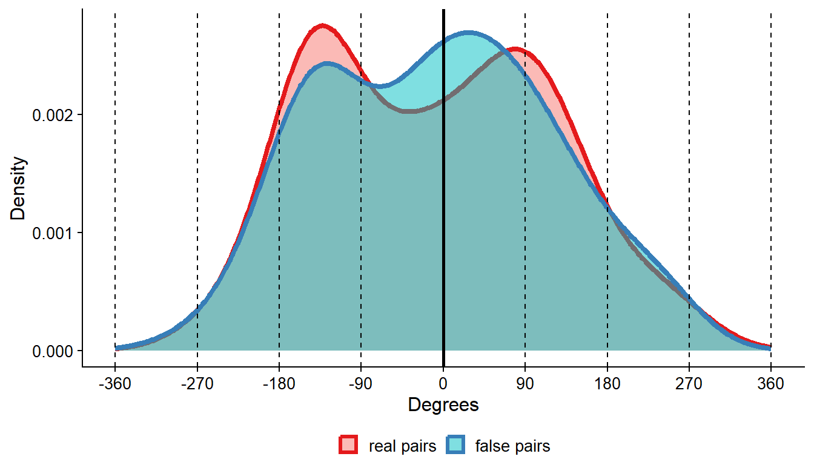

Tilburg University, Department of Computational Cognitive Science
This is a fully computationally reproducible manuscript written in Rmarkdown. It contains the extended results and supplementary information of “Dissociating mechanisms of heart-voice coupling”. For clarity, the section in the paper corresponding to the chunks of code is indicated on the right. Code chunks are hidden by default, but can be made visible by clicking “Show code”. The full dataset is available at the Donders Repository and forms the input for these scripts https://data.ru.nl/collections/di/dcc/DSC_2023.00002_259.
Code
#Local datalocalfolder <-"D:/Research_projects/veni_data_local/vocalization/exp100/"#"This points to your local data that you have downloaded from SURF" #lets set all the data foldersrawd <-paste0(localfolder, 'Trials/') #raw trial level dataprocd <-paste0(localfolder, 'Processed/triallevel/') #processed data folderprocdtot <-paste0(localfolder, 'Processed/complete_datasets/') #processed data folderdaset <-paste0(localfolder, 'Dataset/') #dataset foldermeta <-paste0(localfolder, 'Meta/') #Meta and trial data#load in the trialinfo data (containing info like condition order, trial number etc)trialf <-list.files(meta, pattern ='triallist*')triallist <-data.frame()for(i in trialf){ tr <-read.csv(paste0(meta, i), sep =';') tr$ppn <-parse_number(i) triallist <-rbind.data.frame(triallist,tr)}#make corrections to trial list due to experimenter errors# p10 trial 21 run with a weighttriallist$weight_condition[triallist$ppn==10& triallist$trial=="21"] <-'weight'#triallist$trialindex[triallist$ppn==10 & triallist$trial=="21"]# p14 double check trial "51", "52", "53" were all weight conditiontriallist$weight_condition[triallist$ppn==14& triallist$trial%in%c("51", "52", "53")] <-'weight'#triallist$trialindex[triallist$ppn==14 & triallist$trial%in% c("51", "52", "53")]#load in the metainfo data (containing info like gender, handedness, etc)mtf <-list.files(meta, pattern ='bodymeta*')mtlist <-data.frame()for(i in mtf){ tr <-read.csv(paste0(meta, i), sep =';') mtlist <-rbind.data.frame(mtlist,tr)}mtlist$ppn <-parse_number(as.character(mtlist$ppn))# triallist combines all trial-related CSVs into a single dataframe.# mtlist combines all metadata from multiple files into a single dataframe# triallist and mtlist are now in memory and ready to be analyzed in later chunks.
Signal preparation
EMG pre-processing
Rather than filtering the four sEMG signals (erector spinae, infraspinatus, pectoralis major and rectus abdominis) to reduce heart rate artifacts (Drake and Callaghan 2006), we were interested in the reflection of heart rate as present in the sEMG signals. Accordingly, we removed any higher-frequency components from the signal and retained low-frequency bands, while removing the very low components to avoid baseline drift. This was done by high-pass filtering the signal at 0.75 Hz using a zero-phase 4th order Butterworth filter. We then full-wave rectified the EMG signal and applied a zero-phase low-pass 4th order Butterworth filter at 3 Hz. We padded the signals upon filtering to avoid edge effects.
In other words, the pass-band from 0.75 to 3 Hz allowed us to cover any heart rates from 45 to 180 beats per minute.
Code
# load in the data and save itlibrary(signal)library(ggrepel)# preprocessing functionsbutter.it <-function(x, samplingrate, order, cutoff, type ="low"){ nyquist <- samplingrate/2 xpad <-c(rep(0, 1000), x, rep(0,1000)) #add some padding bf <-butter(order,cutoff/nyquist, type=type) xpad <-as.numeric(signal::filtfilt(bf, xpad)) x <- xpad[1000:(1000+length(x)-1)] #remove the padding}#rectify and high and low pass EMG signalsreclow.it <-function(emgsignal, samplingrate, cutoffhigh, cutofflow) {#high pass filter output <-butter.it(emgsignal, samplingrate=samplingrate, order=4, cutoff = cutoffhigh,type ="high")#rectify and low pass output <<-butter.it(abs(output), samplingrate=samplingrate, order=4, cutoff= cutofflow,type ="low")}###############################################################################LOAD IN EMG DATAEMGdata <-list.files(rawd, pattern ='*Dev_1.csv')####################################SET common colors for musclescol_pectoralis <-'#e7298a'col_infraspinatus <-'#7570b3'col_rectus <-'#d95f02'col_erector <-'#1b9e77'colors_mus <-c("pectoralis major"= col_pectoralis, "infraspinatus"= col_infraspinatus, "rectus abdominis"= col_rectus, "erector spinae"= col_erector)#show an exampleemgd <-read.csv(paste0(rawd, EMGdata[822]))colnames(emgd) <-c('time_s', 'infraspinatus', 'rectus_abdominis', 'pectoralis_major', 'erector_spinae', 'empty1', 'empty2', 'empty3', 'empty4', 'respiration_belt', 'button_box')samplingrate <-1/mean(diff(emgd$time_s))nyquistemg <- samplingrate/2
When applying the filter as specified above, this is what the four sEMG signals looked like for a participant in the no movement condition.
Code
#show another example, now from no movement condition#we use p18, trial 73#grep("p18_trial_73_BrainAmpSeries-Dev_1.csv", EMGdata)emgdnomov <-read.csv(paste0(rawd, EMGdata[824]))colnames(emgdnomov) <-c('time_s', 'infraspinatus', 'rectus_abdominis', 'pectoralis_major', 'erector_spinae', 'empty1', 'empty2', 'empty3', 'empty4', 'respiration_belt', 'button_box')samplingrate <-1/mean(diff(emgdnomov$time_s))nyquistemg <- samplingrate/2emgdnomov$time_s <- emgdnomov$time_s-min(emgdnomov$time_s) # normalize time#example with high-pass filter at 0.75 and low-pass filter 3 Hz# cutoffhigh = high-pass filter, cutofflow = low-pass filteremgdnomov$pectoralis_major_sm_h <-reclow.it(emgdnomov$pectoralis_major, samplingrate= samplingrate, cutoffhigh =0.75, cutofflow =3) emgdnomov$infraspinatus_sm_h <-reclow.it(emgdnomov$infraspinatus, samplingrate= samplingrate, cutoffhigh =0.75, cutofflow =3) emgdnomov$erector_spinae_sm_h <-reclow.it(emgdnomov$erector_spinae, samplingrate= samplingrate, cutoffhigh =0.75, cutofflow =3) emgdnomov$rectus_abdominis_sm_h <-reclow.it(emgdnomov$rectus_abdominis, samplingrate= samplingrate, cutoffhigh =0.75, cutofflow =3) #example trialfilteredEMGnomov <-ggplot(emgdnomov[seq(1, nrow(emgdnomov),by=5),], aes(x=time_s)) +geom_path(aes(y=infraspinatus_sm_h, color ='infraspinatus')) +geom_path(aes(y=pectoralis_major_sm_h, color ='pectoralis major')) +geom_path(aes(y=rectus_abdominis_sm_h, color ='rectus abdominis')) +geom_path(aes(y=erector_spinae_sm_h, color ='erector spinae')) +ggtitle('Filtered EMG, 0.75-3 Hz') +scale_color_manual(values = colors_mus)filteredEMGnomov <- filteredEMGnomov +labs(x ="time in seconds", y ="EMG rectified", color ="Legend") +xlab('time in seconds') +ylab('EMG rectified') +theme_cowplot(12) +theme(legend.position ="right")filteredEMGnomovinfra <-ggplot(emgdnomov[seq(1, nrow(emgdnomov),by=5),], aes(x=time_s)) +geom_path(aes(y=infraspinatus_sm_h, color ='infraspinatus')) +ggtitle('infraspinatus') +scale_color_manual(values = colors_mus) +labs(x ="time in seconds", y ="EMG rectified", color ="Legend") +xlab('time in seconds') +ylab('EMG rectified') +ylim(0, 150) +theme_cowplot(12) +theme(legend.position ="none")filteredEMGnomovpec <-ggplot(emgdnomov[seq(1, nrow(emgdnomov),by=5),], aes(x=time_s)) +geom_path(aes(y=pectoralis_major_sm_h, color ='pectoralis major')) +ggtitle('pectoralis major') +scale_color_manual(values = colors_mus) +labs(x ="time in seconds", y ="EMG rectified", color ="Legend") +xlab('time in seconds') +ylab('EMG rectified') +ylim(0, 150) +theme_cowplot(12) +theme(legend.position ="none")filteredEMGnomovrectus <-ggplot(emgdnomov[seq(1, nrow(emgdnomov),by=5),], aes(x=time_s)) +geom_path(aes(y=rectus_abdominis_sm_h, color ='rectus abdominis')) +ggtitle('rectus abdominis') +scale_color_manual(values = colors_mus) +labs(x ="time in seconds", y ="EMG rectified", color ="Legend") +xlab('time in seconds') +ylab('EMG rectified') +ylim(0, 150) +theme_cowplot(12) +theme(legend.position ="none")filteredEMGnomoverector <-ggplot(emgdnomov[seq(1, nrow(emgdnomov),by=5),], aes(x=time_s)) +geom_path(aes(y=erector_spinae_sm_h, color ='erector spinae')) +ggtitle('erector spinae') +scale_color_manual(values = colors_mus) +labs(x ="time in seconds", y ="EMG rectified", color ="Legend") +xlab('time in seconds') +ylab('EMG rectified') +ylim(0, 150) +theme_cowplot(12) +theme(legend.position ="none")

Example of heart rate/ECG signal’s presence in the four different sEMG signals. This example is from the no movement condition.
Fig.@ref(fig:EMGnomovsmoothing) shows the four different, filtered sEMG signals in one plot. To further inspect, which ones are more apt for studying heart rate, we separated the signals in Fig.@ref(fig:EMGnomovsmoothingseparate). As becomes clear from these graphs, both the pectoralis major and rectus abdominis signals clearly reflect the cardiac activity.
Warning: Removed 128 rows containing missing values or values outside the scale range
(`geom_path()`).
Example of heart rate/ECG signal’s presence in the sEMG signals. The plot shows the raw rectified high-pass filtered sEMG. This example shows a no movement. The heart rate peaks are especially visible in the sEMG of the pectoralis major and the rectus abdominis, and less strongly in erector spinae and infraspinatus. The latter are attached on the participant’s back and more distant to the heart.
Acoustics pre-processing
For acoustics we extracted the smoothed amplitude envelope. For the envelope we applied a Hilbert transform to the waveform signal of the vocal intensity, then took the complex modulus to create a 1D time series, which we then resampled at 2,500 Hz, and smoothed with a Hann filter based on a Hanning Window of 12 Hz. We normalized the amplitude envelope signals within participants before submitting to analyses.
Code
library(rPraat) #for reading in soundslibrary(dplR) #for applying Hanninglibrary(seewave) #for signal processing generallibrary(wrassp) #for acoustic processing##################### MAIN FUNCTION TO EXTRACT SMOOTHED ENVELOPE ###############################amplitude_envelope.extract <-function(locationsound, smoothingHz, resampledHz){#read the sound file into R snd <- rPraat::snd.read(locationsound)#apply the hilbert on the signal hilb <- seewave::hilbert(snd$sig, f = snd$fs, fftw =FALSE)#apply complex modulus env <-as.vector(abs(hilb))#smooth with a hanning window env_smoothed <- dplR::hanning(x= env, n = snd$fs/smoothingHz)#set undeterminable at beginning and end NA's to 0 env_smoothed[is.na(env_smoothed)] <-0#resample settings at desired sampling rate f <-approxfun(1:(snd$duration*snd$fs),env_smoothed)#resample apply downsampled <-f(seq(from=0,to=snd$duration*snd$fs,by=snd$fs/resampledHz))#let function return the downsampled smoothed amplitude envelopereturn(downsampled[!is.na(downsampled)])}
Data aggregation
All signals were sampled at, or upsampled to, 2,500 Hz. Then we aggregated the data by aligning time series in a combined by-trial format to increase ease of combined analyses. We linearly interpolated signals when sample times did not align perfectly.
Code
library(pracma)library(zoo)overwrite =FALSE#lets loop through the triallist and extract the filestriallist$uniquetrial <-paste0(triallist$trialindex, '_', triallist$ppn) #remove duplicates so that we ignore repeated trialshowmany_repeated <-sum(duplicated(triallist$uniquetrial))triallist <- triallist[!duplicated(triallist$uniquetrial),]for(ID in triallist$uniquetrial){#print(paste0('working on ', ID))#debugging#ID <- triallist$uniquetrial[27] #I commented that out bc it was so many lines triallist_s <- triallist[triallist$uniquetrial==ID,]##load in row triallist pp <- triallist_s$ppn pps <- triallist_s$ppnif((pp =='41') | (pp =='42')){pps <-'4'} gender <- mtlist$sex[mtlist$ppn==pps] hand <- mtlist$handedness[mtlist$ppn==pps] triali <- triallist_s$trialindexif(!file.exists(paste0(procd, 'pp_', pp, '_trial_', triali, '_aligned.csv')) | overwrite ==TRUE) {######load in EMG and resp belt EMGr <-read.csv(paste0(rawd, 'p', pp, '_trial_',triali, '_BrainAmpSeries-Dev_1.csv')) channels <-c('time_s', 'infraspinatus', 'rectus_abdominis', 'pectoralis_major', 'erector_spinae', 'empty1', 'empty2', 'empty3', 'empty4', 'respiration_belt', 'button_box')colnames(EMGr) <- channels#only keep the relevant vectors EMGr <-cbind.data.frame(EMGr$time_s,EMGr$respiration_belt, EMGr$infraspinatus, EMGr$rectus_abdominis,EMGr$pectoralis_major, EMGr$erector_spinae)colnames(EMGr) <- channels[c(1, 10, 2, 3, 4, 5)] #rename EMGsamp <-1/mean(diff(EMGr$time_s-min(EMGr$time_s)))#smooth#note the respiration belt is not installed now, but if we resolve technical issues we might add it EMGr$respiration_belt <-butter.it(EMGr$respiration_belt, samplingrate = EMGsamp, order =2, cutoff =30)#smooth EMG with described settings EMGr[,3:6] <-apply(EMGr[,3:6], 2, function(x) reclow.it(scale(x, scale =FALSE, center =TRUE), samplingrate= EMGsamp, cutoffhigh =0.75, cutofflow =3))#this was changed for getting heart from EMG; used to be high = 30, low = 20#CHANGECONF we center before we smooth now#########load in acoustics locsound <-paste0(rawd, 'p', pp, '_trial_',triali, '_Micdenoised.wav')if(!file.exists(locsound)){print(paste0('this mic file does not exist: ', locsound))}if(file.exists(locsound)){ env <-amplitude_envelope.extract(locationsound=locsound, smoothingHz =12, resampledHz =2500) acoustics <-cbind.data.frame(env) acoustics$f0 <-NA acoustics$time_s <-seq(0, (nrow(acoustics)-1)*1/2500, 1/2500) duration_time <- (max(acoustics$time_s)-min(acoustics$time_s)) #note down duration time of this trial#########load in motion mt <-read.csv(paste0(rawd, 'p', pp, '_trial_',triali, '_video_raw_body.csv'))if(hand =='r'){mov <-cbind.data.frame(mt$X_RIGHT_WRIST, mt$Y_RIGHT_WRIST, mt$Z_RIGHT_WRIST)} #CHANGECONF change we also take depthif(hand =='l'){mov <-cbind.data.frame(mt$X_LEFT_WRIST, mt$Y_LEFT_WRIST, mt$Z_RIGHT_WRIST)} #CHANGECONF we also take depthcolnames(mov) <-c('x_wrist', 'y_wrist', 'z_wrist') mov$y_wrist <- mov$y_wrist*-1#flip axes so that higher up means higher values (check)#filter movements mov[,1:3] <-apply(mov[,1:3], 2, FUN=function(x) butter.it(x, order=4, samplingrate =60, cutoff =10, type='low'))#########load in balanceboard bb <-read.csv(paste0(rawd, 'p', pp, '_trial_',triali, '_BalanceBoard_stream.csv'))colnames(bb) <-c('time_s', 'left_back', 'right_forward', 'right_back', 'left_forward') bbsamp <-1/mean(diff(bb$time_s -min(bb$time_s))) bb[,2:5] <-apply(bb[,2:5], 2, function(x) sgolayfilt(x, 5, 51)) COPX <- (bb$right_forward+bb$right_back)-(bb$left_forward+bb$left_back) COPY <- (bb$right_forward+bb$left_forward)-(bb$left_back+bb$left_back) bb$COPXc <-sgolayfilt(c(0, diff(COPX)), 5, 51) bb$COPYc <-sgolayfilt(c(0, diff(COPY)), 5, 51) bb$COPc <-sqrt(bb$COPXc^2+ bb$COPYc^2)#########combine everything#combined acoustics and EMG(+resp) EMGr$time_ss <- EMGr$time_s-min(EMGr$time_s) ac_emg <-merge(acoustics, EMGr, by.x ='time_s', by.y ='time_ss', all=TRUE) ac_emg[,4:ncol(ac_emg)] <-apply(ac_emg[,4:ncol(ac_emg)], 2, function(y) na.approx(y, x=ac_emg$time_s, na.rm =FALSE))#do this only for 4 EMG, name them ac_emg <- ac_emg[!is.na(ac_emg$env),] ac_emg$time_s <- ac_emg$time_s +min(ac_emg[,4],na.rm=TRUE) #get the original time ac_emg <- ac_emg[!is.na(ac_emg$time_s),-4] #remove the centered time variable, and remove time NA at the end#now add balance board ac_emg_bb <-merge(ac_emg, bb[,c(1, 6:8)], by.x='time_s', by.y='time_s', all=TRUE) ac_emg_bb[,9:11] <-apply(ac_emg_bb[,9:11], 2, function(y) na.approx(y, x=ac_emg_bb$time_s, na.rm =FALSE)) ac_emg_bb <- ac_emg_bb[!is.na(ac_emg_bb$env), ] ac_emg_bb <- ac_emg_bb[!is.na(ac_emg_bb$time_s),-4]#now add the final motion (which is thereby upsampled to 2500 hertz) start_time <-min(ac_emg_bb$time_s,na.rm=TRUE) mov$time_s <- start_time+seq(0, duration_time-(duration_time /nrow(mov)), by= duration_time /nrow(mov)) ac_emg_bb_m <-merge(ac_emg_bb, mov, by.x='time_s', by.y='time_s', all =TRUE) ac_emg_bb_m[,11:13] <-apply(ac_emg_bb_m[,11:13], 2, function(y) na.approx(y, x=ac_emg_bb_m$time_s, na.rm =FALSE)) ac_emg_bb_m <- ac_emg_bb_m[!is.na(ac_emg_bb_m$env), ]#now write the files away to a processed folderwrite.csv(ac_emg_bb_m, paste0(procd, 'pp_', pp, '_trial_', triali, '_heartrate', '_aligned.csv')) #added heartrate to the name, so it doesn't create problems with the other files } }}
Detrending and normalization
Note that there is a general decline in the amplitude of the vocalization during a trial (see Fig. @ref(fig:combinedtimeseries), top panel). This is to be expected, as the subglottal pressure falls when the lungs deflate. To quantify deviations from stable vocalizations, we therefore detrended the amplitude envelope time series, so as to assess positive or negative peaks relative to this trend line.
Moreover, we normalized the amplitude and the two sEMG signals using the mean and standard deviation from the middle section, i.e. 1 to 6 s, which we also used in most of the analyses here. This provides a better scaling, as the times outside of that range can have quite high/low values.
Code
#We have to do some within participant scaling, such that#all EMG's are rescaled within trialsfs <-list.files(procd)fs <- fs[!fs%in%list.files(procd, pattern ='zscal_*')]fs <- fs[fs%in%list.files(procd, pattern ="heartrate")]#set to true if you want to overwrite files (to check [modified] code)overwrite =FALSEif((length(list.files(procd, pattern ='zscal_*')) ==0) | (overwrite==TRUE)){ mr <-data.frame()for(f in fs) { temp <-read.csv(paste0(procd, f)) temp$pp <-parse_number(f) temp$tr <- f mr <-rbind.data.frame(mr, temp) }#set ppn to 4 temp$pp[temp$pp==41| temp$pp==42] <-4# #center the muscle measurements for each trial (due to drift)# mr$infraspinatus <- ave(mr$infraspinatus, mr$tr, FUN = function(x){x<-x-mean(x, na.rm=TRUE)}) # mr$rectus_abdominis <- ave(mr$rectus_abdominis, mr$tr, FUN = function(x){x<-x-mean(x, na.rm=TRUE)}) # mr$pectoralis_major <- ave(mr$pectoralis_major, mr$tr, FUN = function(x){x<-x-mean(x, na.rm=TRUE)}) # mr$erector_spinae <- ave(mr$erector_spinae, mr$tr, FUN = function(x){x<-x-mean(x, na.rm=TRUE)}) #we normalize signals by trial and detrend the 2 EMG signals; we will normalize them by the part from 1 to 6 s, for which we first need the time#save the scaled variables in new objectsfor(f inunique(mr$tr)) { sb <- mr[mr$tr==f, ] sb$time_s <- sb$time_s #this is the time sb$time_s_c <- sb$time_s-min(sb$time_s)# accumulating at trial start (resyncing) resynced with the psychopy software#detrend sb$rectus_abdominis <-ave(sb$rectus_abdominis, sb$tr, FUN =function(x){pracma::detrend(x, tt ='linear')}) sb$pectoralis_major <-ave(sb$pectoralis_major, sb$tr, FUN =function(x){pracma::detrend(x, tt ='linear')})#use mean and sd from 1 to 6 s for scaling sbscale <- sb %>% dplyr::filter(time_s_c >1& time_s_c <6) rectus_mean <-mean(sbscale$rectus_abdominis) rectus_sd <-sd(sbscale$rectus_abdominis) pectoralis_mean <-mean(sbscale$pectoralis_major) pectoralis_sd <-sd(sbscale$pectoralis_major)#now scale & center the 2 EMG signals by using these values sb$rectus_abdominis <-ave(sb$rectus_abdominis, sb$tr, FUN =function(x){x <- (x - rectus_mean) / rectus_sd}) sb$pectoralis_major <-ave(sb$pectoralis_major, sb$tr, FUN =function(x){x <- (x - pectoralis_mean) / pectoralis_sd})# scale env sb$env_z <-ave(sb$env, sb$tr, FUN =function(x)scale(x, center = T))# write awaywrite.csv(sb, paste0(procd, 'zscal_', f)) }}
Fig.@ref(fig:combinedtimeseriesnomov) shows the vocal amplitude and the sEMG signal (pectoralis major) for participant 8 in the no movement condition.
Example trial showing the normalized sEMG signal of the pectoralis major and the normalized and detrended vocal amplitude.
Code
#just inserted the cache.lazy, because I could not knit (long vectors not supported yet)overwrite =FALSEif(overwrite==TRUE){#filter out all trials related to movement, expiration, or practicetriallist_nomov <- triallist %>% dplyr::filter(movement_condition =="no_movement") %>% dplyr::filter(vocal_condition =="vocalize") %>% dplyr::filter(trial_type =="main")tr_wd_nomov <- triallist_nomovtr_wd_nomov$highest_veloc_peak_time <-NA#lets loop through the triallist and extract the filestr_wd_nomov$uniquetrial <-paste0(tr_wd_nomov$trialindex, '_', triallist_nomov$ppn) #remove duplicates so that we ignore repeated trials #NOTE in total we registered 25 repeatshowmany_repeated <-sum(duplicated(tr_wd_nomov$uniquetrial))tr_wd_nomov <- tr_wd_nomov[!duplicated(tr_wd_nomov$uniquetrial),]#make one large datasettsl <-data.frame()tsl_fulltime <-data.frame() #this one exists so we have EMG signals without the time constraints (1-6s) we need for the detrending in the other onefor(ID in tr_wd_nomov$uniquetrial){#ID <- tr_wd$uniquetrial[27] tr_wd_s <- tr_wd_nomov[tr_wd_nomov$uniquetrial==ID,]##load in row tr_wd pp <- tr_wd_s$ppn gender <- mtlist$sex[mtlist$ppn==pp] hand <- mtlist$handedness[mtlist$ppn==pp] triali <- tr_wd_s$trialindexif(file.exists(paste0(procd, 'zscal_pp_', pp, '_trial_', triali, '_heartrate_aligned.csv'))) { ts <-read.csv(paste0(procd, 'zscal_pp_', pp, '_trial_', triali, '_heartrate_aligned.csv')) ts$time_ms <-round(ts$time_s*1000) ts$time_ms <- ts$time_ms-min(ts$time_ms) ts$uniquetrial <-paste0(triali, "_", pp)### before detrending, we want to find the onset of vocalization, for which we use the peak velocity of the envelope#get velocity first ts$env_z_veloc <-c(0, diff(ts$env_z))#then get the peaks velocitypeaks <- pracma::findpeaks(ts$env_z_veloc) highest_veloc_peak <- velocitypeaks[which.max(velocitypeaks[, 1])] #find highest peak in col 1 corresponding_time_index <-which(ts$env_z_veloc == highest_veloc_peak)[1] #find index of that highest peak in velocity data tr_wd_nomov$highest_veloc_peak_time[tr_wd_nomov$uniquetrial==ID] <- ts$time_ms[corresponding_time_index] #use that index to extract time value from dataframe#now find peaks in rectus & pectoralis EMG signal#start with rectus rectuspeaks <- pracma::findpeaks(ts$rectus_abdominis) #find peaks in rectus signal rectuspeak_times <-numeric(length(rectuspeaks[, 1])) #create a vector length of number of peaksfor (i inseq_len(nrow(rectuspeaks))) { #find the according peak times peak_index <- rectuspeaks[i, 2] rectuspeak_times[i] <- ts$time_ms[peak_index] }#now do the same for pectoralis pectoralispeaks <- pracma::findpeaks(ts$pectoralis_major) #find peaks in pectoralis signal pectoralispeak_times <-numeric(length(pectoralispeaks[, 1])) #create a vector length of number of peaksfor (i inseq_len(nrow(pectoralispeaks))) { #find the according peak times peak_index <- pectoralispeaks[i, 2] pectoralispeak_times[i] <- ts$time_ms[peak_index] }#drop columns not needed for the analysis done here (heart rate) ts <- ts %>%select(!c(X.1, X, f0, time_s, infraspinatus, erector_spinae, COPXc, COPYc, COPc, x_wrist, y_wrist, z_wrist)) subts <- ts subts$movement_condition <- tr_wd_s$movement_condition subts$vocal_condition <- tr_wd_s$vocal_condition subts$weight_condition <- tr_wd_s$weight_condition subts$trial_number <- tr_wd_s$trialindex#store this in tsl_fulltime, which we need for EMG calculations without time restrictions tsl_fulltime <-rbind(tsl_fulltime, subts) #now create tsl, where we shorten the time span, so we can detrend#take the first 1 to 6 seconds ts <- ts[(ts$time_ms>1000) & (ts$time_ms <6000), ] ts$env_z_detrend <- pracma::detrend(ts$env_z, tt ='linear') # detrend the envelope subts <- ts subts$movement_condition <- tr_wd_s$movement_condition subts$vocal_condition <- tr_wd_s$vocal_condition subts$weight_condition <- tr_wd_s$weight_condition subts$trial_number <- tr_wd_s$trialindex#bind into big dataset tsl <-rbind(tsl, subts) tsl <- tsl %>% dplyr::filter(movement_condition =="no_movement")#to make it faster, we here filter by movement condition == no movement, since we're only using that one here anyways }}#write to file if overwrite == Twrite.csv(tr_wd_nomov, paste0(procdtot, 'fulldata_heartrate.csv'))write.csv(tsl, paste0(procdtot, 'time_series_all_heartrate.csv'))write.csv(tsl_fulltime, paste0(procdtot, 'time_series_all_heartrate_fulltime.csv'))}#read this inif(overwrite==FALSE){ tr_wd_nomov <-read.csv(paste0(procdtot, 'fulldata_heartrate.csv')) tsl <-read.csv(paste0(procdtot, 'time_series_all_heartrate.csv')) tsl_fulltime <-read.csv(paste0(procdtot, 'time_series_all_heartrate_fulltime.csv'))}tsl_fulltime <- tsl_fulltime %>% dplyr::filter(movement_condition =="no_movement")tsl_fulltime$pectoralis_major[is.na(tsl_fulltime$pectoralis_major)] <-0#there are some trailing NA's which we fill with 0 tsl_fulltime$rectus_abdominis[is.na(tsl_fulltime$rectus_abdominis)] <-0tr_wd_nomov$ppn <-ifelse(tr_wd_nomov$ppn%in%c(41, 42), 4, tr_wd_nomov$ppn)
Code
nomovement <- tsl %>% dplyr::filter(vocal_condition =="vocalize") %>% dplyr::filter(movement_condition =="no_movement")nomovement <- nomovement %>%mutate(pptrial = stringr::str_replace(uniquetrial, "(\\d+)_+(\\d+)", "\\2_\\1"))#example trialfilteredEMGnomovdetrended <-ggplot(nomovement[seq(1, nrow(nomovement),by=5),], aes(x=time_ms, group = tr)) +geom_path(aes(y=pectoralis_major, color ='pectoralis major')) +geom_path(aes(y=rectus_abdominis, color ='rectus abdominis')) +ggtitle('Filtered EMG, 0.5-5 Hz') +scale_color_manual(values = colors_mus)filteredEMGnomov <- filteredEMGnomov +labs(x ="time in seconds", y ="EMG rectified", color ="Legend") +xlab('time in seconds') +ylab('EMG rectified') +theme_cowplot(12) +theme(legend.position ="right")filteredEMGnomovpec <-ggplot(emgdnomov[seq(1, nrow(emgdnomov),by=5),], aes(x=time_s)) +geom_path(aes(y=pectoralis_major_sm_h, color ='pectoralis major')) +ggtitle('pectoralis major') +scale_color_manual(values = colors_mus) +labs(x ="time in seconds", y ="EMG rectified", color ="Legend") +xlab('time in seconds') +ylab('EMG rectified') +ylim(0, 150) +theme_cowplot(12) +theme(legend.position ="none")filteredEMGnomovrectus <-ggplot(emgdnomov[seq(1, nrow(emgdnomov),by=5),], aes(x=time_s)) +geom_path(aes(y=rectus_abdominis_sm_h, color ='rectus abdominis')) +ggtitle('rectus abdominis') +scale_color_manual(values = colors_mus) +labs(x ="time in seconds", y ="EMG rectified", color ="Legend") +xlab('time in seconds') +ylab('EMG rectified') +ylim(0, 150) +theme_cowplot(12) +theme(legend.position ="none")
As a next step, we plotted all detrended amplitude envelopes, as well as all sEMG signals of the pectoralis major and the rectus abdominis.
All rectus abdominis sEMG signals by all participants shown in one plot. Color shows different trials.
Subsequently, we ran FFTs on the two sEMG signals (rectus abdominis and pectoralis major). We use this to determine the frequency component with the highest magnitude, which constituted the participant’s heart rate. Again, we plotted the power spectrums of all trials.
Code
df_fft <-data.frame()overwrite =FALSE#set to true if you want to run this chunkif(overwrite ==TRUE){for(ID in tr_wd_nomov$uniquetrial){tr_wd_s <- tr_wd_nomov[tr_wd_nomov$uniquetrial==ID,]##load in row tr_wd pp <- tr_wd_s$ppn gender <- mtlist$sex[mtlist$ppn==pp] hand <- mtlist$handedness[mtlist$ppn==pp] triali <- tr_wd_s$trialindexif(file.exists(paste0(procd, 'zscal_pp_', pp, '_trial_', triali, '_heartrate_aligned.csv'))) { tsEMG <-read.csv(paste0(procd, 'zscal_pp_', pp, '_trial_', triali, '_heartrate_aligned.csv')) tsEMG$time_ms <-round(tsEMG$time_s*1000) tsEMG$time_ms <- tsEMG$time_ms-min(tsEMG$time_ms) tsEMG$uniquetrial <-paste0(triali, "_", pp)#before scaling/detrending, cut the signal -> 1 to 6 s (same for rectus) tsEMG <- tsEMG[(tsEMG$time_ms>1000) & (tsEMG$time_ms <6000), ]### start the FFT#rectus first#remove NAs tsEMG <- tsEMG %>% tidyr::drop_na(rectus_abdominis) NEMG =length(tsEMG$rectus_abdominis)#normalize and center again before the EMG is done#normalize signals by trial#also detrend tsEMG$rectus_abdominis[is.na(tsEMG$rectus_abdominis)] <-0#if there's trailing NAs, remove them tsEMG$rectus_abdominis <-ave(tsEMG$rectus_abdominis, tsEMG$uniquetrial, FUN =function(x){pracma::detrend( tsEMG$rectus_abdominis, tt ='linear')}) tsEMG$rectus_abdominis <-ave(tsEMG$rectus_abdominis, tsEMG$uniquetrial, FUN =function(x){scale(x, center = T, scale = T)}) fftrectus <-abs(fft(tsEMG$rectus_abdominis)) dffftrectus <-data.frame(Values = fftrectus) index <-0:(length(fftrectus) -1) #start with 0, so the first bin is for 0 Hz dffftrectus$index <- index dffftrectus$frequency <- dffftrectus$index * samplingrate / NEMG#now cut it in half half_rows_rectus <-nrow(dffftrectus) %/%2#subset the dataframe to keep only the first half of the rows dffftrectus <- dffftrectus[1:half_rows_rectus, ] maxfreqrectus <- dffftrectus$frequency[which.max(dffftrectus$Values)] tr_wd_nomov$heartrate_rectusfft_bpm[tr_wd_nomov$uniquetrial==ID] <- maxfreqrectus *60 tr_wd_nomov$heartrate_rectusfft_hz[tr_wd_nomov$uniquetrial==ID] <- maxfreqrectus#run the same for pectoralis#remove NAs tsEMG <- tsEMG %>% tidyr::drop_na(pectoralis_major) NEMG =length(tsEMG$pectoralis_major)#normalize and center again before the EMG is done#normalize signals by trial#also detrend tsEMG$pectoralis_major[is.na(tsEMG$pectoralis_major)] <-0 tsEMG$pectoralis_major <-ave(tsEMG$pectoralis_major, tsEMG$uniquetrial, FUN =function(x){pracma::detrend(tsEMG$pectoralis_major, tt ='linear')}) tsEMG$pectoralis_major <-ave(tsEMG$pectoralis_major, tsEMG$uniquetrial, FUN =function(x){scale(x, center = T, scale = T)}) fftpectoralis <-abs(fft(tsEMG$pectoralis_major)) dffftpectoralis <-data.frame(Values = fftpectoralis) index <-0:(length(fftpectoralis) -1) #start with 0, so the first bin is for 0 Hz dffftpectoralis$index <- index dffftpectoralis$frequency <- dffftpectoralis$index * samplingrate / NEMG#now cut it in half half_rows_pectoralis <-nrow(dffftpectoralis) %/%2#subset the dataframe to keep only the first half of the rows dffftpectoralis <- dffftpectoralis[1:half_rows_pectoralis, ] maxfreqpectoralis <- dffftpectoralis$frequency[which.max(dffftpectoralis$Values)] tr_wd_nomov$heartrate_pectoralisfft_bpm[tr_wd_nomov$uniquetrial==ID] <- maxfreqpectoralis *60 tr_wd_nomov$heartrate_pectoralisfft_hz[tr_wd_nomov$uniquetrial==ID] <- maxfreqpectoralis#store the values in df_fft dffftrectus <- dffftrectus %>%rename(rectus = Values) %>%select(index, frequency, everything()) dffftpectoralis <- dffftpectoralis %>%rename(pectoralis = Values) %>%select(index, frequency, everything()) df_fft_temp <-left_join(dffftrectus, dffftpectoralis, by =c("index", "frequency")) df_fft_temp$uniquetrial <-paste0(triali, "_", pp) df_fft_temp <-df_fft_temp %>%mutate(pptrial = stringr::str_replace(uniquetrial, "(\\d+)_+(\\d+)", "\\2_\\1")) df_fft_temp <- df_fft_temp %>% dplyr::filter(frequency <=3.0) df_fft <-rbind(df_fft, df_fft_temp) }write.csv(tr_wd_nomov, paste0(procdtot, 'fulldata_heartrate.csv'))write.csv(df_fft, paste0(procdtot, 'fulldata_heartrate_fft.csv'))}}if(!overwrite){ tr_wd_nomov <-read.csv(paste0(procdtot, 'fulldata_heartrate.csv')) df_fft <-read.csv(paste0(procdtot, 'fulldata_heartrate_fft.csv'))}#get heartrate from pectoralis FFTs, unless participant is 9, then use rectustr_wd_nomov <- tr_wd_nomov %>%mutate(heartrate_EMG_hz =ifelse(ppn ==9, heartrate_rectusfft_hz, heartrate_pectoralisfft_hz))tr_wd_nomov <- tr_wd_nomov %>%mutate(heartrate_EMG_bpm =if_else(ppn ==9, heartrate_rectusfft_bpm, heartrate_pectoralisfft_bpm))
We can now visualize all the FFTs by participant. The frequency with the highest magnitude is what we use as the heartrate, after multiplying it by 60 to convert it to beats per minute (bpm).
All spectra for the pectoralis major sEMG signals (via FFT) by all participants shown in one plot..
In our analyses, we used the pectoralis major data, as they were closest to the heart. Since for participant 9 (i.e. trials 9_13 to 9_84) the sEMG signal (and hence the resulting FFTs) for the pectoralis major were quite messy but the rectus abdominis looked fine, we chose to use the rectus abdominis signal for this participant.
Code
#first filter out the expire cases (they should be gone anyways) tr_wd_nomov <- tr_wd_nomov %>% dplyr::filter(vocal_condition =='vocalize')#create new dataset for plottingheartrate <- tr_wd_nomov %>% dplyr::select(c(heartrate_pectoralisfft_hz, heartrate_rectusfft_hz)) %>% tidyr::gather(key = source, value = heartrate_hz, heartrate_pectoralisfft_hz, heartrate_rectusfft_hz) %>%mutate(source =gsub("heartrate_|_hz", "", source))heartrate <- heartrate %>%mutate(heartrate_bpm = heartrate_hz *60)heartrateplot <- heartrate %>%ggplot(aes(x=heartrate_bpm, fill = source, color = source)) +geom_histogram(position="dodge", binwidth =12)+# scale_fill_manual(values = c('#e7298a', '#d95f02')) +# scale_color_manual(values = c('#e7298a', '#d95f02')) +theme(legend.position="top") +theme_cowplot(12) #also create the new EMG column in nomovement, so that rectus is taken from participant 9, otherwise all are pectoralisnomovement <- nomovement %>%mutate(EMG =ifelse(pp ==9, rectus_abdominis, pectoralis_major))
Warning: Removed 80 rows containing non-finite outside the scale range
(`stat_bin()`).
Plot showing the heartrates (in bpm) for sEMG measures at pectoralis major and rectus abdominis. Count refers to number of trials in a certain bin.
As a last step, to visualize the relationship between the sEMG/ECG and the vocal amplitude for one examplary participant (participant 8), we plotted the normalized timeseries, Lissajous graphs and power spectrums (Fourier transform, fft) in one graph.
Code
library(gridExtra)# Select example trialsex5 <-subset(nomovement, nomovement$tr %in%unique(nomovement$tr[nomovement$pp==8])[1:5])ex5$EMG <-scale(ex5$pectoralis_major)# Normalizeex5$time_ms <-round(ex5$time_s_c*1000)# Function to create time series plot for one trialcreate_timeseries <-function(data, trial_id) { trial_data <- data[data$pptrial == trial_id, ]ggplot(trial_data, aes(x=time_ms)) +geom_path(aes(y=scale(EMG), color ='pectoralis major'), size =0.5) +geom_path(aes(y=scale(env_z_detrend)), color="black", size =0.5) +scale_color_manual(values = colors_mus) +scale_y_continuous(name ="EMG/ECG",sec.axis =sec_axis(~., name="Vocal amplitude"),limits =c(-2, 2.5) ) +theme_cowplot(12) +theme(legend.position ="none") +geom_hline(yintercept=0, linetype =2, size =0.3) +scale_x_continuous(limits =c(1000, 6000), breaks =seq(1000, 6000, 1000)) +xlab('Time (ms)') +ggtitle(trial_id)}# Function to create Lissajous plot for one trial (square)create_lissajous <-function(data, trial_id) { trial_data <- data[data$pptrial == trial_id, ]ggplot(trial_data, aes(x =scale(EMG), y =scale(env_z_detrend))) +geom_path(alpha =0.6, size =0.5) +geom_point(alpha =0.1, size =0.3) +labs(x ="EMG", y ="Vocal amplitude") +theme_cowplot(12) +coord_fixed(ratio =1) +theme(aspect.ratio =1)}# Function to create FFT overlay plotcreate_fft_plot <-function(data, trial_id) { trial_data <- data[data$pptrial == trial_id, ]# Remove NAs trial_data <- trial_data[!is.na(trial_data$EMG) &!is.na(trial_data$env_z_detrend), ]# Compute FFT for EMG N_emg <-length(trial_data$EMG) fft_emg <-abs(fft(scale(trial_data$EMG))) half_N_emg <-floor(N_emg/2) freq_emg <-seq(0, length.out = half_N_emg) *2500/ N_emg fft_emg_half <- fft_emg[1:half_N_emg] fft_emg_norm <- fft_emg_half /max(fft_emg_half)# Compute FFT for envelope N_env <-length(trial_data$env_z_detrend) fft_env <-abs(fft(scale(trial_data$env_z_detrend))) half_N_env <-floor(N_env/2) freq_env <-seq(0, length.out = half_N_env) *2500/ N_env fft_env_half <- fft_env[1:half_N_env] fft_env_norm <- fft_env_half /max(fft_env_half)# Create dataframes df_emg <-data.frame(frequency = freq_emg, power = fft_emg_norm, signal ="EMG") df_env <-data.frame(frequency = freq_env, power = fft_env_norm, signal ="Envelope") df_fft <-rbind(df_emg, df_env)# Filter to 0.5-3 Hz df_fft <- df_fft[df_fft$frequency >=0.5& df_fft$frequency <=3, ]# Get heart rate for vertical line hr_hz <- tr_wd_nomov$heartrate_EMG_hz[tr_wd_nomov$pptrial == trial_id]ggplot(df_fft, aes(x = frequency, y = power, color = signal, fill = signal)) +geom_area(alpha =0.5, position ="identity") +geom_line(alpha =0.8, size =0.8) +scale_color_manual(values =c("EMG"= col_pectoralis, "Envelope"="black")) +scale_fill_manual(values =c("EMG"= col_pectoralis, "Envelope"="black")) +geom_vline(xintercept = hr_hz, linetype =2, color ="gray20", size =0.5) +labs(x ="Frequency (Hz)", y ="Normalized power") +scale_x_continuous(limits =c(0.5, 3), breaks =seq(0.5, 3, 0.5)) +scale_y_continuous(limits =c(0, 1), breaks =seq(0, 1, 0.25)) +theme_cowplot(12) +theme(legend.position =c(0.85, 0.85),legend.title =element_blank(),legend.background =element_rect(fill ="white", color =NA))}# Create combined plots for each trialtrial_ids <-unique(ex5$pptrial)all_plots <-list()for(i inseq_along(trial_ids)) { ts_plot <-create_timeseries(ex5, trial_ids[i]) lj_plot <-create_lissajous(ex5, trial_ids[i]) fft_plot <-create_fft_plot(ex5, trial_ids[i]) all_plots[[i]] <-grid.arrange(ts_plot, lj_plot, fft_plot, ncol =3, widths =c(1.2, 1, 1.2))}

Example of 5 trials of a representative participant (participant 8). Left: the normalized and detrended amplitude envelopes in black and the normalized EMG/ECG signals from the pectoralis major in pink. Middle: Lissajous coupling motifs (x = amplitude envelope, y = EMG/ECG). Right: the normalized power spectra (fft) of the amplitude envelope in black and the EMG/ECG signal in pink.
Hypothesis testing
In this section, we tested two hypotheses related to heart-voice coupling, with the goal to dissociated subglottal from glottal mechanisms.
Hypothesis 1: The amplitude of the sustained vowel vocalization is coherent with the cardiac activity
To test this hypothesis, we computed the squared magnitude coherence between the pectoralis major sEMG signal and the amplitude envelope time series. We did so for real pairs, i.e. both time series are from the same trial, and false pairs, i.e. the two signals are randomly combined across trials.
The false pairs we created by using base R’s sample(), which creates a shuffled, random vector of the trials. It was supported by a safety net function that makes sure that no trial in the original and the new vector are the same and that no false pair consists of trials from the same participant. Setting replace to FALSE ensures that no trial occurs twice in the shuffled version.
Coherence was then computed for each trial between the detrended amplitude envelope and the pectoralis major EMG signal for real and false pairs via seewave::coh().
First we show the code for setting up real and false pairs.
Code
### create real and false pairs# real pairs: use trial pairings as recorded# false pairs: take tr_wd_nomov$uniquetrials and randomly combine themtr_wd_nomov <- tr_wd_nomov %>%mutate(pptrial = stringr::str_replace(uniquetrial, "(\\d+)_+(\\d+)", "\\2_\\1"))#real pairs df: realpairs <- nomovement %>%select(c(time_ms, env_z_detrend, rectus_abdominis, pectoralis_major, EMG, pptrial)) realpairs <- realpairs %>%group_by(pptrial) %>%slice_head(n=12496) %>%ungroup()#false pairs df:#create function to shuffle vector until no element matches its corresponding element in the original vector#the second part of the while loop also makes sure that no trials from the same participant are matchedshuffle_until_no_matches <-function(original) { shuffled <-sample(original, replace =FALSE)while (any(shuffled == original) ||any(sapply(strsplit(shuffled, "_"), `[`, 1) ==sapply(strsplit(original, "_"), `[`, 1))) { shuffled <-sample(original, replace =FALSE) }return(shuffled)}#set seed for reproducibility; change this to re-shuffleset.seed(1234)tr_wd_nomov$pptrial_shuffled <-shuffle_until_no_matches(tr_wd_nomov$pptrial)#now make a dataset with false pairsfalsepairs <-data.frame()for(ID in tr_wd_nomov$pptrial){ shuffleID <- tr_wd_nomov$pptrial_shuffled[tr_wd_nomov$pptrial==ID]#for all time series there are either 12,497 (n=73) or 12,498 (n=55) data points, so we'll shorten them all to 12,496 (so it is divisible by 2 for later analysis of first and second half)#pick time & and envelope from the ID part time_ms <- nomovement %>% dplyr::filter(pptrial == ID) %>%select(time_ms) %>%slice_head(n=12496)#pick the envelope from ID env_z_detrend <- nomovement %>% dplyr::filter(pptrial == ID) %>%select(env_z_detrend) %>%slice_head(n=12496)#pick the EMG signals from the randomly assigned shuffleID rectus_abdominis <- nomovement %>% dplyr::filter(pptrial == shuffleID) %>%select(rectus_abdominis) %>%slice_head(n=12496) pectoralis_major <- nomovement %>% dplyr::filter(pptrial == shuffleID) %>%select(pectoralis_major) %>%slice_head(n=12496) EMG <- nomovement %>% dplyr::filter(pptrial == shuffleID) %>%select(EMG) %>%slice_head(n=12496) falsepairs_temp <-cbind.data.frame(time_ms, env_z_detrend, rectus_abdominis, pectoralis_major, EMG, ID, shuffleID) falsepairs <-rbind(falsepairs, falsepairs_temp)}#rename 2 columns in falsepairs for uniformity across datasetsfalsepairs <- falsepairs %>% dplyr::rename(pptrial = ID)falsepairs <- falsepairs %>% dplyr::rename(pptrial_shuffle = shuffleID)
We then used these two newly created data frames to compute coherence for false and real pairs.
Code
### compute coherence#start with realpairscoherence_realpairs <- realpairs %>%group_by(pptrial) %>%reframe(coh =coh(env_z_detrend, EMG, f =2500, plot = F))#convert from kHz to Hzcoherence_realpairs$frequency <- coherence_realpairs$coh[,1] *1000coherence_realpairs$coherence <- coherence_realpairs$coh[,2]coherence_realpairs <- coherence_realpairs %>%select(!coh)#do the same for falsepairscoherence_falsepairs <- falsepairs %>%group_by(pptrial) %>%reframe(coh =coh(env_z_detrend, EMG, f =2500, plot = F))#convert from kHz to Hzcoherence_falsepairs$frequency <- coherence_falsepairs$coh[,1] *1000coherence_falsepairs$coherence <- coherence_falsepairs$coh[,2]coherence_falsepairs <- coherence_falsepairs %>%select(!coh)
Next, we plotted the coherence spectrums for real and false pairs (see Fig. @ref(fig:coherencepairsplot)) for all trials. In the plots, separated by trial, we inserted a vertical line that represents the heart rate that we extracted from the FFTs of the EMG signal.
Warning: Removed 40 rows containing missing values or values outside the scale range
(`geom_vline()`).

Plot showing the coherence spectra for real (turquoise) and false pairs (red) between detrended amplitude envelope and EMG signal. The vertical line inserted expresses the heartrate extracted from the FFT of the EMG signal in that particular trial.
We then extracted the coherence value at the point where the vertical lines were drawn in the plot for visualization (or rather at the closest frequency value in the coherence data, as the data is not continuous). That gave us the coherence value at the frequency of heart rate in a given trial.
Code
#now extract the coherence values at the point of heartrateheartrate_coh <-data.frame()heartrate_coh_temp <-data.frame()#at frequency of heart rate, extract the coherence value#since there is no value at the exact frequency, we choose the closest onefor(ID in tr_wd_nomov$pptrial){ heartrate_hz <- tr_wd_nomov$heartrate_EMG_hz[tr_wd_nomov$pptrial==ID]if (is.na(heartrate_hz)) {next# Skip to the next iteration if heartrate_hz is NA } coherence_realpairs_temp <- coherence_realpairs %>% dplyr::filter(pptrial == ID) closest_index <-which.min(abs(coherence_realpairs_temp$frequency - heartrate_hz)) closest_frequency <- coherence_realpairs_temp$frequency[closest_index] coherence <- coherence_realpairs_temp$coherence[closest_index] weight_condition <- tr_wd_nomov$weight_condition[tr_wd_nomov$pptrial==ID] heartrate_coh_temp <-cbind.data.frame(heartrate_hz, closest_index, closest_frequency, coherence, ID, weight_condition) heartrate_coh <-rbind(heartrate_coh, heartrate_coh_temp)}#do the same for false pairsheartrate_coh_false <-data.frame()heartrate_coh_temp_false <-data.frame()for(ID in tr_wd_nomov$pptrial){ heartrate_hz <- tr_wd_nomov$heartrate_EMG_hz[tr_wd_nomov$pptrial==ID]if (is.na(heartrate_hz)) {next# Skip to the next iteration if heartrate_hz is NA } coherence_falsepairs_temp <- coherence_falsepairs %>% dplyr::filter(pptrial == ID) closest_index <-which.min(abs(coherence_falsepairs_temp$frequency - heartrate_hz)) closest_frequency <- coherence_falsepairs_temp$frequency[closest_index] coherence <- coherence_falsepairs_temp$coherence[closest_index] weight_condition <- tr_wd_nomov$weight_condition[tr_wd_nomov$pptrial==ID] heartrate_coh_temp_false <-cbind.data.frame(heartrate_hz, closest_index, closest_frequency, coherence, ID, weight_condition) heartrate_coh_false <-rbind(heartrate_coh_false, heartrate_coh_temp_false)}# make singel dataframeheartrate_coherence_real <- heartrate_coh %>% dplyr::rename(coherence = coherence) %>%mutate(pair_type ='real')heartrate_coherence_false <- heartrate_coh_false %>% dplyr::rename(coherence = coherence) %>%mutate(pair_type ='false')heartrate_coherence <-rbind(heartrate_coherence_real, heartrate_coherence_false)heartrate_coherence$ppn <-sub("_(.*)", "", heartrate_coherence$ID)
Subsequently, we plotted the coherence values and tested if there was a difference in coherence values for real and false pairs. Fig. @ref(fig:coherencerealfalsepairsplot) shows the difference in coherence values for false and right pairs.
Code
#reorder the coherence pair type levels, so that false becomes the interceptheartrate_coherence$pair_type <-factor(heartrate_coherence$pair_type, levels=c('false', 'real'))#model the data, compare to null modelmodel_realfalse_coherence_null <-lmer(coherence ~1+ (1|ppn/ID), data = heartrate_coherence)model_realfalse_coherence <-lmer(coherence ~ pair_type +1+ (1|ppn/ID), data = heartrate_coherence)comparison_realfalse_coherence <-anova(model_realfalse_coherence_null, model_realfalse_coherence)#also save the model output in a data framemodelsummary_realfalse_coherence <-summary(model_realfalse_coherence)$coefficientscolnames(modelsummary_realfalse_coherence) <-c('Estimate', 'SE', 'df', 't-value', 'p-value')rownames(modelsummary_realfalse_coherence) <-c('Intercept (false pairs)', 'vs. real pairs')# Create ANOVA comparison tablecomparison_realfalse_table <-data.frame(Model =c("Null (Intercept only)", "Pair type (false vs. real)"),npar = comparison_realfalse_coherence$npar,AIC =round(comparison_realfalse_coherence$AIC, 2),BIC =round(comparison_realfalse_coherence$BIC, 2),logLik =round(comparison_realfalse_coherence$logLik, 2),deviance =round(comparison_realfalse_coherence$deviance, 2),Chisq =c(NA, round(comparison_realfalse_coherence$Chisq[2], 3)),Df =c(NA, comparison_realfalse_coherence$Df[2]),`Pr(>Chisq)`=c(NA, ifelse(comparison_realfalse_coherence$`Pr(>Chisq)`[2] < .001, "< .001", round(comparison_realfalse_coherence$`Pr(>Chisq)`[2], 3))))
Descriptive statistics: Coherence values by pair type.
Pair Type
N
Mean
SD
95% CI
false
88
0.266
0.198
[0.224, 0.308]
real
88
0.550
0.272
[0.493, 0.608]
With a mixed linear regression we modeled the variation in coherence (using R-package lme4), with trial as random intercept (for more complex random slope models did not converge). A model with pairing type (real vs false pairs) explained more variance than a base model predicting the overall mean, Change in Chi-Squared (1.00) = 59.25, p < .001.
Model comparison and coefficients are shown in the tables below S@ref(tab:modelcoherencerealvsfalse). We found that real pairs (as opposed to the false pairs, i.e. the intercept ) had higher coherence values for the heart rate frequency.
Model comparison: Effect of pair type on coherence values.
Model
npar
AIC
BIC
logLik
deviance
Chisq
Df
Pr..Chisq.
Null (Intercept only)
4
50.88
63.57
-21.44
42.88
NA
NA
NA
Pair type (false vs. real)
5
-6.36
9.49
8.18
-16.36
59.246
1
< .001
Effects of pairing type on coherence values.
Estimate
SE
df
t-value
p-value
Intercept (false pairs)
0.264
0.034
19.981
7.860
0.000
vs. real pairs
0.284
0.034
163.320
8.419
0.000
Excluding effects of weights
Code
#reorder the coherence pair type levels, so that false becomes the interceptheartrate_coherence_real <- heartrate_coherence %>% dplyr::filter(pair_type =='real')#model the data, compare to null modelmodel_real_coherence_null <-lmer(coherence ~1+ (1|ppn/ID), data = heartrate_coherence)model_real_coherence_weights <-lmer(coherence ~ weight_condition +1+ (1|ppn/ID), data = heartrate_coherence)comparison <-anova(model_real_coherence_null, model_real_coherence_weights)# Create ANOVA comparison tablecomparison_table <-data.frame(Model =c("Null (Intercept only)", "Weight condition"),npar = comparison$npar,AIC =round(comparison$AIC, 2),BIC =round(comparison$BIC, 2),logLik =round(comparison$logLik, 2),deviance =round(comparison$deviance, 2),Chisq =c(NA, round(comparison$Chisq[2], 3)),Df =c(NA, comparison$Df[2]),`Pr(>Chisq)`=c(NA, ifelse(comparison$`Pr(>Chisq)`[2] < .001, "< .001", round(comparison$`Pr(>Chisq)`[2], 3))))
While we did not expect the weight wrists, worn in some of the conditions, to have affected heart-voice coupling in no movement conditions, we checked this assumption here. Below in table S@ref(tab:weight_comparison) we report the comparison between a model predicting the overall mean coherence, versus a model predicting coherence as predicted by wearing a 1kg weight or not. Since weight was not a reliable predictor, we intepreted this as proff that the weight wrists did not affect our results on hearth-voice coupling.
Model comparison: Effect of weight condition on coherence values in real pairs.
Model
npar
AIC
BIC
logLik
deviance
Chisq
Df
Pr..Chisq.
Null (Intercept only)
4
50.88
63.57
-21.44
42.88
NA
NA
NA
Weight condition
5
52.87
68.72
-21.43
42.87
0.018
1
0.893
Code
# per trial heartrate_coh_false <-mutate(heartrate_coh_false, pair_type ="false")heartrate_coh <-mutate(heartrate_coh, pair_type ="real")heartrate_coherence <-rbind(heartrate_coh, heartrate_coh_false)# Add participant column if not already presentheartrate_coherence$participant <-sub("_(.*)", "", heartrate_coherence$ID)A <-ggplot(heartrate_coherence, aes(x = pair_type, y = coherence, color = pair_type)) +geom_boxplot(size =1) +geom_quasirandom() +theme_bw() +ylab('Coherence value') +xlab('Pair type') +scale_colour_brewer(palette ="Set1") +theme_cowplot() +theme(legend.position ="none")# per participant, geom_jitter with connected lines# First calculate participant meansheartrate_coherence_means <- heartrate_coherence %>%group_by(participant, pair_type) %>%summarise(coherence_mean =mean(coherence, na.rm =TRUE), .groups ='drop')B <-ggplot(heartrate_coherence_means, aes(x = pair_type, y = coherence_mean, group = participant)) +geom_line(color ="gray60", alpha =0.6) +geom_point(aes(color = pair_type), size =3, alpha =0.8) +theme_bw() +ylab('Mean coherence value') +xlab('Pair type') +scale_colour_brewer(palette ="Set1") +theme_cowplot() +theme(legend.position ="none")# cowplot A, Bplot_grid(A, B, labels =c('A', 'B'), ncol =2)
Hypothesis 2: The heart-voice coupling is more pronounced at the beginning of the vocalization, when the lungs are full
To test this hypothesis, we split the trials into first half and second half. The first half included data from 1001 to 3500 ms, the second half from 3500 to 5999 ms. Then we computed the squared magnitude coherence between the amplitude envelope and EMG signal (real pairs only here). Finally, we compared the coherence in the first half to that in the second half. For reference, we also included false and real pairs for the first and second half. As such, we had four data sets here (first vs second half, and real vs false pairs).
Code
#we will here use realpairs and falsepairs from above, which are already shortened to 12,496 data points#first we separate into 1st and 2nd half; this creates 4 dataframes (2 pair types, 2 halves)firsthalf_real <- realpairs %>%group_by(pptrial) %>%slice_head(n =12496/2)firsthalf_false <- falsepairs %>%group_by(pptrial) %>%slice_head(n =12496/2)secondhalf_real <- realpairs %>%group_by(pptrial) %>%slice_tail(n =12496/2)secondhalf_false <- falsepairs %>%group_by(pptrial) %>%slice_tail(n =12496/2)coherence_firsthalf_real <- firsthalf_real %>%group_by(pptrial) %>%reframe(coh =coh(env_z_detrend, EMG, f =2500, plot = F))#convert from kHz to Hzcoherence_firsthalf_real$frequency <- coherence_firsthalf_real$coh[,1] *1000coherence_firsthalf_real$coherence <- coherence_firsthalf_real$coh[,2]coherence_firsthalf_real <- coherence_firsthalf_real %>%select(!coh)coherence_firsthalf_real <- coherence_firsthalf_real %>%mutate(pair_type ="real")#add false pairs to itcoherence_firsthalf_false <- firsthalf_false %>%group_by(pptrial) %>%reframe(coh =coh(env_z_detrend, EMG, f =2500, plot = F))coherence_firsthalf_false$frequency <- coherence_firsthalf_false$coh[,1] *1000coherence_firsthalf_false$coherence <- coherence_firsthalf_false$coh[,2]coherence_firsthalf_false <- coherence_firsthalf_false %>%select(!coh)coherence_firsthalf_false <- coherence_firsthalf_false %>%mutate(pair_type ="false")coherence_firsthalf <-rbind(coherence_firsthalf_real, coherence_firsthalf_false)### same for second halfcoherence_secondhalf_real <- secondhalf_real %>%group_by(pptrial) %>%reframe(coh =coh(env_z_detrend, EMG, f =2500, plot = F))#convert from kHz to Hzcoherence_secondhalf_real$frequency <- coherence_secondhalf_real$coh[,1] *1000coherence_secondhalf_real$coherence <- coherence_secondhalf_real$coh[,2]coherence_secondhalf_real <- coherence_secondhalf_real %>%select(!coh)coherence_secondhalf_real <- coherence_secondhalf_real %>%mutate(pair_type ="real")#add false pairs to itcoherence_secondhalf_false <- secondhalf_false %>%group_by(pptrial) %>%reframe(coh =coh(env_z_detrend, EMG, f =2500, plot = F))#convert from kHz to Hzcoherence_secondhalf_false$frequency <- coherence_secondhalf_false$coh[,1] *1000coherence_secondhalf_false$coherence <- coherence_secondhalf_false$coh[,2]coherence_secondhalf_false <- coherence_secondhalf_false %>%select(!coh)coherence_secondhalf_false <- coherence_secondhalf_false %>%mutate(pair_type ="false")coherence_secondhalf <-rbind(coherence_secondhalf_real, coherence_secondhalf_false)#put them into the same dataframecoherence_firsthalf <-mutate(coherence_firsthalf, half ="first")coherence_secondhalf <-mutate(coherence_secondhalf, half ="second")halves_coherence <-rbind(coherence_firsthalf, coherence_secondhalf)#create combination of pptrial and half for grouping in plothalves_coherence <- halves_coherence %>%mutate(pptrialhalftype =paste0(pptrial, "_", half, "_", pair_type))halves_coherence <- halves_coherence %>%mutate(type =paste0(half, "_", pair_type))#create plot#heartrateline <- data.frame(pptrial = tr_wd_nomov$pptrial, heartrate = tr_wd_nomov$heartrate_pectoralisfft_hz)coherence_halves_plot_real <- halves_coherence %>% dplyr::filter(frequency <=3) %>% dplyr::filter(pair_type =="real") %>%ggplot(aes(x=frequency)) +geom_path(aes(y=coherence, group = pptrialhalftype, color = half)) +theme_cowplot(12) +theme(legend.position ="bottom") +facet_wrap(~pptrial) +ylim(0, 1) +geom_vline(data = heartrateline, aes(xintercept = heartrate)) +scale_colour_brewer(palette ="Set1")coherence_halves_plot_false <- halves_coherence %>% dplyr::filter(frequency <=3) %>% dplyr::filter(pair_type =="false") %>%ggplot(aes(x=frequency)) +geom_path(aes(y=coherence, group = pptrialhalftype, color = half)) +theme_cowplot(12) +theme(legend.position ="bottom") +facet_wrap(~pptrial) +ylim(0, 1) +geom_vline(data = heartrateline, aes(xintercept = heartrate)) +scale_colour_brewer(palette ="Set1")
Warning: Removed 40 rows containing missing values or values outside the scale range
(`geom_vline()`).

Coherence spectra for first (red) and second (blue) half of the time in real pairs.
Warning: Removed 40 rows containing missing values or values outside the scale range
(`geom_vline()`).
Coherence spectra for first (red) and second (blue) half of the time in false pairs
Code
# Original spectral plotscoherence_halves_plot_real <- halves_coherence %>% dplyr::filter(frequency <=3) %>% dplyr::filter(pair_type =="real") %>%ggplot(aes(x=frequency)) +geom_path(aes(y=coherence, group = pptrialhalftype, color = half)) +theme_cowplot(12) +theme(legend.position ="bottom") +facet_wrap(~pptrial) +ylim(0, 1) +geom_vline(data = heartrateline, aes(xintercept = heartrate)) +scale_colour_brewer(palette ="Set1")coherence_halves_plot_false <- halves_coherence %>% dplyr::filter(frequency <=3) %>% dplyr::filter(pair_type =="false") %>%ggplot(aes(x=frequency)) +geom_path(aes(y=coherence, group = pptrialhalftype, color = half)) +theme_cowplot(12) +theme(legend.position ="bottom") +facet_wrap(~pptrial) +ylim(0, 1) +geom_vline(data = heartrateline, aes(xintercept = heartrate)) +scale_colour_brewer(palette ="Set1")firstsecondhalf_coherence <-rbind(coherence_firsthalf, coherence_secondhalf)# Add participant column to firstsecondhalf_coherence if not presentfirstsecondhalf_coherence$ID <- firstsecondhalf_coherence$pptrialfirstsecondhalf_coherence$participant <-sub("_(.*)", "", firstsecondhalf_coherence$ID)# Per trial boxplot (original)A_halves <-ggplot(firstsecondhalf_coherence, aes(x = half, y = coherence, color = half)) +geom_boxplot(size =1) +geom_quasirandom() +ylab('Coherence value') +xlab('Half') +scale_colour_brewer(palette ="Set1") +theme_cowplot() +facet_wrap(~pair_type) +theme(legend.position ="none")# Per participant means with connected linesfirstsecondhalf_coherence_means <- firstsecondhalf_coherence %>%group_by(participant, half, pair_type) %>%summarise(coherence_mean =mean(coherence, na.rm =TRUE), .groups ='drop')B_halves <-ggplot(firstsecondhalf_coherence_means, aes(x = half, y = coherence_mean, group = participant)) +geom_line(color ="gray60", alpha =0.6) +geom_point(aes(color = half), size =3, alpha =0.8) +ylab('Mean coherence value') +xlab('Half') +scale_colour_brewer(palette ="Set1") +theme_cowplot() +facet_wrap(~pair_type) +theme(legend.position ="none")
Code
#compare coherence between the 2 halves; and for real vs false pairs#get coherence value at frequency of heart rate#start with first halffirsthalf_real_coh_temp <-data.frame()firsthalf_real_coh <-data.frame()#at frequency of heart rate, extract the coherence value#since there is no value at the exact frequency, we choose the closest onefor(ID in tr_wd_nomov$pptrial){ heartrate_hz <- tr_wd_nomov$heartrate_EMG_hz[tr_wd_nomov$pptrial==ID]# check if presentif (is.na(heartrate_hz)) {next# Skip to the next iteration if heartrate_hz is NA } coherence_firsthalf_real_temp <- coherence_firsthalf_real %>% dplyr::filter(pptrial == ID) closest_index <-which.min(abs(coherence_firsthalf_real_temp$frequency - heartrate_hz)) closest_frequency <- coherence_firsthalf_real_temp$frequency[closest_index] coherence <- coherence_firsthalf_real_temp$coherence[closest_index] firsthalf_real_coh_temp <-cbind.data.frame(heartrate_hz, closest_index, closest_frequency, coherence, ID) firsthalf_real_coh <-rbind(firsthalf_real_coh, firsthalf_real_coh_temp)}#now for false pairs in firsthalffirsthalf_false_coh_temp <-data.frame()firsthalf_false_coh <-data.frame()for(ID in tr_wd_nomov$pptrial){ heartrate_hz <- tr_wd_nomov$heartrate_EMG_hz[tr_wd_nomov$pptrial==ID]if (is.na(heartrate_hz)) {next# Skip to the next iteration if heartrate_hz is NA } coherence_firsthalf_false_temp <- coherence_firsthalf_false %>% dplyr::filter(pptrial == ID) closest_index <-which.min(abs(coherence_firsthalf_false_temp$frequency - heartrate_hz)) closest_frequency <- coherence_firsthalf_false_temp$frequency[closest_index] coherence <- coherence_firsthalf_false_temp$coherence[closest_index] firsthalf_false_coh_temp <-cbind.data.frame(heartrate_hz, closest_index, closest_frequency, coherence, ID) firsthalf_false_coh <-rbind(firsthalf_false_coh, firsthalf_false_coh_temp)}### then same for second halfsecondhalf_real_coh_temp <-data.frame()secondhalf_real_coh <-data.frame()#at frequency of heartrate, extract the coherence value#since there is no value at the exact frequency, we choose the closest onefor(ID in tr_wd_nomov$pptrial){ heartrate_hz <- tr_wd_nomov$heartrate_EMG_hz[tr_wd_nomov$pptrial==ID]if (is.na(heartrate_hz)) {next# Skip to the next iteration if heartrate_hz is NA } coherence_secondhalf_real_temp <- coherence_secondhalf_real %>% dplyr::filter(pptrial == ID) closest_index <-which.min(abs(coherence_secondhalf_real_temp$frequency - heartrate_hz)) closest_frequency <- coherence_secondhalf_real_temp$frequency[closest_index] coherence <- coherence_secondhalf_real_temp$coherence[closest_index] secondhalf_real_coh_temp <-cbind.data.frame(heartrate_hz, closest_index, closest_frequency, coherence, ID) secondhalf_real_coh <-rbind(secondhalf_real_coh, secondhalf_real_coh_temp)}#now for false pairs in secondhalfsecondhalf_false_coh_temp <-data.frame()secondhalf_false_coh <-data.frame()for(ID in tr_wd_nomov$pptrial){ heartrate_hz <- tr_wd_nomov$heartrate_EMG_hz[tr_wd_nomov$pptrial==ID]if (is.na(heartrate_hz)) {next# Skip to the next iteration if heartrate_hz is NA } coherence_secondhalf_false_temp <- coherence_secondhalf_false %>% dplyr::filter(pptrial == ID) closest_index <-which.min(abs(coherence_secondhalf_false_temp$frequency - heartrate_hz)) closest_frequency <- coherence_secondhalf_false_temp$frequency[closest_index] coherence <- coherence_secondhalf_false_temp$coherence[closest_index] secondhalf_false_coh_temp <-cbind.data.frame(heartrate_hz, closest_index, closest_frequency, coherence, ID) secondhalf_false_coh <-rbind(secondhalf_false_coh, secondhalf_false_coh_temp)}# First we merge the dataframes for plotting & modelingfirsthalf_real_coh <-mutate(firsthalf_real_coh, half ="first", pair_type ="real")firsthalf_false_coh <-mutate(firsthalf_false_coh, half ="first", pair_type ="false")secondhalf_real_coh <-mutate(secondhalf_real_coh, half ="second", pair_type ="real")secondhalf_false_coh <-mutate(secondhalf_false_coh, half ="second", pair_type ="false")firstsecondhalf_coherence <-rbind(firsthalf_real_coh, firsthalf_false_coh, secondhalf_real_coh, secondhalf_false_coh)# Add participant columnfirstsecondhalf_coherence$participant <-sub("_(.*)", "", firstsecondhalf_coherence$ID)# Reorder factor levelsfirstsecondhalf_coherence$half <-factor(firstsecondhalf_coherence$half, levels =c('first', 'second'))firstsecondhalf_coherence$pair_type <-factor(firstsecondhalf_coherence$pair_type, levels =c('false', 'real'))
Having computed the coherence values, we plotted (see Fig. @ref(fig:coherencefirstsecondhalfplot)) and modeled the differences between the first and second half of the vocalization, as illustrated in the Figure below. Comparison of the boxplot revealed that the coherence values were higher for real pairs than for false pairs, as shown earlier. However, we did not find significant differences between the first and the second half of the vocalization.
Box plot showing the coherence values for first and second half pairs. The plot is also facetted by real and false pairs.
This was statistically confirmed by our mixed linear regression analyses with participant as random intercept. Whereas the inclusion of pairing type (real pairs vs false pairs) and half (first half vs second half) as main effects improved the model fit, the inclusion of a pairing type x half interaction did not do so. All model coefficients are shown in the tables below.
Model comparison: Main effects of half and pair type on coherence.
Model
npar
AIC
BIC
logLik
deviance
Chisq
Df
Pr..Chisq.
Null (Intercept only)
4
39.35
54.80
-15.68
31.35
NA
NA
NA
Main effects (half + pair type)
6
-29.02
-5.84
20.51
-41.02
72.371
2
< .001
Code
knitr::kable(comparison_halves_interaction_table,caption ="Model comparison: Interaction effect of half × pair type on coherence.") %>%kable_paper("hover", full_width =TRUE)
Model comparison: Interaction effect of half × pair type on coherence.
Model
npar
AIC
BIC
logLik
deviance
Chisq
Df
Pr..Chisq.
Main effects only
6
-29.02
-5.84
20.51
-41.02
NA
NA
NA
Main effects + interaction
7
-27.83
-0.79
20.92
-41.83
0.811
1
0.368
Code
knitr::kable(format(round(modelsummary_halves, digits =3)),caption ="Model coefficients: Effects of half and pair type on coherence values.") %>%kable_paper("hover", full_width =TRUE)
Model coefficients: Effects of half and pair type on coherence values.
Estimate
SE
df
t-value
p-value
Intercept (first half, false pairs)
0.308
0.029
34.075
10.473
0.000
Second half
0.010
0.031
261.000
0.326
0.745
Real pairs
0.180
0.031
261.000
5.720
0.000
Second half × Real pairs
0.040
0.044
261.000
0.896
0.371
Alternative testing of hypothesis 2
By cutting the trials in two early and later portions as to then compare coherence values, we may have lost some temporal resolution. We therefore also applied a wavelet coherence analysis to track coherence values over time, and then extract the maximum coherence in the heart rate frequency band (48-150bpm) over time. The conclusion remains the same. We do not observe a clear effect respiration phase (first half vs second half) on heart-voice coupling.
Code
library(WaveletComp)overwrite =FALSE# Function to compute wavelet coherence and extract max coherence in heart rate bandcompute_wavelet_coherence <-function(env_signal, emg_signal, sampling_rate =2500, hr_band_hz =c(0.8, 2.5)) { # bpm = 48 (0.8Hz) to 150 (2.5Hz)# Create time vector time_vec <-seq(0, length(env_signal) -1) / sampling_rate# Compute wavelet coherence wc <-analyze.coherency(data.frame(time = time_vec, env = env_signal, emg = emg_signal),my.pair =c("env", "emg"),loess.span =0,dt =1/sampling_rate,dj =1/20, # frequency resolutionlowerPeriod =1/hr_band_hz[2], # corresponds to upper freq boundupperPeriod =1/hr_band_hz[1], # corresponds to lower freq boundmake.pval =TRUE,n.sim =10 )# Extract coherence matrix (time x frequency) coherence_matrix <- wc$Coherence time_series <- wc$axis.1 period_series <- wc$Period freq_series <-1/ period_series# Find heart rate frequency band indices hr_band_idx <-which(freq_series >= hr_band_hz[1] & freq_series <= hr_band_hz[2])# Extract max coherence in HR band at each time point max_coh_time <-apply(coherence_matrix[hr_band_idx, ], 2, max, na.rm =TRUE)# Also get mean coherence in HR band mean_coh_time <-apply(coherence_matrix[hr_band_idx, ], 2, mean, na.rm =TRUE)return(list(time = time_series,max_coherence = max_coh_time,mean_coherence = mean_coh_time,full_coherence = coherence_matrix,frequencies = freq_series ))}if(!file.exists(paste0(procdtot, 'wavelet_results_real.csv')) |!file.exists(paste0(procdtot, 'wavelet_results_false.csv')) | overwrite ==TRUE) {# Apply to real pairs over time wavelet_results_real <-data.frame()for(ID inunique(realpairs$pptrial)) { trial_data <- realpairs[realpairs$pptrial == ID, ]if (nrow(trial_data) ==0) {next} hr_hz <- tr_wd_nomov$heartrate_EMG_hz[tr_wd_nomov$pptrial == ID] hr_band <-c(hr_hz *0.8, hr_hz *1.2)if (is.na(hr_hz)) {next} wc_result <-compute_wavelet_coherence( trial_data$env_z_detrend, trial_data$EMG,hr_band_hz = hr_band ) temp_df <-data.frame(pptrial = ID,time = wc_result$time,max_coherence = wc_result$max_coherence,mean_coherence = wc_result$mean_coherence ) wavelet_results_real <-rbind(wavelet_results_real, temp_df) }write.csv(wavelet_results_real, paste0(procdtot, 'wavelet_results_real.csv'), row.names =FALSE)# Apply to false pairs wavelet_results_false <-data.frame()for(ID inunique(falsepairs$pptrial)) { trial_data <- falsepairs[falsepairs$pptrial == ID, ]if (nrow(trial_data) ==0) {next} hr_hz <- tr_wd_nomov$heartrate_EMG_hz[tr_wd_nomov$pptrial == ID] hr_band <-c(hr_hz *0.8, hr_hz *1.2)if (is.na(hr_hz)) {next} wc_result <-compute_wavelet_coherence( trial_data$env_z_detrend, trial_data$EMG,hr_band_hz = hr_band ) temp_df <-data.frame(pptrial = ID,time = wc_result$time,max_coherence = wc_result$max_coherence,mean_coherence = wc_result$mean_coherence ) wavelet_results_false <-rbind(wavelet_results_false, temp_df) }write.csv(wavelet_results_false, paste0(procdtot, 'wavelet_results_false.csv'), row.names =FALSE)} else { wavelet_results_real <-read.csv(paste0(procdtot, 'wavelet_results_real.csv')) wavelet_results_false <-read.csv(paste0(procdtot, 'wavelet_results_false.csv'))}# Add pair type labelswavelet_results_real$pair_type <-"real"wavelet_results_false$pair_type <-"false"wavelet_results_all <-rbind(wavelet_results_real, wavelet_results_false)# Create time bins for comparison early versus late, for second halfwavelet_results_all <- wavelet_results_all %>%mutate(time_bin =ifelse(time <median(time), "early", "late"))# Statistical comparison of early vs latewavelet_summary <- wavelet_results_all %>%group_by(pptrial, pair_type, time_bin) %>%summarise(mean_max_coh =mean(max_coherence, na.rm =TRUE), .groups ='drop')# Plot coherence over timewavelet_time_plot <-ggplot(wavelet_results_all, aes(x = time_bin, y = max_coherence, color = pair_type)) +geom_boxplot() +scale_color_brewer(palette ="Set1") +labs(x ="Time (s)", y ="Max coherence in HR band") +theme_cowplot() +theme(legend.position ="bottom")# Modelwavelet_summary$ID <- wavelet_summary$pptrialwavelet_summary$pp <-sub("_(.*)", "", wavelet_summary$ID)model_wavelet <-lmer(mean_max_coh ~ time_bin + (1|pp/ID), data = wavelet_summary)summary(model_wavelet)
Linear mixed model fit by REML. t-tests use Satterthwaite's method [
lmerModLmerTest]
Formula: mean_max_coh ~ time_bin + (1 | pp/ID)
Data: wavelet_summary
REML criterion at convergence: -108.4
Scaled residuals:
Min 1Q Median 3Q Max
-2.8887 -0.7071 0.1786 0.7477 1.5599
Random effects:
Groups Name Variance Std.Dev.
ID:pp (Intercept) 0.007270 0.08526
pp (Intercept) 0.005045 0.07103
Residual 0.034505 0.18576
Number of obs: 352, groups: ID:pp, 88; pp, 12
Fixed effects:
Estimate Std. Error df t value Pr(>|t|)
(Intercept) 0.703512 0.026506 14.243192 26.541 1.56e-13 ***
time_binlate -0.007549 0.019802 263.000145 -0.381 0.703
---
Signif. codes: 0 '***' 0.001 '**' 0.01 '*' 0.05 '.' 0.1 ' ' 1
Correlation of Fixed Effects:
(Intr)
time_binlat -0.374
# Create comparison tablescomparison_wavelet_main_table <-data.frame(Model =c("Null (Intercept only)", "Main effects (time bin + pair type)"),npar = comparison_wavelet_main$npar,AIC =round(comparison_wavelet_main$AIC, 2),BIC =round(comparison_wavelet_main$BIC, 2),logLik =round(comparison_wavelet_main$logLik, 2),deviance =round(comparison_wavelet_main$deviance, 2),Chisq =c(NA, round(comparison_wavelet_main$Chisq[2], 3)),Df =c(NA, comparison_wavelet_main$Df[2]),`Pr(>Chisq)`=c(NA, ifelse(comparison_wavelet_main$`Pr(>Chisq)`[2] < .001, "< .001", round(comparison_wavelet_main$`Pr(>Chisq)`[2], 3))))comparison_wavelet_interaction_table <-data.frame(Model =c("Main effects only", "Main effects + interaction"),npar = comparison_wavelet_interaction$npar,AIC =round(comparison_wavelet_interaction$AIC, 2),BIC =round(comparison_wavelet_interaction$BIC, 2),logLik =round(comparison_wavelet_interaction$logLik, 2),deviance =round(comparison_wavelet_interaction$deviance, 2),Chisq =c(NA, round(comparison_wavelet_interaction$Chisq[2], 3)),Df =c(NA, comparison_wavelet_interaction$Df[2]),`Pr(>Chisq)`=c(NA, ifelse(comparison_wavelet_interaction$`Pr(>Chisq)`[2] < .001, "< .001", round(comparison_wavelet_interaction$`Pr(>Chisq)`[2], 3))))# Model coefficientsmodelsummary_wavelet <-summary(model_wavelet_interaction)$coefficientscolnames(modelsummary_wavelet) <-c('Estimate', 'SE', 'df', 't-value', 'p-value')rownames(modelsummary_wavelet) <-c('Intercept (early, false pairs)', 'Late time bin','Real pairs','Late time bin × Real pairs')# Display tablesknitr::kable(comparison_wavelet_main_table,caption ="Model comparison: Main effects of time bin and pair type on wavelet coherence.") %>%kable_paper("hover", full_width =TRUE)
Model comparison: Main effects of time bin and pair type on wavelet coherence.
Model
npar
AIC
BIC
logLik
deviance
Chisq
Df
Pr..Chisq.
Null (Intercept only)
4
-111.88
-96.43
59.94
-119.88
NA
NA
NA
Main effects (time bin + pair type)
6
-232.85
-209.67
122.43
-244.85
124.968
2
< .001
Code
knitr::kable(comparison_wavelet_interaction_table,caption ="Model comparison: Interaction effect of time bin × pair type on wavelet coherence.") %>%kable_paper("hover", full_width =TRUE)
Model comparison: Interaction effect of time bin × pair type on wavelet coherence.
Model
npar
AIC
BIC
logLik
deviance
Chisq
Df
Pr..Chisq.
Main effects only
6
-232.85
-209.67
122.43
-244.85
NA
NA
NA
Main effects + interaction
7
-231.15
-204.11
122.58
-245.15
0.303
1
0.582
Code
knitr::kable(format(round(modelsummary_wavelet, digits =3)),caption ="Model coefficients: Effects of time bin and pair type on wavelet coherence.") %>%kable_paper("hover", full_width =TRUE)
Model coefficients: Effects of time bin and pair type on wavelet coherence.
Estimate
SE
df
t-value
p-value
Intercept (early, false pairs)
0.609
0.028
17.915
21.689
0.000
Late time bin
-0.016
0.022
261.000
-0.727
0.468
Real pairs
0.189
0.022
261.000
8.500
0.000
Late time bin × Real pairs
0.017
0.031
261.000
0.547
0.585
Exploratory analyses
In this section, we performed a pair of exploratory analyses on our data without a-prior expectations.
Is the strength of the heart-voice coupling related to heart rate?
For this question, we first computed the heart rate from the sEMG signal for each trial via Fast Fourier Transform (FFT) and converted it to the more usual beats per minute (bpm).
Before we computed the model between heart rate and coherence for vocalization and sEMG, we plotted (see Fig. @ref(fig:correlationcoherenceheartrate)) their relationship.
Code
#convert heartrate from Hz to bpmheartrate_coh <- heartrate_coh %>%mutate(heartrate_bpm = heartrate_hz *60)#create participant column from IDheartrate_coh$participant <-sub("_(.*)", "", heartrate_coh$ID)#plot the relationshipcorrelation_coherence_heartrate <-ggplot(heartrate_coh, aes(y = coherence, color = participant)) +geom_point(aes(x = heartrate_bpm), size =3, alpha =0.5) +geom_smooth(aes(x = heartrate_bpm), color ='black', method ='lm') +theme_bw() +ylab('Coherence value') +xlab('Heart rate per trial (in bpm)') +theme_cowplot()
Plot showing the correlation between the heart rate by trial in bpm (on x-axis) and coherence values ranging from 0 to 1 (on y-axis). Color is used to show different participants.
We have used ID (combination of participant and trial) as a unique identifier for each trial as a random factor above. Here, this is not possible because we have less observations, so each ID only has 1 data point from heartrate or coherence respectively. Therefore, we will use participant as a random intercept.
Code
#model the data, compare to null modelmodel_coherence_heartrate_null <-lmer(coherence ~1+ (1|participant), data = heartrate_coh)model_coherence_heartrate <-lmer(coherence ~ heartrate_bpm + (1|participant), data = heartrate_coh)comparison_realfalse_coherence <-anova(model_coherence_heartrate_null,model_coherence_heartrate)#also save the model output in a dataframemodelsummary_coherence_heartrate <-summary(model_coherence_heartrate)$coefficientscolnames(modelsummary_coherence_heartrate) <-c('Estimate', 'SE', 'df', 't-value', 'p-value')rownames(modelsummary_coherence_heartrate) <-c('Intercept', 'Effect of heartrate (in bpm)')
With a mixed linear regression we modeled the variation in coherence (using R-package lme4), with participant as random intercept (for more complex random slope models did not converge). A model with heart rate in bpm as predictor did not explain more variance than a base model predicting the overall mean, Change in Chi-Squared (1.00) = 0.35, p = 0.55264.
Model coefficients are shown in Table S@ref(tab:modelcoherencerebyheartrate). We do not find an effect for heart rate on coherence values.
Effects of heartrate on coherence values.
Estimate
SE
df
t-value
p-value
Intercept
0.619
0.140
70.402
4.427
0.000
Effect of heartrate (in bpm)
-0.001
0.002
84.686
-0.561
0.576
Does the onset of vocalization coincide with a heart beat?
To address this question, we used a less constrained version of the data used above. For the amplitude envelope detrending to work properly, we had to remove sections of silence in the beginning and the end (before onset and after offset of vocalization) and thus opted for using only vocalization from 1000 to 6000 ms. As we were interested in the onset of vocalization here, we had to include any time from 0 ms, i.e. right from when the cue to vocalize was given. Using the velocity of the envelope, we had calculated the onset of vocalizations above. Measured in relation to the vocalization cue (at 0 ms), the median value of it is 545.5 ms with a standard deviation of 197.5 ms.
We then located the closest peak in the EMG signal. For this, we first located all the peaks in the EMG signal via pracma::findpeaks(), using a minimum distance between peaks of 0.7 times the duration of one heart cycle (which we derived from the heart rate, that we have from FFTs; e.g. if heart rate is 60 bpm or 1 Hz, duration would be 1 s) and a minimum peak height of 0, as we scaled the signals by trials. We then located the peak closest to the velocity peak, as well as computed the distance between the two.
Code
#prepare data in tsl_fulltimetsl_fulltime <- tsl_fulltime %>%mutate(pptrial = stringr::str_replace(uniquetrial, "(\\d+)_+(\\d+)", "\\2_\\1"))#transform heartrate from Hz to cycle length in s; we'll use that to determine minimum distance between peakstr_wd_nomov <- tr_wd_nomov %>%mutate(heartrate_EMG_duration =1/ heartrate_EMG_hz)#since we're using tsl_fulltime here, we also have to modify it, so that it uses the correct EMG signaltsl_fulltime <- tsl_fulltime %>%mutate(EMG =ifelse(pp ==9, rectus_abdominis, pectoralis_major))#set up loop for finding EMG peaks and then identifying the one closest to velocity peakpectoralis_peaks_temp <-data.frame()pectoralis_peaks <-data.frame()for(ID in tr_wd_nomov$pptrial) { heartrate_duration <- tr_wd_nomov$heartrate_EMG_duration[tr_wd_nomov$pptrial==ID] #Note for Wim: for this, we can also use the mean distance between peaks, either via pectoralis_peaks$index (then you directly have index) or pectoralis_peaks$timeif(length(which(tsl_fulltime$pptrial == ID))==0) {next} index_duration <-0.0004#temporal distance between rows is 0.0004 s, as sampling rate is 2500 Hz heartrate_duration_indices <- heartrate_duration / index_duration tsl_fulltime_temp <- tsl_fulltime %>% dplyr::filter(pptrial == ID)#find peaks: we use 0.7 * duration of one heart cycle; also minpeakheight is set to 0 if(is.na(heartrate_duration_indices)){next} pectoralis_peaks_temp <-data.frame(pracma::findpeaks(tsl_fulltime_temp$EMG, minpeakdistance = heartrate_duration_indices *0.7, minpeakheight =0)) pectoralis_peaks_temp <- pectoralis_peaks_temp %>% dplyr::rename(height = X1,index = X2,onset = X3,end = X4) %>% dplyr::arrange(index) pectoralis_peaks_temp <- pectoralis_peaks_temp %>%mutate(time = index * index_duration) pectoralis_peaks_temp$velocity_peak <- tr_wd_nomov %>% dplyr::filter(pptrial == ID) %>%pull(highest_veloc_peak_time) /1000#use vocalization onset; computed above via peak velocity of amplitude envelope of vocalization tr_wd_nomov$closest_EMG_peak_fft[tr_wd_nomov$pptrial==ID] <- pectoralis_peaks_temp$time[which.min(abs(pectoralis_peaks_temp$time - pectoralis_peaks_temp$velocity_peak))] *1000 pectoralis_peaks_temp$pptrial <- ID pectoralis_peaks <-rbind(pectoralis_peaks, pectoralis_peaks_temp) }tr_wd_nomov <- tr_wd_nomov %>%mutate(ampEMG_peakdistance = closest_EMG_peak_fft - highest_veloc_peak_time)### now also get the distance for false pairs#we already have envelope velocity peaks for each trial in pectoralis_peaks$velocity_peak#we also already have all the peaks for the EMG signals stored there #all we have to do is use the shuffling to assign the false pair velocity peaks#add pptrial_shuffled to tsl_fulltimeshuffleddf <- tr_wd_nomov %>%select(c(pptrial, pptrial_shuffled))tsl_fulltime_merged <-merge(tsl_fulltime, shuffleddf, by ="pptrial", all.x =TRUE)# INITIALIZE COLUMNS BEFORE THE LOOPtr_wd_nomov$heartrate_EMG_duration_shuffled <-NAtr_wd_nomov$closest_EMG_peak_fft_shuffled <-NA#set up loop for finding EMG peaks and then identifying the one closest to velocity peakpectoralis_peaks_shuffled_temp <-data.frame()pectoralis_peaks_shuffled <-data.frame()for(shuffleID in tr_wd_nomov$pptrial_shuffled){#get the corresponding ID from pptrial ID <- tr_wd_nomov$pptrial[tr_wd_nomov$pptrial_shuffled == shuffleID]#pick the heart rate_duration from the randomly assigned EMG signal heartrate_duration <- tr_wd_nomov$heartrate_EMG_duration[tr_wd_nomov$pptrial==shuffleID]# CHECK THIS FIRST before using itif(is.na(heartrate_duration)) {next} tr_wd_nomov$heartrate_EMG_duration_shuffled[tr_wd_nomov$pptrial_shuffled==shuffleID] <- heartrate_duration index_duration <-0.0004#temporal distance between rows is 0.0004 s, as sampling rate is 2500 Hz heartrate_duration_indices <- heartrate_duration / index_duration if(is.na(heartrate_duration_indices)){next} tsl_fulltime_temp <- tsl_fulltime_merged %>% dplyr::filter(pptrial == shuffleID)#find peaks: we use 0.7 * duration of one heart cycle; also minpeakheight is set to 0 pectoralis_peaks_shuffled_temp <-data.frame(pracma::findpeaks(tsl_fulltime_temp$EMG, minpeakdistance = heartrate_duration_indices *0.7, minpeakheight =0)) pectoralis_peaks_shuffled_temp <- pectoralis_peaks_shuffled_temp %>% dplyr::rename(height = X1,index = X2,onset = X3,end = X4) %>% dplyr::arrange(index) pectoralis_peaks_shuffled_temp <- pectoralis_peaks_shuffled_temp %>%mutate(time = index * index_duration) pectoralis_peaks_shuffled_temp$velocity_peak <- tr_wd_nomov %>% dplyr::filter(pptrial_shuffled == shuffleID) %>%pull(highest_veloc_peak_time) /1000#use vocalization onset; computed above via peak velocity of amplitude envelope of vocalization tr_wd_nomov$closest_EMG_peak_fft_shuffled[tr_wd_nomov$pptrial_shuffled==shuffleID] <- pectoralis_peaks_shuffled_temp$time[which.min(abs(pectoralis_peaks_shuffled_temp$time - pectoralis_peaks_shuffled_temp$velocity_peak))] *1000 pectoralis_peaks_shuffled_temp$pptrial_shuffled <- shuffleID pectoralis_peaks_shuffled <-rbind(pectoralis_peaks_shuffled, pectoralis_peaks_shuffled_temp)}#finally, compute the distance between the randomly assigned closest EMG peak and the highest velocity peak timetr_wd_nomov <- tr_wd_nomov %>%mutate(ampEMG_peakdistance_shuffled = closest_EMG_peak_fft_shuffled - highest_veloc_peak_time)
We found the median value of the distance between velocity peak and the closest peak in the EMG signal to be NA ms, with a standard deviation of NA ms. We computed that by subtracting the timing of the onset of vocalization from the timing of the closest EMG peak/heart beat. This way, positive values in the distance could be interpreted as the closes heart beat occuring later than the onset of vocalization. But first, we visualized the peaks to see if they are sensible.
Plot showing the pectoralis major EMG signal with the automatically detected peaks overlaid as dots. The dashed line indicates the onset of vocalization for that particular trial.
Next, we normalized the distance by the respective duration of one heart cycle and thus transformed it to degrees. We then plotted the density of the respective degrees into a straight plot (see Fig. @ref(fig:degreesflat)) where we include both negative and positive values. We also show the density distribution in a circular plot, where the values are absolutized (see Fig. @ref(fig:degreescircle)).
Warning: Removed 80 rows containing non-finite outside the scale range
(`stat_density()`).

Density plot showing the distance distance between velocity peak and the nearest EMG peak. Distance was transformed to degrees. The solid black line indicates the velocity peak as a reference point. Blue is for real pairs and red for false pairs. The plot includes both negative (i.e. closest heart beat occurring before onset of vocalization) and positive values (i.e. closest heart beat occurring after onset of vocalization)
References
Drake, Janessa D. M., and Jack P. Callaghan. 2006. “Elimination of Electrocardiogram Contamination from Electromyogram Signals: An Evaluation of Currently Used Removal Techniques.”Journal of Electromyography and Kinesiology 16 (2): 175–87. https://doi.org/10.1016/j.jelekin.2005.07.003.
Source Code
---title: "Dissociating mechanisms of heart-voice coupling"description: | Extended results: Heart-voice couplingauthor:- name: Marijn Hafkamp email: marijn.hafkamp@gmail.com corresponding: yes url: https://orcid.org/0000-0002-3719-7586 affiliation: Radboud University Nijmegen, Donders Institute for Brain, Cognition, and Behaviour orcid_id: 0000-0002-3719-7586- name: Raphael Werner url: https://raphael-werner.github.io/ affiliation: Donders Institute for Brain, Cognition, and Behaviour orcid_id: 0000-0002-4080-7883- name: Linda Drijvers url: https://www.leibniz-zas.de/de/personen/details/burchardt-lara-sophie/lara-sophie-burchardt affiliation: Donders Institute for Brain, Cognition, and Behaviour orcid_id: 0000-0001-9154-7033- name: Luc Selen url: https://www.ru.nl/sensorimotorlab/people/current-members/luc-selen/ affiliation: Donders Institute for Brain, Cognition, and Behaviour orcid_id: 0000-0001-5774-5415- name: Wim Pouw corresponding: yes email: w.pouw@tilburguniversity.edu url: https://wimpouw.com/ affiliation: Tilburg University, Department of Computational Cognitive Science orcid_id: 0000-0003-2729-6502 address: Thomas van Aquinolaan 4, 6525 AJ Nijmegen, The Netherlands---This is a fully computationally reproducible manuscript written in Rmarkdown. It contains the extended results and supplementary information of "Dissociating mechanisms of heart-voice coupling". For clarity, the section in the paper corresponding to the chunks of code is indicated on the right. Code chunks are hidden by default, but can be made visible by clicking "Show code". The full dataset is available at the Donders Repository and forms the input for these scripts [https://data.ru.nl/collections/di/dcc/DSC_2023.00002_259](https://data.ru.nl/collections/di/dcc/DSC_2023.00002_259).```{r, include = FALSE, code_folding = TRUE}set.seed(42)knitr::opts_chunk$set(cache.extra = knitr::rand_seed)knitr::opts_knit$set(root.dir =normalizePath("."))basefolder <-getwd() # Use current working directory``````{r setup, echo = FALSE, message = FALSE, warning = FALSE, code_folding = "Show code setting up the packages"}#R-packageslibrary(papaja) #for Rmarkdown template for APA(ish) manuscriptlibrary(distill) #for html outputlibrary(ggplot2) #for plottinglibrary(gridExtra) #for plotting in panelslibrary(knitr) #for document generationlibrary(magick) #for plotslibrary(cowplot) #for plotslibrary(plyr) #for revaluelibrary(tinytex) #for outputting pdfslibrary(readr) #for data readinglibrary(bookdown) #for crossreferencinglibrary(rstudioapi) #for setting file pathslibrary(kableExtra) #for producing nicer tableslibrary(dplyr) #for data wranglinglibrary(ggbeeswarm) #for beeswarm plotslibrary(modelsummary) #for handling model summary tableslibrary(lme4) #for statistical modelinglibrary(lmerTest) #for statistical modelinglibrary(emmeans) #for post-hoc analysislibrary(broom.mixed) #for turning fitted models into tidy data frameslibrary(viridis) #for viridis colorwaylibrary(lmtest) #for Granger causality testr_refs("references.bib")``````{r, warning = FALSE, echo = TRUE, code_folding = "Show code loading and preparing the data", message = FALSE}#Local datalocalfolder <-"D:/Research_projects/veni_data_local/vocalization/exp100/"#"This points to your local data that you have downloaded from SURF" #lets set all the data foldersrawd <-paste0(localfolder, 'Trials/') #raw trial level dataprocd <-paste0(localfolder, 'Processed/triallevel/') #processed data folderprocdtot <-paste0(localfolder, 'Processed/complete_datasets/') #processed data folderdaset <-paste0(localfolder, 'Dataset/') #dataset foldermeta <-paste0(localfolder, 'Meta/') #Meta and trial data#load in the trialinfo data (containing info like condition order, trial number etc)trialf <-list.files(meta, pattern ='triallist*')triallist <-data.frame()for(i in trialf){ tr <-read.csv(paste0(meta, i), sep =';') tr$ppn <-parse_number(i) triallist <-rbind.data.frame(triallist,tr)}#make corrections to trial list due to experimenter errors# p10 trial 21 run with a weighttriallist$weight_condition[triallist$ppn==10& triallist$trial=="21"] <-'weight'#triallist$trialindex[triallist$ppn==10 & triallist$trial=="21"]# p14 double check trial "51", "52", "53" were all weight conditiontriallist$weight_condition[triallist$ppn==14& triallist$trial%in%c("51", "52", "53")] <-'weight'#triallist$trialindex[triallist$ppn==14 & triallist$trial%in% c("51", "52", "53")]#load in the metainfo data (containing info like gender, handedness, etc)mtf <-list.files(meta, pattern ='bodymeta*')mtlist <-data.frame()for(i in mtf){ tr <-read.csv(paste0(meta, i), sep =';') mtlist <-rbind.data.frame(mtlist,tr)}mtlist$ppn <-parse_number(as.character(mtlist$ppn))# triallist combines all trial-related CSVs into a single dataframe.# mtlist combines all metadata from multiple files into a single dataframe# triallist and mtlist are now in memory and ready to be analyzed in later chunks.```## Signal preparation### EMG pre-processingRather than filtering the four sEMG signals (erector spinae, infraspinatus, pectoralis major and rectus abdominis) to reduce heart rate artifacts [@drakeEliminationElectrocardiogramContamination2006], we were interested in the reflection of heart rate as present in the sEMG signals. Accordingly, we removed any higher-frequency components from the signal and retained low-frequency bands, while removing the very low components to avoid baseline drift. This was done by high-pass filtering the signal at 0.75 Hz using a zero-phase 4th order Butterworth filter. We then full-wave rectified the EMG signal and applied a zero-phase low-pass 4th order Butterworth filter at 3 Hz. We padded the signals upon filtering to avoid edge effects.In other words, the pass-band from 0.75 to 3 Hz allowed us to cover any heart rates from 45 to 180 beats per minute.```{r, EMGpreprocess, warning = FALSE, echo = TRUE, code_folding = "Show code creating function for preprocessing EMG data", message = FALSE}# load in the data and save itlibrary(signal)library(ggrepel)# preprocessing functionsbutter.it <-function(x, samplingrate, order, cutoff, type ="low"){ nyquist <- samplingrate/2 xpad <-c(rep(0, 1000), x, rep(0,1000)) #add some padding bf <-butter(order,cutoff/nyquist, type=type) xpad <-as.numeric(signal::filtfilt(bf, xpad)) x <- xpad[1000:(1000+length(x)-1)] #remove the padding}#rectify and high and low pass EMG signalsreclow.it <-function(emgsignal, samplingrate, cutoffhigh, cutofflow) {#high pass filter output <-butter.it(emgsignal, samplingrate=samplingrate, order=4, cutoff = cutoffhigh,type ="high")#rectify and low pass output <<-butter.it(abs(output), samplingrate=samplingrate, order=4, cutoff= cutofflow,type ="low")}###############################################################################LOAD IN EMG DATAEMGdata <-list.files(rawd, pattern ='*Dev_1.csv')####################################SET common colors for musclescol_pectoralis <-'#e7298a'col_infraspinatus <-'#7570b3'col_rectus <-'#d95f02'col_erector <-'#1b9e77'colors_mus <-c("pectoralis major"= col_pectoralis, "infraspinatus"= col_infraspinatus, "rectus abdominis"= col_rectus, "erector spinae"= col_erector)#show an exampleemgd <-read.csv(paste0(rawd, EMGdata[822]))colnames(emgd) <-c('time_s', 'infraspinatus', 'rectus_abdominis', 'pectoralis_major', 'erector_spinae', 'empty1', 'empty2', 'empty3', 'empty4', 'respiration_belt', 'button_box')samplingrate <-1/mean(diff(emgd$time_s))nyquistemg <- samplingrate/2```When applying the filter as specified above, this is what the four sEMG signals looked like for a participant in the no movement condition.```{r, EMGpreprocessnomovement, warning = FALSE, echo = TRUE, code_folding = "Show code preprocessing EMG data", message = FALSE}#show another example, now from no movement condition#we use p18, trial 73#grep("p18_trial_73_BrainAmpSeries-Dev_1.csv", EMGdata)emgdnomov <-read.csv(paste0(rawd, EMGdata[824]))colnames(emgdnomov) <-c('time_s', 'infraspinatus', 'rectus_abdominis', 'pectoralis_major', 'erector_spinae', 'empty1', 'empty2', 'empty3', 'empty4', 'respiration_belt', 'button_box')samplingrate <-1/mean(diff(emgdnomov$time_s))nyquistemg <- samplingrate/2emgdnomov$time_s <- emgdnomov$time_s-min(emgdnomov$time_s) # normalize time#example with high-pass filter at 0.75 and low-pass filter 3 Hz# cutoffhigh = high-pass filter, cutofflow = low-pass filteremgdnomov$pectoralis_major_sm_h <-reclow.it(emgdnomov$pectoralis_major, samplingrate= samplingrate, cutoffhigh =0.75, cutofflow =3) emgdnomov$infraspinatus_sm_h <-reclow.it(emgdnomov$infraspinatus, samplingrate= samplingrate, cutoffhigh =0.75, cutofflow =3) emgdnomov$erector_spinae_sm_h <-reclow.it(emgdnomov$erector_spinae, samplingrate= samplingrate, cutoffhigh =0.75, cutofflow =3) emgdnomov$rectus_abdominis_sm_h <-reclow.it(emgdnomov$rectus_abdominis, samplingrate= samplingrate, cutoffhigh =0.75, cutofflow =3) #example trialfilteredEMGnomov <-ggplot(emgdnomov[seq(1, nrow(emgdnomov),by=5),], aes(x=time_s)) +geom_path(aes(y=infraspinatus_sm_h, color ='infraspinatus')) +geom_path(aes(y=pectoralis_major_sm_h, color ='pectoralis major')) +geom_path(aes(y=rectus_abdominis_sm_h, color ='rectus abdominis')) +geom_path(aes(y=erector_spinae_sm_h, color ='erector spinae')) +ggtitle('Filtered EMG, 0.75-3 Hz') +scale_color_manual(values = colors_mus)filteredEMGnomov <- filteredEMGnomov +labs(x ="time in seconds", y ="EMG rectified", color ="Legend") +xlab('time in seconds') +ylab('EMG rectified') +theme_cowplot(12) +theme(legend.position ="right")filteredEMGnomovinfra <-ggplot(emgdnomov[seq(1, nrow(emgdnomov),by=5),], aes(x=time_s)) +geom_path(aes(y=infraspinatus_sm_h, color ='infraspinatus')) +ggtitle('infraspinatus') +scale_color_manual(values = colors_mus) +labs(x ="time in seconds", y ="EMG rectified", color ="Legend") +xlab('time in seconds') +ylab('EMG rectified') +ylim(0, 150) +theme_cowplot(12) +theme(legend.position ="none")filteredEMGnomovpec <-ggplot(emgdnomov[seq(1, nrow(emgdnomov),by=5),], aes(x=time_s)) +geom_path(aes(y=pectoralis_major_sm_h, color ='pectoralis major')) +ggtitle('pectoralis major') +scale_color_manual(values = colors_mus) +labs(x ="time in seconds", y ="EMG rectified", color ="Legend") +xlab('time in seconds') +ylab('EMG rectified') +ylim(0, 150) +theme_cowplot(12) +theme(legend.position ="none")filteredEMGnomovrectus <-ggplot(emgdnomov[seq(1, nrow(emgdnomov),by=5),], aes(x=time_s)) +geom_path(aes(y=rectus_abdominis_sm_h, color ='rectus abdominis')) +ggtitle('rectus abdominis') +scale_color_manual(values = colors_mus) +labs(x ="time in seconds", y ="EMG rectified", color ="Legend") +xlab('time in seconds') +ylab('EMG rectified') +ylim(0, 150) +theme_cowplot(12) +theme(legend.position ="none")filteredEMGnomoverector <-ggplot(emgdnomov[seq(1, nrow(emgdnomov),by=5),], aes(x=time_s)) +geom_path(aes(y=erector_spinae_sm_h, color ='erector spinae')) +ggtitle('erector spinae') +scale_color_manual(values = colors_mus) +labs(x ="time in seconds", y ="EMG rectified", color ="Legend") +xlab('time in seconds') +ylab('EMG rectified') +ylim(0, 150) +theme_cowplot(12) +theme(legend.position ="none")``````{r EMGnomovsmoothing, echo=FALSE, fig.cap = "Example of heart rate/ECG signal's presence in the four different sEMG signals. This example is from the no movement condition."}grid.arrange(filteredEMGnomov)```Fig.\@ref(fig:EMGnomovsmoothing) shows the four different, filtered sEMG signals in one plot. To further inspect, which ones are more apt for studying heart rate, we separated the signals in Fig.\@ref(fig:EMGnomovsmoothingseparate). As becomes clear from these graphs, both the pectoralis major and rectus abdominis signals clearly reflect the cardiac activity. ```{r EMGnomovsmoothingseparate, echo=FALSE, fig.cap = "Example of heart rate/ECG signal's presence in the sEMG signals. The plot shows the raw rectified high-pass filtered sEMG. This example shows a no movement. The heart rate peaks are especially visible in the sEMG of the pectoralis major and the rectus abdominis, and less strongly in erector spinae and infraspinatus. The latter are attached on the participant's back and more distant to the heart."}grid.arrange(filteredEMGnomovpec, filteredEMGnomovrectus, filteredEMGnomoverector, filteredEMGnomovinfra, nrow =2)```### Acoustics pre-processingFor acoustics we extracted the smoothed amplitude envelope. For the envelope we applied a Hilbert transform to the waveform signal of the vocal intensity, then took the complex modulus to create a 1D time series, which we then resampled at 2,500 Hz, and smoothed with a Hann filter based on a Hanning Window of 12 Hz. We normalized the amplitude envelope signals within participants before submitting to analyses.```{r, message = FALSE, warning = FALSE, echo = TRUE, code_folding = "Show code extracting acoustics"}library(rPraat) #for reading in soundslibrary(dplR) #for applying Hanninglibrary(seewave) #for signal processing generallibrary(wrassp) #for acoustic processing##################### MAIN FUNCTION TO EXTRACT SMOOTHED ENVELOPE ###############################amplitude_envelope.extract <-function(locationsound, smoothingHz, resampledHz){#read the sound file into R snd <- rPraat::snd.read(locationsound)#apply the hilbert on the signal hilb <- seewave::hilbert(snd$sig, f = snd$fs, fftw =FALSE)#apply complex modulus env <-as.vector(abs(hilb))#smooth with a hanning window env_smoothed <- dplR::hanning(x= env, n = snd$fs/smoothingHz)#set undeterminable at beginning and end NA's to 0 env_smoothed[is.na(env_smoothed)] <-0#resample settings at desired sampling rate f <-approxfun(1:(snd$duration*snd$fs),env_smoothed)#resample apply downsampled <-f(seq(from=0,to=snd$duration*snd$fs,by=snd$fs/resampledHz))#let function return the downsampled smoothed amplitude envelopereturn(downsampled[!is.na(downsampled)])}```### Data aggregationAll signals were sampled at, or upsampled to, 2,500 Hz. Then we aggregated the data by aligning time series in a combined by-trial format to increase ease of combined analyses. We linearly interpolated signals when sample times did not align perfectly.```{r, echo = TRUE, cache = FALSE, warning = FALSE, message = FALSE, results = FALSE, code_folding = "Show code aggregating the data"}library(pracma)library(zoo)overwrite =FALSE#lets loop through the triallist and extract the filestriallist$uniquetrial <-paste0(triallist$trialindex, '_', triallist$ppn) #remove duplicates so that we ignore repeated trialshowmany_repeated <-sum(duplicated(triallist$uniquetrial))triallist <- triallist[!duplicated(triallist$uniquetrial),]for(ID in triallist$uniquetrial){#print(paste0('working on ', ID))#debugging#ID <- triallist$uniquetrial[27] #I commented that out bc it was so many lines triallist_s <- triallist[triallist$uniquetrial==ID,]##load in row triallist pp <- triallist_s$ppn pps <- triallist_s$ppnif((pp =='41') | (pp =='42')){pps <-'4'} gender <- mtlist$sex[mtlist$ppn==pps] hand <- mtlist$handedness[mtlist$ppn==pps] triali <- triallist_s$trialindexif(!file.exists(paste0(procd, 'pp_', pp, '_trial_', triali, '_aligned.csv')) | overwrite ==TRUE) {######load in EMG and resp belt EMGr <-read.csv(paste0(rawd, 'p', pp, '_trial_',triali, '_BrainAmpSeries-Dev_1.csv')) channels <-c('time_s', 'infraspinatus', 'rectus_abdominis', 'pectoralis_major', 'erector_spinae', 'empty1', 'empty2', 'empty3', 'empty4', 'respiration_belt', 'button_box')colnames(EMGr) <- channels#only keep the relevant vectors EMGr <-cbind.data.frame(EMGr$time_s,EMGr$respiration_belt, EMGr$infraspinatus, EMGr$rectus_abdominis,EMGr$pectoralis_major, EMGr$erector_spinae)colnames(EMGr) <- channels[c(1, 10, 2, 3, 4, 5)] #rename EMGsamp <-1/mean(diff(EMGr$time_s-min(EMGr$time_s)))#smooth#note the respiration belt is not installed now, but if we resolve technical issues we might add it EMGr$respiration_belt <-butter.it(EMGr$respiration_belt, samplingrate = EMGsamp, order =2, cutoff =30)#smooth EMG with described settings EMGr[,3:6] <-apply(EMGr[,3:6], 2, function(x) reclow.it(scale(x, scale =FALSE, center =TRUE), samplingrate= EMGsamp, cutoffhigh =0.75, cutofflow =3))#this was changed for getting heart from EMG; used to be high = 30, low = 20#CHANGECONF we center before we smooth now#########load in acoustics locsound <-paste0(rawd, 'p', pp, '_trial_',triali, '_Micdenoised.wav')if(!file.exists(locsound)){print(paste0('this mic file does not exist: ', locsound))}if(file.exists(locsound)){ env <-amplitude_envelope.extract(locationsound=locsound, smoothingHz =12, resampledHz =2500) acoustics <-cbind.data.frame(env) acoustics$f0 <-NA acoustics$time_s <-seq(0, (nrow(acoustics)-1)*1/2500, 1/2500) duration_time <- (max(acoustics$time_s)-min(acoustics$time_s)) #note down duration time of this trial#########load in motion mt <-read.csv(paste0(rawd, 'p', pp, '_trial_',triali, '_video_raw_body.csv'))if(hand =='r'){mov <-cbind.data.frame(mt$X_RIGHT_WRIST, mt$Y_RIGHT_WRIST, mt$Z_RIGHT_WRIST)} #CHANGECONF change we also take depthif(hand =='l'){mov <-cbind.data.frame(mt$X_LEFT_WRIST, mt$Y_LEFT_WRIST, mt$Z_RIGHT_WRIST)} #CHANGECONF we also take depthcolnames(mov) <-c('x_wrist', 'y_wrist', 'z_wrist') mov$y_wrist <- mov$y_wrist*-1#flip axes so that higher up means higher values (check)#filter movements mov[,1:3] <-apply(mov[,1:3], 2, FUN=function(x) butter.it(x, order=4, samplingrate =60, cutoff =10, type='low'))#########load in balanceboard bb <-read.csv(paste0(rawd, 'p', pp, '_trial_',triali, '_BalanceBoard_stream.csv'))colnames(bb) <-c('time_s', 'left_back', 'right_forward', 'right_back', 'left_forward') bbsamp <-1/mean(diff(bb$time_s -min(bb$time_s))) bb[,2:5] <-apply(bb[,2:5], 2, function(x) sgolayfilt(x, 5, 51)) COPX <- (bb$right_forward+bb$right_back)-(bb$left_forward+bb$left_back) COPY <- (bb$right_forward+bb$left_forward)-(bb$left_back+bb$left_back) bb$COPXc <-sgolayfilt(c(0, diff(COPX)), 5, 51) bb$COPYc <-sgolayfilt(c(0, diff(COPY)), 5, 51) bb$COPc <-sqrt(bb$COPXc^2+ bb$COPYc^2)#########combine everything#combined acoustics and EMG(+resp) EMGr$time_ss <- EMGr$time_s-min(EMGr$time_s) ac_emg <-merge(acoustics, EMGr, by.x ='time_s', by.y ='time_ss', all=TRUE) ac_emg[,4:ncol(ac_emg)] <-apply(ac_emg[,4:ncol(ac_emg)], 2, function(y) na.approx(y, x=ac_emg$time_s, na.rm =FALSE))#do this only for 4 EMG, name them ac_emg <- ac_emg[!is.na(ac_emg$env),] ac_emg$time_s <- ac_emg$time_s +min(ac_emg[,4],na.rm=TRUE) #get the original time ac_emg <- ac_emg[!is.na(ac_emg$time_s),-4] #remove the centered time variable, and remove time NA at the end#now add balance board ac_emg_bb <-merge(ac_emg, bb[,c(1, 6:8)], by.x='time_s', by.y='time_s', all=TRUE) ac_emg_bb[,9:11] <-apply(ac_emg_bb[,9:11], 2, function(y) na.approx(y, x=ac_emg_bb$time_s, na.rm =FALSE)) ac_emg_bb <- ac_emg_bb[!is.na(ac_emg_bb$env), ] ac_emg_bb <- ac_emg_bb[!is.na(ac_emg_bb$time_s),-4]#now add the final motion (which is thereby upsampled to 2500 hertz) start_time <-min(ac_emg_bb$time_s,na.rm=TRUE) mov$time_s <- start_time+seq(0, duration_time-(duration_time /nrow(mov)), by= duration_time /nrow(mov)) ac_emg_bb_m <-merge(ac_emg_bb, mov, by.x='time_s', by.y='time_s', all =TRUE) ac_emg_bb_m[,11:13] <-apply(ac_emg_bb_m[,11:13], 2, function(y) na.approx(y, x=ac_emg_bb_m$time_s, na.rm =FALSE)) ac_emg_bb_m <- ac_emg_bb_m[!is.na(ac_emg_bb_m$env), ]#now write the files away to a processed folderwrite.csv(ac_emg_bb_m, paste0(procd, 'pp_', pp, '_trial_', triali, '_heartrate', '_aligned.csv')) #added heartrate to the name, so it doesn't create problems with the other files } }}```### Detrending and normalizationNote that there is a general decline in the amplitude of the vocalization during a trial (see Fig. \@ref(fig:combinedtimeseries), top panel). This is to be expected, as the subglottal pressure falls when the lungs deflate. To quantify deviations from stable vocalizations, we therefore detrended the amplitude envelope time series, so as to assess positive or negative peaks relative to this trend line. Moreover, we normalized the amplitude and the two sEMG signals using the mean and standard deviation from the middle section, i.e. 1 to 6 s, which we also used in most of the analyses here. This provides a better scaling, as the times outside of that range can have quite high/low values.```{r normalization_EMG, cache = FALSE, ECHO = TRUE, code_folding = "Show code scaling data within participant"}#We have to do some within participant scaling, such that#all EMG's are rescaled within trialsfs <-list.files(procd)fs <- fs[!fs%in%list.files(procd, pattern ='zscal_*')]fs <- fs[fs%in%list.files(procd, pattern ="heartrate")]#set to true if you want to overwrite files (to check [modified] code)overwrite =FALSEif((length(list.files(procd, pattern ='zscal_*')) ==0) | (overwrite==TRUE)){ mr <-data.frame()for(f in fs) { temp <-read.csv(paste0(procd, f)) temp$pp <-parse_number(f) temp$tr <- f mr <-rbind.data.frame(mr, temp) }#set ppn to 4 temp$pp[temp$pp==41| temp$pp==42] <-4# #center the muscle measurements for each trial (due to drift)# mr$infraspinatus <- ave(mr$infraspinatus, mr$tr, FUN = function(x){x<-x-mean(x, na.rm=TRUE)}) # mr$rectus_abdominis <- ave(mr$rectus_abdominis, mr$tr, FUN = function(x){x<-x-mean(x, na.rm=TRUE)}) # mr$pectoralis_major <- ave(mr$pectoralis_major, mr$tr, FUN = function(x){x<-x-mean(x, na.rm=TRUE)}) # mr$erector_spinae <- ave(mr$erector_spinae, mr$tr, FUN = function(x){x<-x-mean(x, na.rm=TRUE)}) #we normalize signals by trial and detrend the 2 EMG signals; we will normalize them by the part from 1 to 6 s, for which we first need the time#save the scaled variables in new objectsfor(f inunique(mr$tr)) { sb <- mr[mr$tr==f, ] sb$time_s <- sb$time_s #this is the time sb$time_s_c <- sb$time_s-min(sb$time_s)# accumulating at trial start (resyncing) resynced with the psychopy software#detrend sb$rectus_abdominis <-ave(sb$rectus_abdominis, sb$tr, FUN =function(x){pracma::detrend(x, tt ='linear')}) sb$pectoralis_major <-ave(sb$pectoralis_major, sb$tr, FUN =function(x){pracma::detrend(x, tt ='linear')})#use mean and sd from 1 to 6 s for scaling sbscale <- sb %>% dplyr::filter(time_s_c >1& time_s_c <6) rectus_mean <-mean(sbscale$rectus_abdominis) rectus_sd <-sd(sbscale$rectus_abdominis) pectoralis_mean <-mean(sbscale$pectoralis_major) pectoralis_sd <-sd(sbscale$pectoralis_major)#now scale & center the 2 EMG signals by using these values sb$rectus_abdominis <-ave(sb$rectus_abdominis, sb$tr, FUN =function(x){x <- (x - rectus_mean) / rectus_sd}) sb$pectoralis_major <-ave(sb$pectoralis_major, sb$tr, FUN =function(x){x <- (x - pectoralis_mean) / pectoralis_sd})# scale env sb$env_z <-ave(sb$env, sb$tr, FUN =function(x)scale(x, center = T))# write awaywrite.csv(sb, paste0(procd, 'zscal_', f)) }}```Fig.\@ref(fig:combinedtimeseriesnomov) shows the vocal amplitude and the sEMG signal (pectoralis major) for participant 8 in the no movement condition.```{r, warning = FALSE, echo = TRUE, code_folding = "Show code producing the plot", message = FALSE}#ptest=8ex3 <- triallist %>% dplyr::filter(vocal_condition =="vocalize") %>% dplyr::filter(movement_condition =="no_movement") %>% dplyr::filter(ppn ==8)ex3 <- ex3[2, ]if (file.exists(paste0(procd, 'zscal_pp_', ex3$ppn, '_trial_', ex3$trialindex, '_heartrate_aligned.csv'))){ exts3 <-read.csv(paste0(procd, 'zscal_pp_', ex3$ppn, '_trial_', ex3$trialindex, '_heartrate_aligned.csv')) exts3 <-subset(exts3, time_s_c >1& time_s_c <6) exts3 <- exts3[seq(1, nrow(exts3), by =5), ] exts3$time_ms <-round(exts3$time_s_c*1000)# Compute detrended and scaled envelope env_detrended <- pracma::detrend(exts3$env_z, tt ='linear') exts3$env_z_detrend_scaled <-scale(env_detrended)# PLOT 1: Time series - NON-DETRENDED examplenomov <-ggplot(exts3, aes(x=time_ms)) +geom_path(aes(y=scale(pectoralis_major), color ='pectoralis major')) +geom_path(aes(y=scale(env_z)), color="black") +geom_smooth(aes(y=scale(env_z)), method='lm', linetype ='dashed',color ='black') +scale_color_manual(values = colors_mus) +scale_y_continuous(name ="sEMG",sec.axis =sec_axis(~., name="Vocal amplitude") ) +theme_cowplot(12) +theme(legend.position ="none") +geom_hline(yintercept=0) +xlab('Time (ms)') +ggtitle('Non-detrended')# PLOT 2: Time series - DETRENDED AND Z-SCALED examplenomov_detrend <-ggplot(exts3, aes(x=time_ms)) +geom_path(aes(y=scale(pectoralis_major), color ='pectoralis major')) +geom_path(aes(y=env_z_detrend_scaled), color="black") +geom_smooth(aes(y=env_z_detrend_scaled), method='lm', linetype ='dashed',color ='black') +scale_color_manual(values = colors_mus) +scale_y_continuous(name ="sEMG",sec.axis =sec_axis(~., name="Vocal amplitude (detrended)") ) +theme_cowplot(12) +theme(legend.position ="none") +geom_hline(yintercept=0) +xlab('Time (ms)') +ggtitle('Detrended and z-scaled')# Combine and print combined_plot <-plot_grid(examplenomov, examplenomov_detrend, ncol =1, align ="v")}``````{r combinedtimeseriesnomov, echo=FALSE, message = FALSE, fig.cap = "Example trial showing the normalized sEMG signal of the pectoralis major and the normalized and detrended vocal amplitude.", fig.height = 4} combined_plot``````{r, cache = FALSE, warning = FALSE, message = FALSE, code_folding = "Show code setting up the data frame"} #just inserted the cache.lazy, because I could not knit (long vectors not supported yet)overwrite =FALSEif(overwrite==TRUE){#filter out all trials related to movement, expiration, or practicetriallist_nomov <- triallist %>% dplyr::filter(movement_condition =="no_movement") %>% dplyr::filter(vocal_condition =="vocalize") %>% dplyr::filter(trial_type =="main")tr_wd_nomov <- triallist_nomovtr_wd_nomov$highest_veloc_peak_time <-NA#lets loop through the triallist and extract the filestr_wd_nomov$uniquetrial <-paste0(tr_wd_nomov$trialindex, '_', triallist_nomov$ppn) #remove duplicates so that we ignore repeated trials #NOTE in total we registered 25 repeatshowmany_repeated <-sum(duplicated(tr_wd_nomov$uniquetrial))tr_wd_nomov <- tr_wd_nomov[!duplicated(tr_wd_nomov$uniquetrial),]#make one large datasettsl <-data.frame()tsl_fulltime <-data.frame() #this one exists so we have EMG signals without the time constraints (1-6s) we need for the detrending in the other onefor(ID in tr_wd_nomov$uniquetrial){#ID <- tr_wd$uniquetrial[27] tr_wd_s <- tr_wd_nomov[tr_wd_nomov$uniquetrial==ID,]##load in row tr_wd pp <- tr_wd_s$ppn gender <- mtlist$sex[mtlist$ppn==pp] hand <- mtlist$handedness[mtlist$ppn==pp] triali <- tr_wd_s$trialindexif(file.exists(paste0(procd, 'zscal_pp_', pp, '_trial_', triali, '_heartrate_aligned.csv'))) { ts <-read.csv(paste0(procd, 'zscal_pp_', pp, '_trial_', triali, '_heartrate_aligned.csv')) ts$time_ms <-round(ts$time_s*1000) ts$time_ms <- ts$time_ms-min(ts$time_ms) ts$uniquetrial <-paste0(triali, "_", pp)### before detrending, we want to find the onset of vocalization, for which we use the peak velocity of the envelope#get velocity first ts$env_z_veloc <-c(0, diff(ts$env_z))#then get the peaks velocitypeaks <- pracma::findpeaks(ts$env_z_veloc) highest_veloc_peak <- velocitypeaks[which.max(velocitypeaks[, 1])] #find highest peak in col 1 corresponding_time_index <-which(ts$env_z_veloc == highest_veloc_peak)[1] #find index of that highest peak in velocity data tr_wd_nomov$highest_veloc_peak_time[tr_wd_nomov$uniquetrial==ID] <- ts$time_ms[corresponding_time_index] #use that index to extract time value from dataframe#now find peaks in rectus & pectoralis EMG signal#start with rectus rectuspeaks <- pracma::findpeaks(ts$rectus_abdominis) #find peaks in rectus signal rectuspeak_times <-numeric(length(rectuspeaks[, 1])) #create a vector length of number of peaksfor (i inseq_len(nrow(rectuspeaks))) { #find the according peak times peak_index <- rectuspeaks[i, 2] rectuspeak_times[i] <- ts$time_ms[peak_index] }#now do the same for pectoralis pectoralispeaks <- pracma::findpeaks(ts$pectoralis_major) #find peaks in pectoralis signal pectoralispeak_times <-numeric(length(pectoralispeaks[, 1])) #create a vector length of number of peaksfor (i inseq_len(nrow(pectoralispeaks))) { #find the according peak times peak_index <- pectoralispeaks[i, 2] pectoralispeak_times[i] <- ts$time_ms[peak_index] }#drop columns not needed for the analysis done here (heart rate) ts <- ts %>%select(!c(X.1, X, f0, time_s, infraspinatus, erector_spinae, COPXc, COPYc, COPc, x_wrist, y_wrist, z_wrist)) subts <- ts subts$movement_condition <- tr_wd_s$movement_condition subts$vocal_condition <- tr_wd_s$vocal_condition subts$weight_condition <- tr_wd_s$weight_condition subts$trial_number <- tr_wd_s$trialindex#store this in tsl_fulltime, which we need for EMG calculations without time restrictions tsl_fulltime <-rbind(tsl_fulltime, subts) #now create tsl, where we shorten the time span, so we can detrend#take the first 1 to 6 seconds ts <- ts[(ts$time_ms>1000) & (ts$time_ms <6000), ] ts$env_z_detrend <- pracma::detrend(ts$env_z, tt ='linear') # detrend the envelope subts <- ts subts$movement_condition <- tr_wd_s$movement_condition subts$vocal_condition <- tr_wd_s$vocal_condition subts$weight_condition <- tr_wd_s$weight_condition subts$trial_number <- tr_wd_s$trialindex#bind into big dataset tsl <-rbind(tsl, subts) tsl <- tsl %>% dplyr::filter(movement_condition =="no_movement")#to make it faster, we here filter by movement condition == no movement, since we're only using that one here anyways }}#write to file if overwrite == Twrite.csv(tr_wd_nomov, paste0(procdtot, 'fulldata_heartrate.csv'))write.csv(tsl, paste0(procdtot, 'time_series_all_heartrate.csv'))write.csv(tsl_fulltime, paste0(procdtot, 'time_series_all_heartrate_fulltime.csv'))}#read this inif(overwrite==FALSE){ tr_wd_nomov <-read.csv(paste0(procdtot, 'fulldata_heartrate.csv')) tsl <-read.csv(paste0(procdtot, 'time_series_all_heartrate.csv')) tsl_fulltime <-read.csv(paste0(procdtot, 'time_series_all_heartrate_fulltime.csv'))}tsl_fulltime <- tsl_fulltime %>% dplyr::filter(movement_condition =="no_movement")tsl_fulltime$pectoralis_major[is.na(tsl_fulltime$pectoralis_major)] <-0#there are some trailing NA's which we fill with 0 tsl_fulltime$rectus_abdominis[is.na(tsl_fulltime$rectus_abdominis)] <-0tr_wd_nomov$ppn <-ifelse(tr_wd_nomov$ppn%in%c(41, 42), 4, tr_wd_nomov$ppn)``````{r, cache = FALSE, echo = TRUE, warning = FALSE, message = FALSE, code_folding = "Show code"} nomovement <- tsl %>% dplyr::filter(vocal_condition =="vocalize") %>% dplyr::filter(movement_condition =="no_movement")nomovement <- nomovement %>%mutate(pptrial = stringr::str_replace(uniquetrial, "(\\d+)_+(\\d+)", "\\2_\\1"))#example trialfilteredEMGnomovdetrended <-ggplot(nomovement[seq(1, nrow(nomovement),by=5),], aes(x=time_ms, group = tr)) +geom_path(aes(y=pectoralis_major, color ='pectoralis major')) +geom_path(aes(y=rectus_abdominis, color ='rectus abdominis')) +ggtitle('Filtered EMG, 0.5-5 Hz') +scale_color_manual(values = colors_mus)filteredEMGnomov <- filteredEMGnomov +labs(x ="time in seconds", y ="EMG rectified", color ="Legend") +xlab('time in seconds') +ylab('EMG rectified') +theme_cowplot(12) +theme(legend.position ="right")filteredEMGnomovpec <-ggplot(emgdnomov[seq(1, nrow(emgdnomov),by=5),], aes(x=time_s)) +geom_path(aes(y=pectoralis_major_sm_h, color ='pectoralis major')) +ggtitle('pectoralis major') +scale_color_manual(values = colors_mus) +labs(x ="time in seconds", y ="EMG rectified", color ="Legend") +xlab('time in seconds') +ylab('EMG rectified') +ylim(0, 150) +theme_cowplot(12) +theme(legend.position ="none")filteredEMGnomovrectus <-ggplot(emgdnomov[seq(1, nrow(emgdnomov),by=5),], aes(x=time_s)) +geom_path(aes(y=rectus_abdominis_sm_h, color ='rectus abdominis')) +ggtitle('rectus abdominis') +scale_color_manual(values = colors_mus) +labs(x ="time in seconds", y ="EMG rectified", color ="Legend") +xlab('time in seconds') +ylab('EMG rectified') +ylim(0, 150) +theme_cowplot(12) +theme(legend.position ="none")```As a next step, we plotted all detrended amplitude envelopes, as well as all sEMG signals of the pectoralis major and the rectus abdominis. ```{r, warning = FALSE, echo = TRUE, code_folding = "Show code producing the plot", message = FALSE}nomovement$pp <-as.factor(nomovement$pp)allenvelopes <-ggplot(nomovement, aes(x=time_ms)) +geom_path(aes(y=env_z_detrend, color=pp)) +scale_y_continuous(name ="vocal amplitude (normalized)") +theme_cowplot(12) +theme(legend.position =c(0.8, 1)) +geom_hline(yintercept=0) +xlim(1000, 6000) +xlab('time (ms)') +theme(legend.position ="none",axis.text.x =element_text(angle =90, vjust =0.5, hjust=1)) +facet_wrap(~pptrial) +scale_colour_viridis_d(option ="plasma")``````{r allenvelopes, echo=FALSE, message = FALSE, fig.cap = "All amplitude envelopes by all participants shown in one plot. Color shows different trials.", fig.height = 20, fig.width = 10}plot_grid(allenvelopes)``````{r, cache = FALSE, warning = FALSE, echo = TRUE, code_folding = "Show code producing the plot", message = FALSE}allpectoralis <-ggplot(nomovement, aes(x=time_ms)) +geom_path(aes(y=pectoralis_major, color='pectoralis major')) +scale_color_manual(values = colors_mus) +scale_y_continuous(name ="Pectoralis major") +#labs(y="sEMG") +theme_cowplot(12) +theme(legend.position =c(0.8, 1)) +geom_hline(yintercept=0) +xlim(1000, 6000) +xlab('time (ms)') +theme(legend.position ="none",axis.text.x =element_text(angle =90, vjust =0.5, hjust=1)) +facet_wrap(~pptrial)``````{r allpectoralis, cache =FALSE, echo = FALSE, message = FALSE, fig.cap = "All pectoralis major sEMG signals by all participants shown in one plot. Color shows different trials.", fig.height = 20, fig.width = 10}plot_grid(allpectoralis)``````{r, warning = FALSE, echo = TRUE, code_folding = "Show code producing the plot", message = FALSE}allrectus <-ggplot(nomovement, aes(x=time_ms)) +geom_path(aes(y=rectus_abdominis, color="rectus abdominis")) +#scale_color_manual(values = colors_mus) +scale_y_continuous(name ="Rectus abdominis") +#labs(y="sEMG") +theme_cowplot(12) +theme(legend.position =c(0.8, 1)) +geom_hline(yintercept=0) +xlim(1000, 6000) +xlab('time (ms)') +theme(legend.position ="none",axis.text.x =element_text(angle =90, vjust =0.5, hjust=1)) +facet_wrap(~pptrial) ``````{r allrectus, cache = FALSE, echo=FALSE, message = FALSE, fig.cap = "All rectus abdominis sEMG signals by all participants shown in one plot. Color shows different trials.", fig.height = 20, fig.width=10}plot_grid(allrectus)```Subsequently, we ran FFTs on the two sEMG signals (rectus abdominis and pectoralis major). We use this to determine the frequency component with the highest magnitude, which constituted the participant's heart rate. Again, we plotted the power spectrums of all trials. ```{r, warning = FALSE, echo = TRUE, code_folding = "Show code using FFTs to calculate heartrate on EMG signals", message = FALSE}df_fft <-data.frame()overwrite =FALSE#set to true if you want to run this chunkif(overwrite ==TRUE){for(ID in tr_wd_nomov$uniquetrial){tr_wd_s <- tr_wd_nomov[tr_wd_nomov$uniquetrial==ID,]##load in row tr_wd pp <- tr_wd_s$ppn gender <- mtlist$sex[mtlist$ppn==pp] hand <- mtlist$handedness[mtlist$ppn==pp] triali <- tr_wd_s$trialindexif(file.exists(paste0(procd, 'zscal_pp_', pp, '_trial_', triali, '_heartrate_aligned.csv'))) { tsEMG <-read.csv(paste0(procd, 'zscal_pp_', pp, '_trial_', triali, '_heartrate_aligned.csv')) tsEMG$time_ms <-round(tsEMG$time_s*1000) tsEMG$time_ms <- tsEMG$time_ms-min(tsEMG$time_ms) tsEMG$uniquetrial <-paste0(triali, "_", pp)#before scaling/detrending, cut the signal -> 1 to 6 s (same for rectus) tsEMG <- tsEMG[(tsEMG$time_ms>1000) & (tsEMG$time_ms <6000), ]### start the FFT#rectus first#remove NAs tsEMG <- tsEMG %>% tidyr::drop_na(rectus_abdominis) NEMG =length(tsEMG$rectus_abdominis)#normalize and center again before the EMG is done#normalize signals by trial#also detrend tsEMG$rectus_abdominis[is.na(tsEMG$rectus_abdominis)] <-0#if there's trailing NAs, remove them tsEMG$rectus_abdominis <-ave(tsEMG$rectus_abdominis, tsEMG$uniquetrial, FUN =function(x){pracma::detrend( tsEMG$rectus_abdominis, tt ='linear')}) tsEMG$rectus_abdominis <-ave(tsEMG$rectus_abdominis, tsEMG$uniquetrial, FUN =function(x){scale(x, center = T, scale = T)}) fftrectus <-abs(fft(tsEMG$rectus_abdominis)) dffftrectus <-data.frame(Values = fftrectus) index <-0:(length(fftrectus) -1) #start with 0, so the first bin is for 0 Hz dffftrectus$index <- index dffftrectus$frequency <- dffftrectus$index * samplingrate / NEMG#now cut it in half half_rows_rectus <-nrow(dffftrectus) %/%2#subset the dataframe to keep only the first half of the rows dffftrectus <- dffftrectus[1:half_rows_rectus, ] maxfreqrectus <- dffftrectus$frequency[which.max(dffftrectus$Values)] tr_wd_nomov$heartrate_rectusfft_bpm[tr_wd_nomov$uniquetrial==ID] <- maxfreqrectus *60 tr_wd_nomov$heartrate_rectusfft_hz[tr_wd_nomov$uniquetrial==ID] <- maxfreqrectus#run the same for pectoralis#remove NAs tsEMG <- tsEMG %>% tidyr::drop_na(pectoralis_major) NEMG =length(tsEMG$pectoralis_major)#normalize and center again before the EMG is done#normalize signals by trial#also detrend tsEMG$pectoralis_major[is.na(tsEMG$pectoralis_major)] <-0 tsEMG$pectoralis_major <-ave(tsEMG$pectoralis_major, tsEMG$uniquetrial, FUN =function(x){pracma::detrend(tsEMG$pectoralis_major, tt ='linear')}) tsEMG$pectoralis_major <-ave(tsEMG$pectoralis_major, tsEMG$uniquetrial, FUN =function(x){scale(x, center = T, scale = T)}) fftpectoralis <-abs(fft(tsEMG$pectoralis_major)) dffftpectoralis <-data.frame(Values = fftpectoralis) index <-0:(length(fftpectoralis) -1) #start with 0, so the first bin is for 0 Hz dffftpectoralis$index <- index dffftpectoralis$frequency <- dffftpectoralis$index * samplingrate / NEMG#now cut it in half half_rows_pectoralis <-nrow(dffftpectoralis) %/%2#subset the dataframe to keep only the first half of the rows dffftpectoralis <- dffftpectoralis[1:half_rows_pectoralis, ] maxfreqpectoralis <- dffftpectoralis$frequency[which.max(dffftpectoralis$Values)] tr_wd_nomov$heartrate_pectoralisfft_bpm[tr_wd_nomov$uniquetrial==ID] <- maxfreqpectoralis *60 tr_wd_nomov$heartrate_pectoralisfft_hz[tr_wd_nomov$uniquetrial==ID] <- maxfreqpectoralis#store the values in df_fft dffftrectus <- dffftrectus %>%rename(rectus = Values) %>%select(index, frequency, everything()) dffftpectoralis <- dffftpectoralis %>%rename(pectoralis = Values) %>%select(index, frequency, everything()) df_fft_temp <-left_join(dffftrectus, dffftpectoralis, by =c("index", "frequency")) df_fft_temp$uniquetrial <-paste0(triali, "_", pp) df_fft_temp <-df_fft_temp %>%mutate(pptrial = stringr::str_replace(uniquetrial, "(\\d+)_+(\\d+)", "\\2_\\1")) df_fft_temp <- df_fft_temp %>% dplyr::filter(frequency <=3.0) df_fft <-rbind(df_fft, df_fft_temp) }write.csv(tr_wd_nomov, paste0(procdtot, 'fulldata_heartrate.csv'))write.csv(df_fft, paste0(procdtot, 'fulldata_heartrate_fft.csv'))}}if(!overwrite){ tr_wd_nomov <-read.csv(paste0(procdtot, 'fulldata_heartrate.csv')) df_fft <-read.csv(paste0(procdtot, 'fulldata_heartrate_fft.csv'))}#get heartrate from pectoralis FFTs, unless participant is 9, then use rectustr_wd_nomov <- tr_wd_nomov %>%mutate(heartrate_EMG_hz =ifelse(ppn ==9, heartrate_rectusfft_hz, heartrate_pectoralisfft_hz))tr_wd_nomov <- tr_wd_nomov %>%mutate(heartrate_EMG_bpm =if_else(ppn ==9, heartrate_rectusfft_bpm, heartrate_pectoralisfft_bpm))```We can now visualize all the FFTs by participant. The frequency with the highest magnitude is what we use as the heartrate, after multiplying it by 60 to convert it to beats per minute (bpm). ```{r, warning = FALSE, echo = TRUE, code_folding = "Show code creating the plot", message = FALSE}fftplot_rectus <-ggplot(df_fft, aes(x=frequency))+geom_col(aes(y=rectus, color ='rectus abdominis')) +scale_y_continuous(name ="Rectus abdominis") +scale_color_manual(values = colors_mus) +#labs(y="sEMG") +#theme_cowplot(12) +xlab('Frequency (Hz)') +theme(legend.position ="none") +facet_wrap(~pptrial)fftplot_pectoralis <-ggplot(df_fft, aes(x=frequency))+geom_col(aes(y=pectoralis, color ='pectoralis major')) +scale_y_continuous(name ="Pectoralis major") +scale_color_manual(values = colors_mus) +#labs(y="sEMG") +#theme_cowplot(12) +xlab('Frequency (Hz)') +theme(legend.position ="none") +facet_wrap(~pptrial)``````{r fftplotpectoralis, echo=FALSE, message = FALSE, fig.cap = "All spectra for the pectoralis major sEMG signals (via FFT) by all participants shown in one plot..", fig.height = 20, fig.width=10}plot_grid(fftplot_pectoralis)```In our analyses, we used the pectoralis major data, as they were closest to the heart. Since for participant 9 (i.e. trials 9_13 to 9_84) the sEMG signal (and hence the resulting FFTs) for the pectoralis major were quite messy but the rectus abdominis looked fine, we chose to use the rectus abdominis signal for this participant.```{r, warning = FALSE, echo = TRUE, code_folding = "Show code creating the plot", message = FALSE}#first filter out the expire cases (they should be gone anyways) tr_wd_nomov <- tr_wd_nomov %>% dplyr::filter(vocal_condition =='vocalize')#create new dataset for plottingheartrate <- tr_wd_nomov %>% dplyr::select(c(heartrate_pectoralisfft_hz, heartrate_rectusfft_hz)) %>% tidyr::gather(key = source, value = heartrate_hz, heartrate_pectoralisfft_hz, heartrate_rectusfft_hz) %>%mutate(source =gsub("heartrate_|_hz", "", source))heartrate <- heartrate %>%mutate(heartrate_bpm = heartrate_hz *60)heartrateplot <- heartrate %>%ggplot(aes(x=heartrate_bpm, fill = source, color = source)) +geom_histogram(position="dodge", binwidth =12)+# scale_fill_manual(values = c('#e7298a', '#d95f02')) +# scale_color_manual(values = c('#e7298a', '#d95f02')) +theme(legend.position="top") +theme_cowplot(12) #also create the new EMG column in nomovement, so that rectus is taken from participant 9, otherwise all are pectoralisnomovement <- nomovement %>%mutate(EMG =ifelse(pp ==9, rectus_abdominis, pectoralis_major))``````{r heartrateplot, echo=FALSE, message = FALSE, fig.cap = "Plot showing the heartrates (in bpm) for sEMG measures at pectoralis major and rectus abdominis. Count refers to number of trials in a certain bin. ", fig.height = 5}plot_grid(heartrateplot)```As a last step, to visualize the relationship between the sEMG/ECG and the vocal amplitude for one examplary participant (participant 8), we plotted the normalized timeseries, Lissajous graphs and power spectrums (Fourier transform, fft) in one graph. ```{r, warning = FALSE, echo = TRUE, code_folding = "Show code producing the plot",results="hide", fig.show="hide", message = FALSE, warning=FALSE}library(gridExtra)# Select example trialsex5 <-subset(nomovement, nomovement$tr %in%unique(nomovement$tr[nomovement$pp==8])[1:5])ex5$EMG <-scale(ex5$pectoralis_major)# Normalizeex5$time_ms <-round(ex5$time_s_c*1000)# Function to create time series plot for one trialcreate_timeseries <-function(data, trial_id) { trial_data <- data[data$pptrial == trial_id, ]ggplot(trial_data, aes(x=time_ms)) +geom_path(aes(y=scale(EMG), color ='pectoralis major'), size =0.5) +geom_path(aes(y=scale(env_z_detrend)), color="black", size =0.5) +scale_color_manual(values = colors_mus) +scale_y_continuous(name ="EMG/ECG",sec.axis =sec_axis(~., name="Vocal amplitude"),limits =c(-2, 2.5) ) +theme_cowplot(12) +theme(legend.position ="none") +geom_hline(yintercept=0, linetype =2, size =0.3) +scale_x_continuous(limits =c(1000, 6000), breaks =seq(1000, 6000, 1000)) +xlab('Time (ms)') +ggtitle(trial_id)}# Function to create Lissajous plot for one trial (square)create_lissajous <-function(data, trial_id) { trial_data <- data[data$pptrial == trial_id, ]ggplot(trial_data, aes(x =scale(EMG), y =scale(env_z_detrend))) +geom_path(alpha =0.6, size =0.5) +geom_point(alpha =0.1, size =0.3) +labs(x ="EMG", y ="Vocal amplitude") +theme_cowplot(12) +coord_fixed(ratio =1) +theme(aspect.ratio =1)}# Function to create FFT overlay plotcreate_fft_plot <-function(data, trial_id) { trial_data <- data[data$pptrial == trial_id, ]# Remove NAs trial_data <- trial_data[!is.na(trial_data$EMG) &!is.na(trial_data$env_z_detrend), ]# Compute FFT for EMG N_emg <-length(trial_data$EMG) fft_emg <-abs(fft(scale(trial_data$EMG))) half_N_emg <-floor(N_emg/2) freq_emg <-seq(0, length.out = half_N_emg) *2500/ N_emg fft_emg_half <- fft_emg[1:half_N_emg] fft_emg_norm <- fft_emg_half /max(fft_emg_half)# Compute FFT for envelope N_env <-length(trial_data$env_z_detrend) fft_env <-abs(fft(scale(trial_data$env_z_detrend))) half_N_env <-floor(N_env/2) freq_env <-seq(0, length.out = half_N_env) *2500/ N_env fft_env_half <- fft_env[1:half_N_env] fft_env_norm <- fft_env_half /max(fft_env_half)# Create dataframes df_emg <-data.frame(frequency = freq_emg, power = fft_emg_norm, signal ="EMG") df_env <-data.frame(frequency = freq_env, power = fft_env_norm, signal ="Envelope") df_fft <-rbind(df_emg, df_env)# Filter to 0.5-3 Hz df_fft <- df_fft[df_fft$frequency >=0.5& df_fft$frequency <=3, ]# Get heart rate for vertical line hr_hz <- tr_wd_nomov$heartrate_EMG_hz[tr_wd_nomov$pptrial == trial_id]ggplot(df_fft, aes(x = frequency, y = power, color = signal, fill = signal)) +geom_area(alpha =0.5, position ="identity") +geom_line(alpha =0.8, size =0.8) +scale_color_manual(values =c("EMG"= col_pectoralis, "Envelope"="black")) +scale_fill_manual(values =c("EMG"= col_pectoralis, "Envelope"="black")) +geom_vline(xintercept = hr_hz, linetype =2, color ="gray20", size =0.5) +labs(x ="Frequency (Hz)", y ="Normalized power") +scale_x_continuous(limits =c(0.5, 3), breaks =seq(0.5, 3, 0.5)) +scale_y_continuous(limits =c(0, 1), breaks =seq(0, 1, 0.25)) +theme_cowplot(12) +theme(legend.position =c(0.85, 0.85),legend.title =element_blank(),legend.background =element_rect(fill ="white", color =NA))}# Create combined plots for each trialtrial_ids <-unique(ex5$pptrial)all_plots <-list()for(i inseq_along(trial_ids)) { ts_plot <-create_timeseries(ex5, trial_ids[i]) lj_plot <-create_lissajous(ex5, trial_ids[i]) fft_plot <-create_fft_plot(ex5, trial_ids[i]) all_plots[[i]] <-grid.arrange(ts_plot, lj_plot, fft_plot, ncol =3, widths =c(1.2, 1, 1.2))}``````{r detrendedexample, echo=FALSE, message = FALSE, fig.cap = "Example of 5 trials of a representative participant (participant 8). Left: the normalized and detrended amplitude envelopes in black and the normalized EMG/ECG signals from the pectoralis major in pink. Middle: Lissajous coupling motifs (x = amplitude envelope, y = EMG/ECG). Right: the normalized power spectra (fft) of the amplitude envelope in black and the EMG/ECG signal in pink.", fig.height = 10}# Stack all trials verticallydo.call(grid.arrange, c(all_plots, ncol =1))```# Hypothesis testingIn this section, we tested two hypotheses related to heart-voice coupling, with the goal to dissociated subglottal from glottal mechanisms. ## Hypothesis 1: The amplitude of the sustained vowel vocalization is coherent with the cardiac activity To test this hypothesis, we computed the squared magnitude coherence between the pectoralis major sEMG signal and the amplitude envelope time series.We did so for real pairs, i.e. both time series are from the same trial, and false pairs, i.e. the two signals are randomly combined across trials.The false pairs we created by using base R's sample(), which creates a shuffled, random vector of the trials.It was supported by a safety net function that makes sure that no trial in the original and the new vector are the same and that no false pair consists of trials from the same participant.Setting replace to FALSE ensures that no trial occurs twice in the shuffled version.Coherence was then computed for each trial between the detrended amplitude envelope and the pectoralis major EMG signal for real and false pairs via seewave::coh().First we show the code for setting up real and false pairs. ```{r, warning = FALSE, echo = TRUE, cache=FALSE, code_folding = "Show code for coherence analysis", message = FALSE}### create real and false pairs# real pairs: use trial pairings as recorded# false pairs: take tr_wd_nomov$uniquetrials and randomly combine themtr_wd_nomov <- tr_wd_nomov %>%mutate(pptrial = stringr::str_replace(uniquetrial, "(\\d+)_+(\\d+)", "\\2_\\1"))#real pairs df: realpairs <- nomovement %>%select(c(time_ms, env_z_detrend, rectus_abdominis, pectoralis_major, EMG, pptrial)) realpairs <- realpairs %>%group_by(pptrial) %>%slice_head(n=12496) %>%ungroup()#false pairs df:#create function to shuffle vector until no element matches its corresponding element in the original vector#the second part of the while loop also makes sure that no trials from the same participant are matchedshuffle_until_no_matches <-function(original) { shuffled <-sample(original, replace =FALSE)while (any(shuffled == original) ||any(sapply(strsplit(shuffled, "_"), `[`, 1) ==sapply(strsplit(original, "_"), `[`, 1))) { shuffled <-sample(original, replace =FALSE) }return(shuffled)}#set seed for reproducibility; change this to re-shuffleset.seed(1234)tr_wd_nomov$pptrial_shuffled <-shuffle_until_no_matches(tr_wd_nomov$pptrial)#now make a dataset with false pairsfalsepairs <-data.frame()for(ID in tr_wd_nomov$pptrial){ shuffleID <- tr_wd_nomov$pptrial_shuffled[tr_wd_nomov$pptrial==ID]#for all time series there are either 12,497 (n=73) or 12,498 (n=55) data points, so we'll shorten them all to 12,496 (so it is divisible by 2 for later analysis of first and second half)#pick time & and envelope from the ID part time_ms <- nomovement %>% dplyr::filter(pptrial == ID) %>%select(time_ms) %>%slice_head(n=12496)#pick the envelope from ID env_z_detrend <- nomovement %>% dplyr::filter(pptrial == ID) %>%select(env_z_detrend) %>%slice_head(n=12496)#pick the EMG signals from the randomly assigned shuffleID rectus_abdominis <- nomovement %>% dplyr::filter(pptrial == shuffleID) %>%select(rectus_abdominis) %>%slice_head(n=12496) pectoralis_major <- nomovement %>% dplyr::filter(pptrial == shuffleID) %>%select(pectoralis_major) %>%slice_head(n=12496) EMG <- nomovement %>% dplyr::filter(pptrial == shuffleID) %>%select(EMG) %>%slice_head(n=12496) falsepairs_temp <-cbind.data.frame(time_ms, env_z_detrend, rectus_abdominis, pectoralis_major, EMG, ID, shuffleID) falsepairs <-rbind(falsepairs, falsepairs_temp)}#rename 2 columns in falsepairs for uniformity across datasetsfalsepairs <- falsepairs %>% dplyr::rename(pptrial = ID)falsepairs <- falsepairs %>% dplyr::rename(pptrial_shuffle = shuffleID)```We then used these two newly created data frames to compute coherence for false and real pairs.```{r, warning = FALSE, echo = TRUE,cache = FALSE, code_folding = "Show code for coherence analysis", message = FALSE}### compute coherence#start with realpairscoherence_realpairs <- realpairs %>%group_by(pptrial) %>%reframe(coh =coh(env_z_detrend, EMG, f =2500, plot = F))#convert from kHz to Hzcoherence_realpairs$frequency <- coherence_realpairs$coh[,1] *1000coherence_realpairs$coherence <- coherence_realpairs$coh[,2]coherence_realpairs <- coherence_realpairs %>%select(!coh)#do the same for falsepairscoherence_falsepairs <- falsepairs %>%group_by(pptrial) %>%reframe(coh =coh(env_z_detrend, EMG, f =2500, plot = F))#convert from kHz to Hzcoherence_falsepairs$frequency <- coherence_falsepairs$coh[,1] *1000coherence_falsepairs$coherence <- coherence_falsepairs$coh[,2]coherence_falsepairs <- coherence_falsepairs %>%select(!coh)```Next, we plotted the coherence spectrums for real and false pairs (see Fig. \@ref(fig:coherencepairsplot)) for all trials.In the plots, separated by trial, we inserted a vertical line that represents the heart rate that we extracted from the FFTs of the EMG signal.```{r, warning = FALSE, echo = TRUE, code_folding = "Show code for coherence analysis", message = FALSE}#now plot coherence for real & fake pairs for 0-3 Hz#create participant column from pptrialcoherence_realpairs$participant <-sub("_(.*)", "", coherence_realpairs$pptrial)coherence_falsepairs$participant <-sub("_(.*)", "", coherence_falsepairs$pptrial)coherence_realpairs$pair <-"real_pair"coherence_falsepairs$pair <-"false_pair"coherence_pairs <-rbind(coherence_realpairs, coherence_falsepairs)coherence_pairs <- coherence_pairs %>%mutate(id_pair =paste0(pptrial, "_", pair))heartrateline <-data.frame(pptrial = tr_wd_nomov$pptrial, heartrate = tr_wd_nomov$heartrate_EMG_hz)heartrateline$participant <-sub("_(.*)", "", heartrateline$pptrial)coherence_pairs_plot <- coherence_pairs %>% dplyr::filter(frequency <=3) %>%ggplot(aes(x=frequency, group = id_pair, color = pair)) +geom_path(aes(y=coherence)) +theme_cowplot(12) +theme(legend.position ="none") +facet_wrap(~pptrial) +ylab("Coherence value") +xlab("Frequency (in Hz)") +ylim(0, 1) +geom_vline(data = heartrateline, aes(xintercept = heartrate), color ="black") +scale_colour_brewer(palette ="Set1") +theme(legend.position ="bottom", legend.box ="horizontal", legend.justification ="center",legend.title =element_blank())``````{r coherencepairsplot, echo=FALSE, message = FALSE, fig.cap = "Plot showing the coherence spectra for real (turquoise) and false pairs (red) between detrended amplitude envelope and EMG signal. The vertical line inserted expresses the heartrate extracted from the FFT of the EMG signal in that particular trial.", fig.height = 10}plot_grid(coherence_pairs_plot)```We then extracted the coherence value at the point where the vertical lines were drawn in the plot for visualization (or rather at the closest frequency value in the coherence data, as the data is not continuous).That gave us the coherence value at the frequency of heart rate in a given trial.```{r, warning = FALSE, echo = TRUE, code_folding = "Show code for extracting coherence at frequency of heart rate", message = FALSE}#now extract the coherence values at the point of heartrateheartrate_coh <-data.frame()heartrate_coh_temp <-data.frame()#at frequency of heart rate, extract the coherence value#since there is no value at the exact frequency, we choose the closest onefor(ID in tr_wd_nomov$pptrial){ heartrate_hz <- tr_wd_nomov$heartrate_EMG_hz[tr_wd_nomov$pptrial==ID]if (is.na(heartrate_hz)) {next# Skip to the next iteration if heartrate_hz is NA } coherence_realpairs_temp <- coherence_realpairs %>% dplyr::filter(pptrial == ID) closest_index <-which.min(abs(coherence_realpairs_temp$frequency - heartrate_hz)) closest_frequency <- coherence_realpairs_temp$frequency[closest_index] coherence <- coherence_realpairs_temp$coherence[closest_index] weight_condition <- tr_wd_nomov$weight_condition[tr_wd_nomov$pptrial==ID] heartrate_coh_temp <-cbind.data.frame(heartrate_hz, closest_index, closest_frequency, coherence, ID, weight_condition) heartrate_coh <-rbind(heartrate_coh, heartrate_coh_temp)}#do the same for false pairsheartrate_coh_false <-data.frame()heartrate_coh_temp_false <-data.frame()for(ID in tr_wd_nomov$pptrial){ heartrate_hz <- tr_wd_nomov$heartrate_EMG_hz[tr_wd_nomov$pptrial==ID]if (is.na(heartrate_hz)) {next# Skip to the next iteration if heartrate_hz is NA } coherence_falsepairs_temp <- coherence_falsepairs %>% dplyr::filter(pptrial == ID) closest_index <-which.min(abs(coherence_falsepairs_temp$frequency - heartrate_hz)) closest_frequency <- coherence_falsepairs_temp$frequency[closest_index] coherence <- coherence_falsepairs_temp$coherence[closest_index] weight_condition <- tr_wd_nomov$weight_condition[tr_wd_nomov$pptrial==ID] heartrate_coh_temp_false <-cbind.data.frame(heartrate_hz, closest_index, closest_frequency, coherence, ID, weight_condition) heartrate_coh_false <-rbind(heartrate_coh_false, heartrate_coh_temp_false)}# make singel dataframeheartrate_coherence_real <- heartrate_coh %>% dplyr::rename(coherence = coherence) %>%mutate(pair_type ='real')heartrate_coherence_false <- heartrate_coh_false %>% dplyr::rename(coherence = coherence) %>%mutate(pair_type ='false')heartrate_coherence <-rbind(heartrate_coherence_real, heartrate_coherence_false)heartrate_coherence$ppn <-sub("_(.*)", "", heartrate_coherence$ID)```Subsequently, we plotted the coherence values and tested if there was a difference in coherence values for real and false pairs. Fig. \@ref(fig:coherencerealfalsepairsplot) shows the difference in coherence values for false and right pairs.```{r, warning = FALSE, echo = TRUE, code_folding = "Show code modeling coherence in real and false pairs", message = FALSE}#reorder the coherence pair type levels, so that false becomes the interceptheartrate_coherence$pair_type <-factor(heartrate_coherence$pair_type, levels=c('false', 'real'))#model the data, compare to null modelmodel_realfalse_coherence_null <-lmer(coherence ~1+ (1|ppn/ID), data = heartrate_coherence)model_realfalse_coherence <-lmer(coherence ~ pair_type +1+ (1|ppn/ID), data = heartrate_coherence)comparison_realfalse_coherence <-anova(model_realfalse_coherence_null, model_realfalse_coherence)#also save the model output in a data framemodelsummary_realfalse_coherence <-summary(model_realfalse_coherence)$coefficientscolnames(modelsummary_realfalse_coherence) <-c('Estimate', 'SE', 'df', 't-value', 'p-value')rownames(modelsummary_realfalse_coherence) <-c('Intercept (false pairs)', 'vs. real pairs')# Create ANOVA comparison tablecomparison_realfalse_table <-data.frame(Model =c("Null (Intercept only)", "Pair type (false vs. real)"),npar = comparison_realfalse_coherence$npar,AIC =round(comparison_realfalse_coherence$AIC, 2),BIC =round(comparison_realfalse_coherence$BIC, 2),logLik =round(comparison_realfalse_coherence$logLik, 2),deviance =round(comparison_realfalse_coherence$deviance, 2),Chisq =c(NA, round(comparison_realfalse_coherence$Chisq[2], 3)),Df =c(NA, comparison_realfalse_coherence$Df[2]),`Pr(>Chisq)`=c(NA, ifelse(comparison_realfalse_coherence$`Pr(>Chisq)`[2] < .001, "< .001", round(comparison_realfalse_coherence$`Pr(>Chisq)`[2], 3))))``````{r descriptives}# Create descriptive statistics table with confidence intervalsdescriptives_realfalse <- heartrate_coherence %>%group_by(pair_type) %>%summarise(n =n(),Mean =mean(coherence, na.rm =TRUE),SD =sd(coherence, na.rm =TRUE),SE = SD /sqrt(n),CI_lower = Mean -qt(0.975, n-1) * SE,CI_upper = Mean +qt(0.975, n-1) * SE,.groups ='drop' ) %>%mutate(`95% CI`=paste0("[", round(CI_lower, 3), ", ", round(CI_upper, 3), "]") ) %>%select(pair_type, n, Mean, SD, `95% CI`) %>%mutate(Mean =round(Mean, 3),SD =round(SD, 3) )# Display descriptive statistics tableknitr::kable(descriptives_realfalse,caption ="Descriptive statistics: Coherence values by pair type.",col.names =c("Pair Type", "N", "Mean", "SD", "95% CI")) %>%kable_paper("hover", full_width =TRUE)```With a mixed linear regression we modeled the variation in coherence (using R-package lme4), with trial as random intercept (for more complex random slope models did not converge). A model with pairing type (real vs false pairs) explained more variance than a base model predicting the overall mean, Change in Chi-Squared (`r printnum(round(comparison_realfalse_coherence[2,1]-comparison_realfalse_coherence[1,1]))`) = `r printnum(comparison_realfalse_coherence$Chisq[2])`, *p* `r printnum(ifelse(comparison_realfalse_coherence[2,8] > .001, paste('=', comparison_realfalse_coherence[2,8]), '< .001'))`.Model comparison and coefficients are shown in the tables below S\@ref(tab:modelcoherencerealvsfalse). We found that real pairs (as opposed to the false pairs, i.e. the intercept ) had higher coherence values for the heart rate frequency.```{r modelcoherencerealvsfalse, echo=FALSE}# Display comparison tableknitr::kable(comparison_realfalse_table,caption ="Model comparison: Effect of pair type on coherence values.") %>%kable_paper("hover", full_width =TRUE)knitr::kable(format(round(modelsummary_realfalse_coherence, digits =3)),caption ="Effects of pairing type on coherence values.") %>%kable_paper("hover", full_width = T)```### Excluding effects of weights```{r, warning = FALSE, echo = TRUE, code_folding = "Show code modeling coherence in real and false pairs", message = FALSE}#reorder the coherence pair type levels, so that false becomes the interceptheartrate_coherence_real <- heartrate_coherence %>% dplyr::filter(pair_type =='real')#model the data, compare to null modelmodel_real_coherence_null <-lmer(coherence ~1+ (1|ppn/ID), data = heartrate_coherence)model_real_coherence_weights <-lmer(coherence ~ weight_condition +1+ (1|ppn/ID), data = heartrate_coherence)comparison <-anova(model_real_coherence_null, model_real_coherence_weights)# Create ANOVA comparison tablecomparison_table <-data.frame(Model =c("Null (Intercept only)", "Weight condition"),npar = comparison$npar,AIC =round(comparison$AIC, 2),BIC =round(comparison$BIC, 2),logLik =round(comparison$logLik, 2),deviance =round(comparison$deviance, 2),Chisq =c(NA, round(comparison$Chisq[2], 3)),Df =c(NA, comparison$Df[2]),`Pr(>Chisq)`=c(NA, ifelse(comparison$`Pr(>Chisq)`[2] < .001, "< .001", round(comparison$`Pr(>Chisq)`[2], 3))))```While we did not expect the weight wrists, worn in some of the conditions, to have affected heart-voice coupling in no movement conditions, we checked this assumption here. Below in table S\@ref(tab:weight_comparison) we report the comparison between a model predicting the overall mean coherence, versus a model predicting coherence as predicted by wearing a 1kg weight or not. Since weight was not a reliable predictor, we intepreted this as proff that the weight wrists did not affect our results on hearth-voice coupling.```{r weight_comparison, echo=FALSE}# Display tableknitr::kable(comparison_table,caption ="Model comparison: Effect of weight condition on coherence values in real pairs.") %>%kable_paper("hover", full_width =TRUE)``````{r}# per trial heartrate_coh_false <-mutate(heartrate_coh_false, pair_type ="false")heartrate_coh <-mutate(heartrate_coh, pair_type ="real")heartrate_coherence <-rbind(heartrate_coh, heartrate_coh_false)# Add participant column if not already presentheartrate_coherence$participant <-sub("_(.*)", "", heartrate_coherence$ID)A <-ggplot(heartrate_coherence, aes(x = pair_type, y = coherence, color = pair_type)) +geom_boxplot(size =1) +geom_quasirandom() +theme_bw() +ylab('Coherence value') +xlab('Pair type') +scale_colour_brewer(palette ="Set1") +theme_cowplot() +theme(legend.position ="none")# per participant, geom_jitter with connected lines# First calculate participant meansheartrate_coherence_means <- heartrate_coherence %>%group_by(participant, pair_type) %>%summarise(coherence_mean =mean(coherence, na.rm =TRUE), .groups ='drop')B <-ggplot(heartrate_coherence_means, aes(x = pair_type, y = coherence_mean, group = participant)) +geom_line(color ="gray60", alpha =0.6) +geom_point(aes(color = pair_type), size =3, alpha =0.8) +theme_bw() +ylab('Mean coherence value') +xlab('Pair type') +scale_colour_brewer(palette ="Set1") +theme_cowplot() +theme(legend.position ="none")# cowplot A, Bplot_grid(A, B, labels =c('A', 'B'), ncol =2)```## Hypothesis 2: The heart-voice coupling is more pronounced at the beginning of the vocalization, when the lungs are fullTo test this hypothesis, we split the trials into first half and second half.The first half included data from 1001 to 3500 ms, the second half from 3500 to 5999 ms.Then we computed the squared magnitude coherence between the amplitude envelope and EMG signal (real pairs only here).Finally, we compared the coherence in the first half to that in the second half.For reference, we also included false and real pairs for the first and second half.As such, we had four data sets here (first vs second half, and real vs false pairs).```{r, warning = FALSE, echo = TRUE, code_folding = "Show code for coherence in split time series", message = FALSE}#we will here use realpairs and falsepairs from above, which are already shortened to 12,496 data points#first we separate into 1st and 2nd half; this creates 4 dataframes (2 pair types, 2 halves)firsthalf_real <- realpairs %>%group_by(pptrial) %>%slice_head(n =12496/2)firsthalf_false <- falsepairs %>%group_by(pptrial) %>%slice_head(n =12496/2)secondhalf_real <- realpairs %>%group_by(pptrial) %>%slice_tail(n =12496/2)secondhalf_false <- falsepairs %>%group_by(pptrial) %>%slice_tail(n =12496/2)coherence_firsthalf_real <- firsthalf_real %>%group_by(pptrial) %>%reframe(coh =coh(env_z_detrend, EMG, f =2500, plot = F))#convert from kHz to Hzcoherence_firsthalf_real$frequency <- coherence_firsthalf_real$coh[,1] *1000coherence_firsthalf_real$coherence <- coherence_firsthalf_real$coh[,2]coherence_firsthalf_real <- coherence_firsthalf_real %>%select(!coh)coherence_firsthalf_real <- coherence_firsthalf_real %>%mutate(pair_type ="real")#add false pairs to itcoherence_firsthalf_false <- firsthalf_false %>%group_by(pptrial) %>%reframe(coh =coh(env_z_detrend, EMG, f =2500, plot = F))coherence_firsthalf_false$frequency <- coherence_firsthalf_false$coh[,1] *1000coherence_firsthalf_false$coherence <- coherence_firsthalf_false$coh[,2]coherence_firsthalf_false <- coherence_firsthalf_false %>%select(!coh)coherence_firsthalf_false <- coherence_firsthalf_false %>%mutate(pair_type ="false")coherence_firsthalf <-rbind(coherence_firsthalf_real, coherence_firsthalf_false)### same for second halfcoherence_secondhalf_real <- secondhalf_real %>%group_by(pptrial) %>%reframe(coh =coh(env_z_detrend, EMG, f =2500, plot = F))#convert from kHz to Hzcoherence_secondhalf_real$frequency <- coherence_secondhalf_real$coh[,1] *1000coherence_secondhalf_real$coherence <- coherence_secondhalf_real$coh[,2]coherence_secondhalf_real <- coherence_secondhalf_real %>%select(!coh)coherence_secondhalf_real <- coherence_secondhalf_real %>%mutate(pair_type ="real")#add false pairs to itcoherence_secondhalf_false <- secondhalf_false %>%group_by(pptrial) %>%reframe(coh =coh(env_z_detrend, EMG, f =2500, plot = F))#convert from kHz to Hzcoherence_secondhalf_false$frequency <- coherence_secondhalf_false$coh[,1] *1000coherence_secondhalf_false$coherence <- coherence_secondhalf_false$coh[,2]coherence_secondhalf_false <- coherence_secondhalf_false %>%select(!coh)coherence_secondhalf_false <- coherence_secondhalf_false %>%mutate(pair_type ="false")coherence_secondhalf <-rbind(coherence_secondhalf_real, coherence_secondhalf_false)#put them into the same dataframecoherence_firsthalf <-mutate(coherence_firsthalf, half ="first")coherence_secondhalf <-mutate(coherence_secondhalf, half ="second")halves_coherence <-rbind(coherence_firsthalf, coherence_secondhalf)#create combination of pptrial and half for grouping in plothalves_coherence <- halves_coherence %>%mutate(pptrialhalftype =paste0(pptrial, "_", half, "_", pair_type))halves_coherence <- halves_coherence %>%mutate(type =paste0(half, "_", pair_type))#create plot#heartrateline <- data.frame(pptrial = tr_wd_nomov$pptrial, heartrate = tr_wd_nomov$heartrate_pectoralisfft_hz)coherence_halves_plot_real <- halves_coherence %>% dplyr::filter(frequency <=3) %>% dplyr::filter(pair_type =="real") %>%ggplot(aes(x=frequency)) +geom_path(aes(y=coherence, group = pptrialhalftype, color = half)) +theme_cowplot(12) +theme(legend.position ="bottom") +facet_wrap(~pptrial) +ylim(0, 1) +geom_vline(data = heartrateline, aes(xintercept = heartrate)) +scale_colour_brewer(palette ="Set1")coherence_halves_plot_false <- halves_coherence %>% dplyr::filter(frequency <=3) %>% dplyr::filter(pair_type =="false") %>%ggplot(aes(x=frequency)) +geom_path(aes(y=coherence, group = pptrialhalftype, color = half)) +theme_cowplot(12) +theme(legend.position ="bottom") +facet_wrap(~pptrial) +ylim(0, 1) +geom_vline(data = heartrateline, aes(xintercept = heartrate)) +scale_colour_brewer(palette ="Set1")``````{r coherencehalvesplotreal, echo=FALSE, message = FALSE, fig.cap = "Coherence spectra for first (red) and second (blue) half of the time in real pairs.", fig.height = 10}plot_grid(coherence_halves_plot_real)``````{r coherencehalvesplotfalse, echo=FALSE, message = FALSE, fig.cap = "Coherence spectra for first (red) and second (blue) half of the time in false pairs", fig.height = 10}plot_grid(coherence_halves_plot_false)``````{r coherencerealfalsepairsplot, warning = FALSE, echo = TRUE, code_folding = "Show code creating the plot", message = FALSE}# Original spectral plotscoherence_halves_plot_real <- halves_coherence %>% dplyr::filter(frequency <=3) %>% dplyr::filter(pair_type =="real") %>%ggplot(aes(x=frequency)) +geom_path(aes(y=coherence, group = pptrialhalftype, color = half)) +theme_cowplot(12) +theme(legend.position ="bottom") +facet_wrap(~pptrial) +ylim(0, 1) +geom_vline(data = heartrateline, aes(xintercept = heartrate)) +scale_colour_brewer(palette ="Set1")coherence_halves_plot_false <- halves_coherence %>% dplyr::filter(frequency <=3) %>% dplyr::filter(pair_type =="false") %>%ggplot(aes(x=frequency)) +geom_path(aes(y=coherence, group = pptrialhalftype, color = half)) +theme_cowplot(12) +theme(legend.position ="bottom") +facet_wrap(~pptrial) +ylim(0, 1) +geom_vline(data = heartrateline, aes(xintercept = heartrate)) +scale_colour_brewer(palette ="Set1")firstsecondhalf_coherence <-rbind(coherence_firsthalf, coherence_secondhalf)# Add participant column to firstsecondhalf_coherence if not presentfirstsecondhalf_coherence$ID <- firstsecondhalf_coherence$pptrialfirstsecondhalf_coherence$participant <-sub("_(.*)", "", firstsecondhalf_coherence$ID)# Per trial boxplot (original)A_halves <-ggplot(firstsecondhalf_coherence, aes(x = half, y = coherence, color = half)) +geom_boxplot(size =1) +geom_quasirandom() +ylab('Coherence value') +xlab('Half') +scale_colour_brewer(palette ="Set1") +theme_cowplot() +facet_wrap(~pair_type) +theme(legend.position ="none")# Per participant means with connected linesfirstsecondhalf_coherence_means <- firstsecondhalf_coherence %>%group_by(participant, half, pair_type) %>%summarise(coherence_mean =mean(coherence, na.rm =TRUE), .groups ='drop')B_halves <-ggplot(firstsecondhalf_coherence_means, aes(x = half, y = coherence_mean, group = participant)) +geom_line(color ="gray60", alpha =0.6) +geom_point(aes(color = half), size =3, alpha =0.8) +ylab('Mean coherence value') +xlab('Half') +scale_colour_brewer(palette ="Set1") +theme_cowplot() +facet_wrap(~pair_type) +theme(legend.position ="none")``````{r, warning = FALSE, echo = TRUE, code_folding = "Show code comparing coherence between the two halves", message = FALSE}#compare coherence between the 2 halves; and for real vs false pairs#get coherence value at frequency of heart rate#start with first halffirsthalf_real_coh_temp <-data.frame()firsthalf_real_coh <-data.frame()#at frequency of heart rate, extract the coherence value#since there is no value at the exact frequency, we choose the closest onefor(ID in tr_wd_nomov$pptrial){ heartrate_hz <- tr_wd_nomov$heartrate_EMG_hz[tr_wd_nomov$pptrial==ID]# check if presentif (is.na(heartrate_hz)) {next# Skip to the next iteration if heartrate_hz is NA } coherence_firsthalf_real_temp <- coherence_firsthalf_real %>% dplyr::filter(pptrial == ID) closest_index <-which.min(abs(coherence_firsthalf_real_temp$frequency - heartrate_hz)) closest_frequency <- coherence_firsthalf_real_temp$frequency[closest_index] coherence <- coherence_firsthalf_real_temp$coherence[closest_index] firsthalf_real_coh_temp <-cbind.data.frame(heartrate_hz, closest_index, closest_frequency, coherence, ID) firsthalf_real_coh <-rbind(firsthalf_real_coh, firsthalf_real_coh_temp)}#now for false pairs in firsthalffirsthalf_false_coh_temp <-data.frame()firsthalf_false_coh <-data.frame()for(ID in tr_wd_nomov$pptrial){ heartrate_hz <- tr_wd_nomov$heartrate_EMG_hz[tr_wd_nomov$pptrial==ID]if (is.na(heartrate_hz)) {next# Skip to the next iteration if heartrate_hz is NA } coherence_firsthalf_false_temp <- coherence_firsthalf_false %>% dplyr::filter(pptrial == ID) closest_index <-which.min(abs(coherence_firsthalf_false_temp$frequency - heartrate_hz)) closest_frequency <- coherence_firsthalf_false_temp$frequency[closest_index] coherence <- coherence_firsthalf_false_temp$coherence[closest_index] firsthalf_false_coh_temp <-cbind.data.frame(heartrate_hz, closest_index, closest_frequency, coherence, ID) firsthalf_false_coh <-rbind(firsthalf_false_coh, firsthalf_false_coh_temp)}### then same for second halfsecondhalf_real_coh_temp <-data.frame()secondhalf_real_coh <-data.frame()#at frequency of heartrate, extract the coherence value#since there is no value at the exact frequency, we choose the closest onefor(ID in tr_wd_nomov$pptrial){ heartrate_hz <- tr_wd_nomov$heartrate_EMG_hz[tr_wd_nomov$pptrial==ID]if (is.na(heartrate_hz)) {next# Skip to the next iteration if heartrate_hz is NA } coherence_secondhalf_real_temp <- coherence_secondhalf_real %>% dplyr::filter(pptrial == ID) closest_index <-which.min(abs(coherence_secondhalf_real_temp$frequency - heartrate_hz)) closest_frequency <- coherence_secondhalf_real_temp$frequency[closest_index] coherence <- coherence_secondhalf_real_temp$coherence[closest_index] secondhalf_real_coh_temp <-cbind.data.frame(heartrate_hz, closest_index, closest_frequency, coherence, ID) secondhalf_real_coh <-rbind(secondhalf_real_coh, secondhalf_real_coh_temp)}#now for false pairs in secondhalfsecondhalf_false_coh_temp <-data.frame()secondhalf_false_coh <-data.frame()for(ID in tr_wd_nomov$pptrial){ heartrate_hz <- tr_wd_nomov$heartrate_EMG_hz[tr_wd_nomov$pptrial==ID]if (is.na(heartrate_hz)) {next# Skip to the next iteration if heartrate_hz is NA } coherence_secondhalf_false_temp <- coherence_secondhalf_false %>% dplyr::filter(pptrial == ID) closest_index <-which.min(abs(coherence_secondhalf_false_temp$frequency - heartrate_hz)) closest_frequency <- coherence_secondhalf_false_temp$frequency[closest_index] coherence <- coherence_secondhalf_false_temp$coherence[closest_index] secondhalf_false_coh_temp <-cbind.data.frame(heartrate_hz, closest_index, closest_frequency, coherence, ID) secondhalf_false_coh <-rbind(secondhalf_false_coh, secondhalf_false_coh_temp)}# First we merge the dataframes for plotting & modelingfirsthalf_real_coh <-mutate(firsthalf_real_coh, half ="first", pair_type ="real")firsthalf_false_coh <-mutate(firsthalf_false_coh, half ="first", pair_type ="false")secondhalf_real_coh <-mutate(secondhalf_real_coh, half ="second", pair_type ="real")secondhalf_false_coh <-mutate(secondhalf_false_coh, half ="second", pair_type ="false")firstsecondhalf_coherence <-rbind(firsthalf_real_coh, firsthalf_false_coh, secondhalf_real_coh, secondhalf_false_coh)# Add participant columnfirstsecondhalf_coherence$participant <-sub("_(.*)", "", firstsecondhalf_coherence$ID)# Reorder factor levelsfirstsecondhalf_coherence$half <-factor(firstsecondhalf_coherence$half, levels =c('first', 'second'))firstsecondhalf_coherence$pair_type <-factor(firstsecondhalf_coherence$pair_type, levels =c('false', 'real'))```Having computed the coherence values, we plotted (see Fig. \@ref(fig:coherencefirstsecondhalfplot)) and modeled the differences between the first and second half of the vocalization, as illustrated in the Figure below. Comparison of the boxplot revealed that the coherence values were higher for real pairs than for false pairs, as shown earlier. However, we did not find significant differences between the first and the second half of the vocalization. ```{r, warning = FALSE, echo = TRUE, code_folding = "Show code creating the boxplot", message = FALSE}# Define bright contrasting colorscolor_first <-"#FF6B35"# Bright orangecolor_second <-"#004E89"# Deep bluecolor_real <-"#E63946"# Bright redcolor_false <-"#06FFA5"# Bright cyan# Original spectral plotscoherence_halves_plot_real <- halves_coherence %>% dplyr::filter(frequency <=3) %>% dplyr::filter(pair_type =="real") %>%ggplot(aes(x=frequency)) +geom_path(aes(y=coherence, group = pptrialhalftype, color = half)) +theme_cowplot(12) +theme(legend.position ="bottom") +facet_wrap(~pptrial) +ylim(0, 1) +geom_vline(data = heartrateline, aes(xintercept = heartrate)) +scale_colour_manual(values =c("first"= color_first, "second"= color_second))coherence_halves_plot_false <- halves_coherence %>% dplyr::filter(frequency <=3) %>% dplyr::filter(pair_type =="false") %>%ggplot(aes(x=frequency)) +geom_path(aes(y=coherence, group = pptrialhalftype, color = half)) +theme_cowplot(12) +theme(legend.position ="bottom") +facet_wrap(~pptrial) +ylim(0, 1) +geom_vline(data = heartrateline, aes(xintercept = heartrate)) +scale_colour_manual(values =c("first"= color_first, "second"= color_second))# Add participant column to firstsecondhalf_coherence if not presentfirstsecondhalf_coherence$participant <-sub("_(.*)", "", firstsecondhalf_coherence$ID)# Per trial boxplot (original)A_halves <-ggplot(firstsecondhalf_coherence, aes(x = half, y = coherence, color = half)) +geom_boxplot(size =1) +geom_quasirandom() +ylab('Coherence value') +xlab('Half') +scale_colour_manual(values =c("first"= color_first, "second"= color_second)) +theme_cowplot() +facet_wrap(~pair_type) +theme(legend.position ="none")# Per participant means with connected linesfirstsecondhalf_coherence_means <- firstsecondhalf_coherence %>%group_by(participant, half, pair_type) %>%summarise(coherence_mean =mean(coherence, na.rm =TRUE), .groups ='drop')B_halves <-ggplot(firstsecondhalf_coherence_means, aes(x = half, y = coherence_mean, group = participant)) +geom_line(color ="gray60", alpha =0.6) +geom_point(aes(color = half), size =3, alpha =0.8) +ylab('Mean coherence value') +xlab('Half') +scale_colour_manual(values =c("first"= color_first, "second"= color_second)) +theme_cowplot() +facet_wrap(~pair_type) +theme(legend.position ="none")``````{r coherencefirstsecondhalfplot, echo=FALSE, message = FALSE, fig.cap = "Box plot showing the coherence values for first and second half pairs. The plot is also facetted by real and false pairs.", fig.height = 3}# Combined plotplot_grid(A_halves, B_halves, labels =c('A', 'B'), ncol =2)```This was statistically confirmed by our mixed linear regression analyses with participant as random intercept. Whereas the inclusion of pairing type (real pairs vs false pairs) and half (first half vs second half) as main effects improved the model fit, the inclusion of a pairing type x half interaction did not do so. All model coefficients are shown in the tables below. ```{r descriptives_halves, warning = FALSE, echo = TRUE, code_folding = "Show code creating descriptive statistics for halves", message = FALSE}# Create descriptive statistics tabledescriptives_halves <- firstsecondhalf_coherence %>%group_by(half, pair_type) %>%summarise(n =n(),Mean =mean(coherence, na.rm =TRUE),SD =sd(coherence, na.rm =TRUE),SE = SD /sqrt(n),CI_lower = Mean -qt(0.975, n-1) * SE,CI_upper = Mean +qt(0.975, n-1) * SE,.groups ='drop' ) %>%mutate(`95% CI`=paste0("[", round(CI_lower, 3), ", ", round(CI_upper, 3), "]") ) %>%select(pair_type, half, n, Mean, SD, `95% CI`) %>%mutate(Mean =round(Mean, 3),SD =round(SD, 3) )knitr::kable(descriptives_halves,caption ="Descriptive statistics: Coherence values by half and pair type.",col.names =c("Pair Type", "Half", "N", "Mean", "SD", "95% CI")) %>%kable_paper("hover", full_width =TRUE)``````{r model_halves_coherence}# Model the data - test interactionmodel_halves_null <-lmer(coherence ~1+ (1|participant/ID), data = firstsecondhalf_coherence)model_halves_main <-lmer(coherence ~ half + pair_type + (1|participant/ID), data = firstsecondhalf_coherence)model_halves_interaction <-lmer(coherence ~ half * pair_type + (1|participant/ID), data = firstsecondhalf_coherence)# Compare modelscomparison_halves_main <-anova(model_halves_null, model_halves_main)comparison_halves_interaction <-anova(model_halves_main, model_halves_interaction)# Create comparison tablescomparison_halves_main_table <-data.frame(Model =c("Null (Intercept only)", "Main effects (half + pair type)"),npar = comparison_halves_main$npar,AIC =round(comparison_halves_main$AIC, 2),BIC =round(comparison_halves_main$BIC, 2),logLik =round(comparison_halves_main$logLik, 2),deviance =round(comparison_halves_main$deviance, 2),Chisq =c(NA, round(comparison_halves_main$Chisq[2], 3)),Df =c(NA, comparison_halves_main$Df[2]),`Pr(>Chisq)`=c(NA, ifelse(comparison_halves_main$`Pr(>Chisq)`[2] < .001, "< .001", round(comparison_halves_main$`Pr(>Chisq)`[2], 3))))comparison_halves_interaction_table <-data.frame(Model =c("Main effects only", "Main effects + interaction"),npar = comparison_halves_interaction$npar,AIC =round(comparison_halves_interaction$AIC, 2),BIC =round(comparison_halves_interaction$BIC, 2),logLik =round(comparison_halves_interaction$logLik, 2),deviance =round(comparison_halves_interaction$deviance, 2),Chisq =c(NA, round(comparison_halves_interaction$Chisq[2], 3)),Df =c(NA, comparison_halves_interaction$Df[2]),`Pr(>Chisq)`=c(NA, ifelse(comparison_halves_interaction$`Pr(>Chisq)`[2] < .001, "< .001", round(comparison_halves_interaction$`Pr(>Chisq)`[2], 3))))# Model coefficientsmodelsummary_halves <-summary(model_halves_interaction)$coefficientscolnames(modelsummary_halves) <-c('Estimate', 'SE', 'df', 't-value', 'p-value')rownames(modelsummary_halves) <-c('Intercept (first half, false pairs)', 'Second half','Real pairs','Second half × Real pairs')# Display tablesknitr::kable(comparison_halves_main_table,caption ="Model comparison: Main effects of half and pair type on coherence.") %>%kable_paper("hover", full_width =TRUE)knitr::kable(comparison_halves_interaction_table,caption ="Model comparison: Interaction effect of half × pair type on coherence.") %>%kable_paper("hover", full_width =TRUE)knitr::kable(format(round(modelsummary_halves, digits =3)),caption ="Model coefficients: Effects of half and pair type on coherence values.") %>%kable_paper("hover", full_width =TRUE)```# Alternative testing of hypothesis 2By cutting the trials in two early and later portions as to then compare coherence values, we may have lost some temporal resolution. We therefore also applied a wavelet coherence analysis to track coherence values over time, and then extract the maximum coherence in the heart rate frequency band (48-150bpm) over time. The conclusion remains the same. We do not observe a clear effect respiration phase (first half vs second half) on heart-voice coupling.```{r cross-wavelet, echo = TRUE, code_folding = "Show code creating cross-wavelet", message = FALSE}library(WaveletComp)overwrite =FALSE# Function to compute wavelet coherence and extract max coherence in heart rate bandcompute_wavelet_coherence <-function(env_signal, emg_signal, sampling_rate =2500, hr_band_hz =c(0.8, 2.5)) { # bpm = 48 (0.8Hz) to 150 (2.5Hz)# Create time vector time_vec <-seq(0, length(env_signal) -1) / sampling_rate# Compute wavelet coherence wc <-analyze.coherency(data.frame(time = time_vec, env = env_signal, emg = emg_signal),my.pair =c("env", "emg"),loess.span =0,dt =1/sampling_rate,dj =1/20, # frequency resolutionlowerPeriod =1/hr_band_hz[2], # corresponds to upper freq boundupperPeriod =1/hr_band_hz[1], # corresponds to lower freq boundmake.pval =TRUE,n.sim =10 )# Extract coherence matrix (time x frequency) coherence_matrix <- wc$Coherence time_series <- wc$axis.1 period_series <- wc$Period freq_series <-1/ period_series# Find heart rate frequency band indices hr_band_idx <-which(freq_series >= hr_band_hz[1] & freq_series <= hr_band_hz[2])# Extract max coherence in HR band at each time point max_coh_time <-apply(coherence_matrix[hr_band_idx, ], 2, max, na.rm =TRUE)# Also get mean coherence in HR band mean_coh_time <-apply(coherence_matrix[hr_band_idx, ], 2, mean, na.rm =TRUE)return(list(time = time_series,max_coherence = max_coh_time,mean_coherence = mean_coh_time,full_coherence = coherence_matrix,frequencies = freq_series ))}if(!file.exists(paste0(procdtot, 'wavelet_results_real.csv')) |!file.exists(paste0(procdtot, 'wavelet_results_false.csv')) | overwrite ==TRUE) {# Apply to real pairs over time wavelet_results_real <-data.frame()for(ID inunique(realpairs$pptrial)) { trial_data <- realpairs[realpairs$pptrial == ID, ]if (nrow(trial_data) ==0) {next} hr_hz <- tr_wd_nomov$heartrate_EMG_hz[tr_wd_nomov$pptrial == ID] hr_band <-c(hr_hz *0.8, hr_hz *1.2)if (is.na(hr_hz)) {next} wc_result <-compute_wavelet_coherence( trial_data$env_z_detrend, trial_data$EMG,hr_band_hz = hr_band ) temp_df <-data.frame(pptrial = ID,time = wc_result$time,max_coherence = wc_result$max_coherence,mean_coherence = wc_result$mean_coherence ) wavelet_results_real <-rbind(wavelet_results_real, temp_df) }write.csv(wavelet_results_real, paste0(procdtot, 'wavelet_results_real.csv'), row.names =FALSE)# Apply to false pairs wavelet_results_false <-data.frame()for(ID inunique(falsepairs$pptrial)) { trial_data <- falsepairs[falsepairs$pptrial == ID, ]if (nrow(trial_data) ==0) {next} hr_hz <- tr_wd_nomov$heartrate_EMG_hz[tr_wd_nomov$pptrial == ID] hr_band <-c(hr_hz *0.8, hr_hz *1.2)if (is.na(hr_hz)) {next} wc_result <-compute_wavelet_coherence( trial_data$env_z_detrend, trial_data$EMG,hr_band_hz = hr_band ) temp_df <-data.frame(pptrial = ID,time = wc_result$time,max_coherence = wc_result$max_coherence,mean_coherence = wc_result$mean_coherence ) wavelet_results_false <-rbind(wavelet_results_false, temp_df) }write.csv(wavelet_results_false, paste0(procdtot, 'wavelet_results_false.csv'), row.names =FALSE)} else { wavelet_results_real <-read.csv(paste0(procdtot, 'wavelet_results_real.csv')) wavelet_results_false <-read.csv(paste0(procdtot, 'wavelet_results_false.csv'))}# Add pair type labelswavelet_results_real$pair_type <-"real"wavelet_results_false$pair_type <-"false"wavelet_results_all <-rbind(wavelet_results_real, wavelet_results_false)# Create time bins for comparison early versus late, for second halfwavelet_results_all <- wavelet_results_all %>%mutate(time_bin =ifelse(time <median(time), "early", "late"))# Statistical comparison of early vs latewavelet_summary <- wavelet_results_all %>%group_by(pptrial, pair_type, time_bin) %>%summarise(mean_max_coh =mean(max_coherence, na.rm =TRUE), .groups ='drop')# Plot coherence over timewavelet_time_plot <-ggplot(wavelet_results_all, aes(x = time_bin, y = max_coherence, color = pair_type)) +geom_boxplot() +scale_color_brewer(palette ="Set1") +labs(x ="Time (s)", y ="Max coherence in HR band") +theme_cowplot() +theme(legend.position ="bottom")# Modelwavelet_summary$ID <- wavelet_summary$pptrialwavelet_summary$pp <-sub("_(.*)", "", wavelet_summary$ID)model_wavelet <-lmer(mean_max_coh ~ time_bin + (1|pp/ID), data = wavelet_summary)summary(model_wavelet)``````{r descriptives_wavelet}# Create descriptive statistics for wavelet analysisdescriptives_wavelet <- wavelet_summary %>%group_by(time_bin, pair_type) %>%summarise(n =n(),Mean =mean(mean_max_coh, na.rm =TRUE),SD =sd(mean_max_coh, na.rm =TRUE),SE = SD /sqrt(n),CI_lower = Mean -qt(0.975, n-1) * SE,CI_upper = Mean +qt(0.975, n-1) * SE,.groups ='drop' ) %>%mutate(`95% CI`=paste0("[", round(CI_lower, 3), ", ", round(CI_upper, 3), "]") ) %>%select(pair_type, time_bin, n, Mean, SD, `95% CI`) %>%mutate(Mean =round(Mean, 3),SD =round(SD, 3) )# Display tableknitr::kable(descriptives_wavelet,caption ="Descriptive statistics: Wavelet coherence by time bin and pair type.",col.names =c("Pair Type", "Time Bin", "N", "Mean", "SD", "95% CI")) %>%kable_paper("hover", full_width =TRUE)``````{r model_wavelet_detailed}# Reorder factorswavelet_summary$time_bin <-factor(wavelet_summary$time_bin, levels =c('early', 'late'))wavelet_summary$pair_type <-factor(wavelet_summary$pair_type, levels =c('false', 'real'))# Model comparisonmodel_wavelet_null <-lmer(mean_max_coh ~1+ (1|pp/ID), data = wavelet_summary)model_wavelet_main <-lmer(mean_max_coh ~ time_bin + pair_type + (1|pp/ID), data = wavelet_summary)model_wavelet_interaction <-lmer(mean_max_coh ~ time_bin * pair_type + (1|pp/ID), data = wavelet_summary)comparison_wavelet_main <-anova(model_wavelet_null, model_wavelet_main)comparison_wavelet_interaction <-anova(model_wavelet_main, model_wavelet_interaction)# Create comparison tablescomparison_wavelet_main_table <-data.frame(Model =c("Null (Intercept only)", "Main effects (time bin + pair type)"),npar = comparison_wavelet_main$npar,AIC =round(comparison_wavelet_main$AIC, 2),BIC =round(comparison_wavelet_main$BIC, 2),logLik =round(comparison_wavelet_main$logLik, 2),deviance =round(comparison_wavelet_main$deviance, 2),Chisq =c(NA, round(comparison_wavelet_main$Chisq[2], 3)),Df =c(NA, comparison_wavelet_main$Df[2]),`Pr(>Chisq)`=c(NA, ifelse(comparison_wavelet_main$`Pr(>Chisq)`[2] < .001, "< .001", round(comparison_wavelet_main$`Pr(>Chisq)`[2], 3))))comparison_wavelet_interaction_table <-data.frame(Model =c("Main effects only", "Main effects + interaction"),npar = comparison_wavelet_interaction$npar,AIC =round(comparison_wavelet_interaction$AIC, 2),BIC =round(comparison_wavelet_interaction$BIC, 2),logLik =round(comparison_wavelet_interaction$logLik, 2),deviance =round(comparison_wavelet_interaction$deviance, 2),Chisq =c(NA, round(comparison_wavelet_interaction$Chisq[2], 3)),Df =c(NA, comparison_wavelet_interaction$Df[2]),`Pr(>Chisq)`=c(NA, ifelse(comparison_wavelet_interaction$`Pr(>Chisq)`[2] < .001, "< .001", round(comparison_wavelet_interaction$`Pr(>Chisq)`[2], 3))))# Model coefficientsmodelsummary_wavelet <-summary(model_wavelet_interaction)$coefficientscolnames(modelsummary_wavelet) <-c('Estimate', 'SE', 'df', 't-value', 'p-value')rownames(modelsummary_wavelet) <-c('Intercept (early, false pairs)', 'Late time bin','Real pairs','Late time bin × Real pairs')# Display tablesknitr::kable(comparison_wavelet_main_table,caption ="Model comparison: Main effects of time bin and pair type on wavelet coherence.") %>%kable_paper("hover", full_width =TRUE)knitr::kable(comparison_wavelet_interaction_table,caption ="Model comparison: Interaction effect of time bin × pair type on wavelet coherence.") %>%kable_paper("hover", full_width =TRUE)knitr::kable(format(round(modelsummary_wavelet, digits =3)),caption ="Model coefficients: Effects of time bin and pair type on wavelet coherence.") %>%kable_paper("hover", full_width =TRUE)```# Exploratory analysesIn this section, we performed a pair of exploratory analyses on our data without a-prior expectations. ## Is the strength of the heart-voice coupling related to heart rate? For this question, we first computed the heart rate from the sEMG signal for each trial via Fast Fourier Transform (FFT) and converted it to the more usual beats per minute (bpm).Before we computed the model between heart rate and coherence for vocalization and sEMG, we plotted (see Fig. \@ref(fig:correlationcoherenceheartrate)) their relationship.```{r, warning = FALSE, echo = TRUE, code_folding = "Show code relating coherence to heart rate", message = FALSE}#convert heartrate from Hz to bpmheartrate_coh <- heartrate_coh %>%mutate(heartrate_bpm = heartrate_hz *60)#create participant column from IDheartrate_coh$participant <-sub("_(.*)", "", heartrate_coh$ID)#plot the relationshipcorrelation_coherence_heartrate <-ggplot(heartrate_coh, aes(y = coherence, color = participant)) +geom_point(aes(x = heartrate_bpm), size =3, alpha =0.5) +geom_smooth(aes(x = heartrate_bpm), color ='black', method ='lm') +theme_bw() +ylab('Coherence value') +xlab('Heart rate per trial (in bpm)') +theme_cowplot()``````{r correlationcoherenceheartrate, echo=FALSE, message = FALSE, fig.cap = "Plot showing the correlation between the heart rate by trial in bpm (on x-axis) and coherence values ranging from 0 to 1 (on y-axis). Color is used to show different participants.", fig.height = 4}plot_grid(correlation_coherence_heartrate)```We have used ID (combination of participant and trial) as a unique identifier for each trial as a random factor above. Here, this is not possible because we have less observations, so each ID only has 1 data point from heartrate or coherence respectively.Therefore, we will use participant as a random intercept.```{r, warning = FALSE, echo = TRUE, code_folding = "Show code relating coherence to heart rate", message = FALSE}#model the data, compare to null modelmodel_coherence_heartrate_null <-lmer(coherence ~1+ (1|participant), data = heartrate_coh)model_coherence_heartrate <-lmer(coherence ~ heartrate_bpm + (1|participant), data = heartrate_coh)comparison_realfalse_coherence <-anova(model_coherence_heartrate_null,model_coherence_heartrate)#also save the model output in a dataframemodelsummary_coherence_heartrate <-summary(model_coherence_heartrate)$coefficientscolnames(modelsummary_coherence_heartrate) <-c('Estimate', 'SE', 'df', 't-value', 'p-value')rownames(modelsummary_coherence_heartrate) <-c('Intercept', 'Effect of heartrate (in bpm)')```With a mixed linear regression we modeled the variation in coherence (using R-package lme4), with participant as random intercept (for more complex random slope models did not converge). A model with heart rate in bpm as predictor did not explain more variance than a base model predicting the overall mean, Change in Chi-Squared (`r printnum(round(comparison_realfalse_coherence[2,1]-comparison_realfalse_coherence[1,1]))`) = `r printnum(comparison_realfalse_coherence$Chisq[2])`, *p* `r printnum(ifelse(comparison_realfalse_coherence[2,8] > .001, paste('=', round(comparison_realfalse_coherence[2,8], digits =5)), '< .001'))`.Model coefficients are shown in Table S\@ref(tab:modelcoherencerebyheartrate). We do not find an effect for heart rate on coherence values.```{r modelcoherencerebyheartrate, echo=FALSE}knitr::kable(format(round(modelsummary_coherence_heartrate, digits =3)),caption ="Effects of heartrate on coherence values.") %>%kable_paper("hover", full_width = T)```## Does the onset of vocalization coincide with a heart beat?To address this question, we used a less constrained version of the data used above.For the amplitude envelope detrending to work properly, we had to remove sections of silence in the beginning and the end (before onset and after offset of vocalization) and thus opted for using only vocalization from 1000 to 6000 ms.As we were interested in the onset of vocalization here, we had to include any time from 0 ms, i.e. right from when the cue to vocalize was given.Using the velocity of the envelope, we had calculated the onset of vocalizations above.Measured in relation to the vocalization cue (at 0 ms), the median value of it is `r printnum(median(tr_wd_nomov$highest_veloc_peak_time), digits = 1)` ms with a standard deviation of `r printnum(sd(tr_wd_nomov$highest_veloc_peak_time), digits = 1)` ms.We then located the closest peak in the EMG signal.For this, we first located all the peaks in the EMG signal via pracma::findpeaks(), using a minimum distance between peaks of 0.7 times the duration of one heart cycle (which we derived from the heart rate, that we have from FFTs; e.g. if heart rate is 60 bpm or 1 Hz, duration would be 1 s) and a minimum peak height of 0, as we scaled the signals by trials.We then located the peak closest to the velocity peak, as well as computed the distance between the two.```{r, warning = FALSE, echo = TRUE, code_folding = "Show code for testing the relation between vocalization and heartbeat", message = FALSE}#prepare data in tsl_fulltimetsl_fulltime <- tsl_fulltime %>%mutate(pptrial = stringr::str_replace(uniquetrial, "(\\d+)_+(\\d+)", "\\2_\\1"))#transform heartrate from Hz to cycle length in s; we'll use that to determine minimum distance between peakstr_wd_nomov <- tr_wd_nomov %>%mutate(heartrate_EMG_duration =1/ heartrate_EMG_hz)#since we're using tsl_fulltime here, we also have to modify it, so that it uses the correct EMG signaltsl_fulltime <- tsl_fulltime %>%mutate(EMG =ifelse(pp ==9, rectus_abdominis, pectoralis_major))#set up loop for finding EMG peaks and then identifying the one closest to velocity peakpectoralis_peaks_temp <-data.frame()pectoralis_peaks <-data.frame()for(ID in tr_wd_nomov$pptrial) { heartrate_duration <- tr_wd_nomov$heartrate_EMG_duration[tr_wd_nomov$pptrial==ID] #Note for Wim: for this, we can also use the mean distance between peaks, either via pectoralis_peaks$index (then you directly have index) or pectoralis_peaks$timeif(length(which(tsl_fulltime$pptrial == ID))==0) {next} index_duration <-0.0004#temporal distance between rows is 0.0004 s, as sampling rate is 2500 Hz heartrate_duration_indices <- heartrate_duration / index_duration tsl_fulltime_temp <- tsl_fulltime %>% dplyr::filter(pptrial == ID)#find peaks: we use 0.7 * duration of one heart cycle; also minpeakheight is set to 0 if(is.na(heartrate_duration_indices)){next} pectoralis_peaks_temp <-data.frame(pracma::findpeaks(tsl_fulltime_temp$EMG, minpeakdistance = heartrate_duration_indices *0.7, minpeakheight =0)) pectoralis_peaks_temp <- pectoralis_peaks_temp %>% dplyr::rename(height = X1,index = X2,onset = X3,end = X4) %>% dplyr::arrange(index) pectoralis_peaks_temp <- pectoralis_peaks_temp %>%mutate(time = index * index_duration) pectoralis_peaks_temp$velocity_peak <- tr_wd_nomov %>% dplyr::filter(pptrial == ID) %>%pull(highest_veloc_peak_time) /1000#use vocalization onset; computed above via peak velocity of amplitude envelope of vocalization tr_wd_nomov$closest_EMG_peak_fft[tr_wd_nomov$pptrial==ID] <- pectoralis_peaks_temp$time[which.min(abs(pectoralis_peaks_temp$time - pectoralis_peaks_temp$velocity_peak))] *1000 pectoralis_peaks_temp$pptrial <- ID pectoralis_peaks <-rbind(pectoralis_peaks, pectoralis_peaks_temp) }tr_wd_nomov <- tr_wd_nomov %>%mutate(ampEMG_peakdistance = closest_EMG_peak_fft - highest_veloc_peak_time)### now also get the distance for false pairs#we already have envelope velocity peaks for each trial in pectoralis_peaks$velocity_peak#we also already have all the peaks for the EMG signals stored there #all we have to do is use the shuffling to assign the false pair velocity peaks#add pptrial_shuffled to tsl_fulltimeshuffleddf <- tr_wd_nomov %>%select(c(pptrial, pptrial_shuffled))tsl_fulltime_merged <-merge(tsl_fulltime, shuffleddf, by ="pptrial", all.x =TRUE)# INITIALIZE COLUMNS BEFORE THE LOOPtr_wd_nomov$heartrate_EMG_duration_shuffled <-NAtr_wd_nomov$closest_EMG_peak_fft_shuffled <-NA#set up loop for finding EMG peaks and then identifying the one closest to velocity peakpectoralis_peaks_shuffled_temp <-data.frame()pectoralis_peaks_shuffled <-data.frame()for(shuffleID in tr_wd_nomov$pptrial_shuffled){#get the corresponding ID from pptrial ID <- tr_wd_nomov$pptrial[tr_wd_nomov$pptrial_shuffled == shuffleID]#pick the heart rate_duration from the randomly assigned EMG signal heartrate_duration <- tr_wd_nomov$heartrate_EMG_duration[tr_wd_nomov$pptrial==shuffleID]# CHECK THIS FIRST before using itif(is.na(heartrate_duration)) {next} tr_wd_nomov$heartrate_EMG_duration_shuffled[tr_wd_nomov$pptrial_shuffled==shuffleID] <- heartrate_duration index_duration <-0.0004#temporal distance between rows is 0.0004 s, as sampling rate is 2500 Hz heartrate_duration_indices <- heartrate_duration / index_duration if(is.na(heartrate_duration_indices)){next} tsl_fulltime_temp <- tsl_fulltime_merged %>% dplyr::filter(pptrial == shuffleID)#find peaks: we use 0.7 * duration of one heart cycle; also minpeakheight is set to 0 pectoralis_peaks_shuffled_temp <-data.frame(pracma::findpeaks(tsl_fulltime_temp$EMG, minpeakdistance = heartrate_duration_indices *0.7, minpeakheight =0)) pectoralis_peaks_shuffled_temp <- pectoralis_peaks_shuffled_temp %>% dplyr::rename(height = X1,index = X2,onset = X3,end = X4) %>% dplyr::arrange(index) pectoralis_peaks_shuffled_temp <- pectoralis_peaks_shuffled_temp %>%mutate(time = index * index_duration) pectoralis_peaks_shuffled_temp$velocity_peak <- tr_wd_nomov %>% dplyr::filter(pptrial_shuffled == shuffleID) %>%pull(highest_veloc_peak_time) /1000#use vocalization onset; computed above via peak velocity of amplitude envelope of vocalization tr_wd_nomov$closest_EMG_peak_fft_shuffled[tr_wd_nomov$pptrial_shuffled==shuffleID] <- pectoralis_peaks_shuffled_temp$time[which.min(abs(pectoralis_peaks_shuffled_temp$time - pectoralis_peaks_shuffled_temp$velocity_peak))] *1000 pectoralis_peaks_shuffled_temp$pptrial_shuffled <- shuffleID pectoralis_peaks_shuffled <-rbind(pectoralis_peaks_shuffled, pectoralis_peaks_shuffled_temp)}#finally, compute the distance between the randomly assigned closest EMG peak and the highest velocity peak timetr_wd_nomov <- tr_wd_nomov %>%mutate(ampEMG_peakdistance_shuffled = closest_EMG_peak_fft_shuffled - highest_veloc_peak_time)```We found the median value of the distance between velocity peak and the closest peak in the EMG signal to be `r printnum(median(tr_wd_nomov$ampEMG_peakdistance))` ms, with a standard deviation of `r printnum(sd(tr_wd_nomov$ampEMG_peakdistance))` ms.We computed that by subtracting the timing of the onset of vocalization from the timing of the closest EMG peak/heart beat.This way, positive values in the distance could be interpreted as the closes heart beat occuring later than the onset of vocalization. But first, we visualized the peaks to see if they are sensible.```{r, warning = FALSE, echo = TRUE, code_folding = "Show code for visualizing the peaks", message = FALSE}pectoralis_peaks <- pectoralis_peaks %>%mutate(time_ms =round(time *1000))allpectoralis_peaks <-ggplot() +geom_path(data = tsl_fulltime, aes(x=time_ms, y=EMG, color='pectoralis major')) +geom_point(data = pectoralis_peaks, aes(y = height, x = time_ms), color ="black", size =0.5) +geom_text(data = tr_wd_nomov, aes(label =paste0(round(heartrate_EMG_hz, 2), " Hz"), x =3500, y =10), size =3) +geom_vline(data = tr_wd_nomov, aes(xintercept = highest_veloc_peak_time), linetype =2) +#add line about velocity peaks#geom_vline(data = tr_wd_nomov, aes(xintercept = highest_veloc_peak_time_false), color = "red") +scale_color_manual(values = colors_mus) +scale_y_continuous(name ="Pectoralis major", limits =c(-5, 47)) +#,limits = c(-3, 3)#scale_x_continuous(limits = c(0, 2000)) +#theme(legend.position = c(0.8, 1)) +geom_hline(yintercept=0) +#xlim(0, 7000) +xlab('time (ms)') +theme_cowplot(12) +background_grid() +theme(legend.position ="none",axis.text.x =element_text(angle =90, vjust =0.5, hjust=1)) +facet_wrap(~pptrial)``````{r pectoralispeaks, echo=FALSE, message = FALSE, fig.cap = "Plot showing the pectoralis major EMG signal with the automatically detected peaks overlaid as dots. The dashed line indicates the onset of vocalization for that particular trial.", fig.height = 20, fig.width = 10}plot_grid(allpectoralis_peaks)```Next, we normalized the distance by the respective duration of one heart cycle and thus transformed it to degrees.We then plotted the density of the respective degrees into a straight plot (see Fig. \@ref(fig:degreesflat)) where we include both negative and positive values. We also show the density distribution in a circular plot, where the values are absolutized (see Fig. \@ref(fig:degreescircle)).```{r, warning = FALSE, echo = TRUE, code_folding = "Show code for transforming the distance into phase", message = FALSE}tr_wd_nomov <- tr_wd_nomov %>%mutate(heartrate_EMG_duration_ms = heartrate_EMG_duration *1000)tr_wd_nomov <- tr_wd_nomov %>%mutate(heartrate_EMG_duration_shuffled_ms = heartrate_EMG_duration_shuffled *1000)#for this, we use the formula from https://osf.io/sncx5 for relative phase analysistr_wd_nomov <- tr_wd_nomov %>%mutate(phase = (2* pi * ampEMG_peakdistance) / heartrate_EMG_duration_ms)#calculate relphase#data$relphase <- (((2*pi)*data$D/data$IBI)*180)/pitr_wd_nomov <- tr_wd_nomov %>%mutate(degree = (((2* pi) * ampEMG_peakdistance / heartrate_EMG_duration_ms) *180) / pi)tr_wd_nomov <- tr_wd_nomov %>%mutate(degree_false = (((2* pi) * ampEMG_peakdistance_shuffled / heartrate_EMG_duration_shuffled_ms) *180) / pi)#create new dataframe for plottingtr_wd_nomov_degrees <- reshape2::melt(tr_wd_nomov, measure.vars =c("degree", "degree_false"))tr_wd_nomov_degrees$variable <-factor(tr_wd_nomov_degrees$variable,levels =c("degree_false", "degree"),labels =c("real pairs", "false pairs"))# plot it straight, but including negative valuesdensity_degrees <- tr_wd_nomov_degrees %>%ggplot(aes(x=value)) +geom_density(aes(color = variable, fill = variable), size =1.5, alpha =0.5) +# geom_density(aes(x=degree), color="blue", size = 2.5, fill="blue", alpha = 0.4) + # geom_density(aes(x=degree_false), color="red", size = 2.5, fill="red", alpha = 0.4) +theme_cowplot(12) +ylab("Density") +xlab("Degrees") +scale_x_continuous(breaks=c(-360, -270, -180, -90, 0, 90, 180, 270, 360)) +geom_vline(aes(xintercept =-360), linetype =2) +geom_vline(aes(xintercept =-270), linetype =2) +geom_vline(aes(xintercept =-180), linetype =2) +geom_vline(aes(xintercept =-90), linetype =2) +geom_vline(aes(xintercept =0), linetype =1, size =1) +geom_vline(aes(xintercept =90), linetype =2) +geom_vline(aes(xintercept =180), linetype =2) +geom_vline(aes(xintercept =270), linetype =2) +geom_vline(aes(xintercept =360), linetype =2) +scale_colour_brewer(palette ="Set1")+theme(legend.position ="bottom", legend.box ="horizontal", legend.justification ="center",legend.title =element_blank())``````{r degreesflat, echo=FALSE, message = FALSE, fig.cap = "Density plot showing the distance distance between velocity peak and the nearest EMG peak. Distance was transformed to degrees. The solid black line indicates the velocity peak as a reference point. Blue is for real pairs and red for false pairs. The plot includes both negative (i.e. closest heart beat occurring before onset of vocalization) and positive values (i.e. closest heart beat occurring after onset of vocalization)", fig.height = 4}plot_grid(density_degrees)```